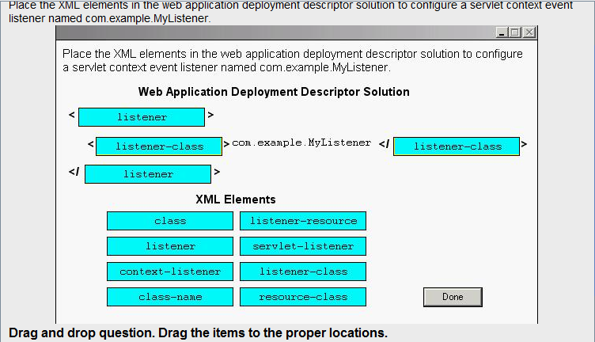

Q: 1 To take advantage of the capabilities of modern browsers that use web
standards, such as XHTML and CSS, your web application is being converted from simple JSP pages to
JSP Document format. However, one of your JSPs, /scripts/screenFunctions.jsp, generates a JavaScript
file. This file is included in several web forms to create screen-specific validation functions and are
included in these pages with the following statement:
10. <head>
11. <script src='/scripts/screenFunctions.jsp'
12. language='javascript'
13. type='application/javascript'> </script>
14. </head>
15. <!-- body of the web form -->
Which JSP code snippet declares that this JSP Document is a JavaScript file?
A. <%@ page contentType='application/javascript' %>
B. <jsp:page contentType='application/javascript' />
C. <jsp:document contentType='application/javascript' />
D. <jsp:directive.page contentType='application/javascript' />
E. No declaration is needed because the web form XHTML page already declares the MIME type of the
/scripts/screenFunctions.jsp file in the <script> tag.
Answer: D
解释:JSP Document 使用XML标签表达的JSP。page 指令表示为<jsp:directive.page >
Q: 2 Given the JSP code:
10. <html>
11. <body>
12. <jsp:useBean id='customer' class='com.example.Customer' />
13. Hello, ${customer.title} ${customer.lastName}, welcome
14. to Squeaky Beans, Inc.
15. </body>
16. </html>
Which three types of JSP code are used? (Choose three.)
A.Java code
B.template text
C.scripting code
D.standard action
E.expression language
Answer: B, D, E
解析：<html>...template text 模板文本
<jsp:useBean...>standard action 标准动作
${...}expression language EL表达式
Q: 3 You have built a collection of custom tags for your web application. The TLD
file is located in the file: /WEB-INF/myTags.xml. You refer to these tags in your JSPs using the symbolic
name: myTags. Which deployment descriptor element must you use to make this link between the
symbolic name and the TLD file name?
A. <taglib>
<name>myTags</name>
<location>/WEB-INF/myTags.xml</location>
</taglib>
B. <tags>
<name>myTags</name>
<location>/WEB-INF/myTags.xml</location>
</tags>
C. <tags>
<tags-uri>myTags</taglib-uri>
<tags-location>/WEB-INF/myTags.xml</tags-location>
</tags>
D. <taglib>
<taglib-uri>myTags</taglib-uri>
<taglib-location>/WEB-INF/myTags.xml</taglib-location>
</taglib>
Answer: D
解析：部署描述链接标签名和实际文件名。
Q: 4 Which implicit object is used in a JSP page to retrieve values associated with
<context-param> entries in the deployment descriptor?
A.config
B.request
C.session
D.application
Answer: D
解析：<context-param>内的值为application范围内的参数。
Q: 5

解析：左边答案，右边选择。
Q: 6
解析:
<%@include file=“ ”%>转译时与该页面一起翻译成java代码；
<jsp:include page=“ “/>动作是在请求时，装入该page所指页面。
Q: 7 You have created a JSP that includes instance variables and a great deal of
scriptlet code. Unfortunately, after extensive load testing, you have discovered several race conditions in
your JSP scriptlet code. To fix these problems would require significant recoding, but you are already
behind schedule. Which JSP code snippet can you use to resolve these concurrency problems?
A.<%@ page isThreadSafe='false' %>
B.<%@ implements SingleThreadModel %>
C.<%! implements SingleThreadModel %>
D.<%@ page useSingleThreadModel='true' %>
E.<%@ page implements='SingleThreadModel' %>
Answer: A
解析：声明页面线程不安全。
Q: 8 Click the Exhibit button.
The attribute "name" has a value of "Foo,"
What is the result if this tag handler's tag is invoked?
public class MyTagHandler extends TagSupport{
public int doStartTag()throws JspException{
try{
Writer our=pageContext.getResponse().getWriter();
String name=pageContext.findAttribute("name");
out.print(name);
}catch(Exception ex){
/*handle exception */
}
return SKIP_BODY;
}
public int doAfterBody()throws JspException{
try{
Writer out=pageContext.getResponse().gerWrite();
out.println("done");
}catch(Exception ex){
/*handle exception*/
}
return EVAL_PAGE;
}
//...
}
A.Foo
B.done
C.Foodone
D.An exception is thrown at runtime.
E.No output is produced from this code.
F.Compilation fails because of an error in this code.
Answer: A
解析：doStartTag()返回SKIP_BODY，所以跳过标签体的内容，即不再执行doAfterBody()
Q: 9 You are building a web application that will be used throughout the
European Union; therefore, it has significant internationalization requirements. You have been tasked to
create a custom tag that generates a message using the java.text.MessageFormat class. The tag will take
the resourceKey attribute and a variable number of argument attributes with the format, arg<N>. Here
is an example use of this tag and its output:
<t:message resourceKey='diskFileMsg' arg0='MyDisk' arg1='1247' />
generates:
The disk "MyDisk" contains 1247 file(s).
Which Simple tag class definition accomplishes this goal of handling a variable number of tag attributes?
A. public class MessageTag extends SimpleTagSupport
implements VariableAttributes {
private Map attributes = new HashMap();
public void setVariableAttribute(String uri,
String name, Object value) {
this.attributes.put(name, value);
}
// more tag handler methods
}
B. The Simple tag model does NOT support a variable number of attributes.
C. public class MessageTag extends SimpleTagSupport
implements DynamicAttributes {
private Map attributes = new HashMap();
public void putAttribute(String name, Object value) {
this.attributes.put(name, value);
}
// more tag handler methods
}
D. public class MessageTag extends SimpleTagSupport
implements VariableAttributes {
private Map attributes = new HashMap();
public void putAttribute(String name, Object value) {
this.attributes.put(name, value);
}
// more tag handler methods
}
E. public class MessageTag extends SimpleTagSupport
implements DynamicAttributes {
private Map attributes = new HashMap();
public void setDynamicAttribute(String uri, String name,
Object value) {
this.attributes.put(name, value);
}
// more tag handler methods
}
Answer: E
解析：动态属性实现DynamicAttributes接口，重写setDynamicAttributes方法。
Q: 10 Given the JSP code:
<% request.setAttribute("foo", "bar"); %>
and the Classic tag handler code:
5. public int doStartTag() throws JspException {
6. // insert code here
7. // return int
8. }
Assume there are no other "foo" attributes in the web application.
Which invocation on the pageContext object, inserted at line 6, assigns "bar" to the variable x?
A. String x = (String) pageContext.getAttribute("foo");
B. String x = (String) pageContext.getRequestScope("foo");
C. It is NOT possible to access the pageContext object from within doStartTag.
D. String x = (String)pageContext.getRequest().getAttribute("foo");
E. String x = (String) pageContext.getAttribute("foo",PageContext.ANY_SCOPE);
Answer: D
解析：
属性存放在请求域中，从上下文中获得请求，再获得属性值。
setAttribute (java.lang.String name, java.lang.Object value)
Q: 11 Which two statements about tag files are true? (Choose two.)
A. Classic tag handlers and tag files CANNOT reside in the same tag library.
B. A file named foo.tag, located in /WEB-INF/tags/bar, is recognized as a tag file by the container.
C. A file named foo.tag, bundled in a JAR file but NOT defined in a TLD, triggers a container translation
error.
D. A file named foo.tag, located in a web application's root directory, is recognized as a tag file by the
container.
E. If files foo1.tag and foo2.tag both reside in /WEB-INF/tags/bar, the container will consider them part of the
same tag library.
Answer: B, E
解析：
C.不会出现错误而是会忽略。
D.tag文件要放在/WEB-INF/tags/目录下
Q: 12 The sl:shoppingList and sl:item tags output a shopping list to the response
and are used as follows:
11. <sl:shoppingList>
12. <sl:item name="Bread" />
13. <sl:item name="Milk" />
14. <sl:item name="Eggs" />
15. </sl:shoppingList>
The tag handler for sl:shoppingList is ShoppingListTag and the tag handler for sl:item is
ItemSimpleTag.
ShoppingListTag extends BodyTagSupport and ItemSimpleTag extends SimpleTagSupport.
Which is true?
A. ItemSimpleTag can find the enclosing instance of ShoppingListTag by calling getParent() and casting the
result to ShoppingListTag.
B. ShoppingListTag can find the child instances of ItemSimpleTag by calling super.getChildren() and casting
each to an ItemSimpleTag.
C. It is impossible for ItemSimpleTag and ShoppingListTag to find each other in a tag hierarchy because one is
a Simple tag and the other is a Classic tag.
D. ShoppingListTag can find the child instances of ItemSimpleTag by calling getChildren() on the
PageContext and casting each to an ItemSimpleTag.
E. ItemSimpleTag can find the enclosing instance of ShoppingListTag by calling findAncestorWithClass() on
the PageContext and casting the result to ShoppingListTag.
Answer: A
解析：
SimpleTagSupport extends java.lang.Object implements SimpleTag
BodyTagSupport extends TagSupport implements BodyTag
ItemSimpleTag继承SimpleTagSupport类，而SimpleTagSupport继承Object类所以可以转型为ShoppingListTag
Q: 13 Servlet A receives a request that it forwards to servlet B within another web
application in the same web container. Servlet A needs to share data with servlet B and that data must
not be visible to other servlets in A's web application. In which object can the data that A shares with B
be stored?
A. HttpSession
B. ServletConfig
C. ServletContext
D. HttpServletRequest
E. HttpServletResponse
Answer: D
解析：Servlet A接收并请求共享数据，而Servlet A所在的项目不能访问共享数据，所以使用请求域共享.
Q: 14 Your web site has many user-customizable features, for example font and
color preferences on web pages. Your IT department has already built a subsystem for user preferences
using the Java SE platform's lang.util.prefs package APIs, and you have been ordered to reuse this
subsystem in your web application. You need to create an event listener that constructs the preferences
factory and stores it in the application scope for later use. Furthermore, this factory requires that the
URL to a database must be declared in the deployment descriptor like this:
42. <context-param>
43. <param-name>prefsDbURL</param-name>
44. <param-value>
45.
jdbc:pointbase:server://dbhost:4747/prefsDB
46. </param-value>
47. </context-param>
Which partial listener class will accomplish this goal?
A. public class PrefsFactoryInitializer implements ContextListener {
public void contextInitialized(ServletContextEvent e) {
ServletContext ctx = e.getContext();
String prefsURL = ctx.getParameter("prefsDbURL");
PreferencesFactory myFactory = makeFactory(prefsURL);
ctx.putAttribute("myPrefsFactory", myFactory);
}
// more code here
}
B. public class PrefsFactoryInitializer implements ServletContextListener {
public void contextCreated(ServletContext ctx) {
String prefsURL = ctx.getInitParameter("prefsDbURL");
PreferencesFactory myFactory = makeFactory(prefsURL);
ctx.setAttribute("myPrefsFactory", myFactory);
}
// more code here
}
C. public class PrefsFactoryInitializer implements ServletContextListener {
public void contextInitialized(ServletContextEvent e) {
ServletContext ctx = e.getServletContext();
String prefsURL = ctx.getInitParameter("prefsDbURL");
PreferencesFactory myFactory = makeFactory(prefsURL);
ctx.setAttribute("myPrefsFactory", myFactory);
}
// more code here
}
D. public class PrefsFactoryInitializer implements ContextListener {
public void contextCreated(ServletContext ctx) {
String prefsURL = ctx.getParameter("prefsDbURL");
PreferencesFactory myFactory = makeFactory(prefsURL);
ctx.putAttribute("myPrefsFactory", myFactory);
}
// more code here
}
Answer: C
解析：没有ContextListener接口，
ServletContextListener接口只有两个方法contextDestroyed,contextInitialized.
Q: 15 A developer wants a web application to be notified when the application is
about to be shut down. Which two actions are necessary to accomplish this goal? (Choose two.)
A.include a listener directive in a JSP page
B.configure a listener in the TLD file using the <listener> element
C.include a <servlet-destroy> element in the web application deployment descriptor
D.configure a listener in the application deployment descriptor, using the <listener> element
E.include a class implementing ServletContextListener as part of the web application deployment
F.include a class implementing ContextDestroyedListener as part of the web application deployment
G.include a class implementing HttpSessionAttributeListener as part of the web application deployment
Answer: D, E
解析：部署文件部署监听器，写一个监听器实现ServletContextListener接口。
F选项的接口不存在，G选项的HttpSessionAttributeListener接口是监听会话中的属性状态，而不是项目的状态。
Q: 16 You want to create a filter for your web application and your filter will
implement javax.servlet.Filter.
Which two statements are true? (Choose two.)
A. Your filter class must implement an init method and a destroy method.
B. Your filter class must also implement javax.servlet.FilterChain.
C. When your filter chains to the next filter, it should pass the same arguments it received in its doFilter
method.
D. The method that your filter invokes on the object it received that implements javax.servlet.FilterChain can
invoke either another filter or a servlet.
E. Your filter class must implement a doFilter method that takes, among other things, an HTTPServletRequest
object and an HTTPServletResponse object.
Answer: A, D
解析：
B.不用实现FilterChain接口(但是要导入)。
C.不一定传递接受内容。
E.实现doFilter(ServletRequest arg0,ServletResponse arg1,FilterChain arg2)
Q: 17 Which three are true about the HttpServletRequestWrapper class? (Choose
three.)
A. The HttpServletRequestWrapper is an example of the Decorator pattern.
B. The HttpServletRequestWrapper can be used to extend the functionality of a servlet request.
C. A subclass of HttpServletRequestWrapper CANNOT modify the behavior of the getReader method.
D. An HttpServletRequestWrapper may be used only by a class implementing the javax.servlet.Filter interface.
E. An HttpServletRequestWrapper CANNOT be used on the request passed to the RequestDispatcher.include
method.
F. An HttpServletRequestWrapper may modify the header of a request within an object implementing the
javax.servlet.Filter interface.
Answer: A, B, F
解析：HttpServletRequestWrapper用于过滤请求
Q: 18 Click the Exhibit button.
The resource requested by the RequestDispatcher is available and implemented by the
DestinationServlet.
//From file SourceServlet.java
public class SourceServlet extends HttpServlet{
public void service(HttpServletRequest request,HttpServletResponse response)throws ServletException,IOException{
ServletContext cxt=getServletConfig().getServletContext();
RequestDispatcher rd=cxt.getRequestDispatcher("/destn");
response.getWriter().println("hello from source");
response.flushBuffer();
rd.forward(request,response);
}
}
//From file DestinationServlet.java
public class DestinationServlet extends HttpServlet{
public void service(HttpServletRequest request,HttpServletResponse response)throws ServletException,IOException{
response.getWriter().println("hello from dest");
response.flushBuffer();
}
}
What is the result?
A.An exception is thrown at runtime by SourceServlet.
B.An exception is thrown at runtime by DestinationServlet.
C.Only "hello from dest" appears in the response output stream.
D.Both "hello from source" and "hello from dest" appear in the response output stream.
Answer: A
解析：response.flushBuffer已经committed(提交)，在forward会抛出异常。
Q: 19 A developer wants to make a name attribute available to all servlets
associated with a particular user, across multiple requests from that user, from the same browser
instance.
Which two provide this capability from within a tag handler? (Choose two.)
A. pageContext.setAttribute("name", theValue);
B. pageContext.setAttribute("name", getSession());
C. pageContext.getRequest().setAttribute("name", theValue);
D. pageContext.getSession().setAttribute("name", theValue);
E. pageContext.setAttribute("name", theValue,
PageContext.PAGE_SCOPE);
F. pageContext.setAttribute("name", theValue,
PageContext.SESSION_SCOPE);
Answer: D, F
解析：A、B没有设定属性域。混合的请求的所以servlet可以访问参数，所以D、F正确
Q: 20 Given the definition of MyServlet:
11. public class MyServlet extends HttpServlet {
12. public void service(HttpServletRequest request,
13. HttpServletResponse response)
14. throws ServletException, IOException {
15. HttpSession session = request.getSession();
16. session.setAttribute("myAttribute","myAttributeValue");
17. session.invalidate();
18. response.getWriter().println("value=" +
19. session.getAttribute("myAttribute"));
20. }
21. }
What is the result when a request is sent to MyServlet?
A.An IllegalStateException is thrown at runtime.
B.An InvalidSessionException is thrown at runtime.
C.The string "value=null" appears in the response stream.
D.The string "value=myAttributeValue" appears in the response stream.
Answer: A
解析：会话无效化后在调用，就会抛出IllegalStateException
Q: 21 You need to store a Java long primitive attribute, called customerOID, into
the session scope. Which two code snippets allow you to insert this value into the session? (Choose two.)
A. long customerOID = 47L;
session.setAttribute("customerOID", new Long(customerOID));
B. long customerOID = 47L;
session.setLongAttribute("customerOID", new Long(customerOID));
C. long customerOID = 47L;
session.setAttribute("customerOID", customerOID);
D. long customerOID = 47L;
session.setNumericAttribute("customerOID", new Long(customerOID));
E. long customerOID = 47L;
session.setLongAttribute("customerOID", customerOID);
F. long customerOID = 47L;
session.setNumericAttribute("customerOID", customerOID);
Answer: A, C
解析：HttpSession没有setLongAttribute和setNumericAttribute
Q: 22 A developer for the company web site has been told that users may turn off
cookie support in their browsers. What must the developer do to ensure that these customers can still use
the web application?
A. The developer must ensure that every URL is properly encoded using the appropriate URL rewriting APIs.
B. The developer must provide an alternate mechanism for managing sessions and abandon the HttpSession
mechanism entirely.
C. The developer can ignore this issue. Web containers are required to support automatic URL rewriting when
cookies are not supported.
D. The developer must add the string id=<sessionid> to the end of every URL to ensure that the conversation
with the browser can continue.
Answer: A
解析：cookie禁用使用适当的URL重写方法，D是重新方法的原理
Q: 23 Your web application requires the adding and deleting of many session
attributes during a complex use case. A bug report has come in that indicates that an important session
attribute is being deleted too soon and a NullPointerException is being thrown several interactions after
the fact. You have decided to create a session event listener that will log when attributes are being deleted
so you can track down when the attribute is erroneously being deleted.
Which listener class will accomplish this debugging goal?
A. Create an HttpSessionAttributeListener class and implement the attributeDeleted method and log the
attribute name using the getName method on the event object.
B. Create an HttpSessionAttributeListener class and implement the attributeRemoved method and log the
attribute name using the getName method on the event object.
C. Create an SessionAttributeListener class and implement the attributeRemoved method and log the attribute
name using the getAttributeName method on the event object.
D. Create an SessionAttributeListener class and implement the attributeDeleted method and log the attribute
name using the getAttributeName method on the event object.
Answer: B
解析：HttpSessionAttributeListener只有attributeAdded,attributeRemoved和attributeReplaced三个方法。
Q: 24 As a convenience feature, your web pages include an Ajax request every five
minutes to a special servlet that monitors the age of the user's session. The client-side JavaScript that
handles the Ajax callback displays a message on the screen as the session ages. The Ajax call does NOT
pass any cookies, but it passes the session ID in a request parameter called sessionID. In addition, assume
that your webapp keeps a hashmap of session objects by the ID. Here is a partial implementation of this
servlet:
10. public class SessionAgeServlet extends HttpServlet {
11. public void service(HttpServletRequest request, HttpServletResponse) throws IOException {
12. String sessionID = request.getParameter("sessionID");
13. HttpSession session = getSession(sessionID);
14. long age = // your code here
15. response.getWriter().print(age);
16. } ... // more code here
47. }
Which code snippet on line 14, will determine the age of the session?
A.session.getMaxInactiveInterval();
B.session.getLastAccessed().getTime() - session.getCreationTime().getTime();
C.session.getLastAccessedTime().getTime() - session.getCreationTime().getTime();
D.session.getLastAccessed() - session.getCreationTime();
E.session.getMaxInactiveInterval() - session.getCreationTime();
F.session.getLastAccessedTime() - session.getCreationTime();
Answer: F
解析：最后访问时间-创建时间()
Q: 25
Which statement is true about web container session management?
A. Access to session-scoped attributes is guaranteed to be thread-safe by the web container.
B. To activate URL rewriting, the developer must use the HttpServletResponse.setURLRewriting method.
C. If the web application uses HTTPS, then the web container may use the data on the HTTPS request stream
to identify the client.
D. The JSESSIONID cookie is stored permanently on the client so that a user may return to the web
application and the web container will rejoin that session.
Answer: C
解析：
A.访问会话域的属性不是线程安全的（有可能并发）B.URL重新用HttpServletResponse.encodeURL(或encodeRedirectURL)
D.JSESSIONID是禁用cookie时，URL重写产生的，而且不是永久的。
Q: 26
One of the use cases in your web application uses many session-scoped
attributes. At the end of the use case, you want to clear out this set of attributes from the session object.
Assume that this static variable holds this set of attribute names:
201. private static final Set<String> USE_CASE_ATTRS;
202. static {
203. USE_CASE_ATTRS.add("customerOID");
204. USE_CASE_ATTRS.add("custMgrBean");
205. USE_CASE_ATTRS.add("orderOID");
206. USE_CASE_ATTRS.add("orderMgrBean");
207. }
Which code snippet deletes these attributes from the session object?
A. session.removeAll(USE_CASE_ATTRS);
B. for ( String attr : USE_CASE_ATTRS ) {
session.remove(attr);
}
C. for ( String attr : USE_CASE_ATTRS ) {
session.removeAttribute(attr);
}
D. for ( String attr : USE_CASE_ATTRS ) {
session.deleteAttribute(attr);
}
E. session.deleteAllAttributes(USE_CASE_ATTRS);
Answer: C
解析：删除HttpSession会话的属性用removeAttribute
Q: 27
Assume that a news tag library contains the tags lookup and item:
lookup
Retrieves the latest news headlines and executes the tag body once for each headline.
Exposes a NESTED page-scoped attribute called headline of type com.example.Headline containing
details for that headline.
item
Outputs the HTML for a single news headline. Accepts an attribute info of type
com.example.Headline containing details for the headline to be rendered.
Which snippet of JSP codereturns the latest news headlines in an HTML table, one per row?
A. <table>
<tr>
<td>
<news:lookup />
<news:item info="${headline}" />
</td>
</tr>
</table>
B. <news:lookup />
<table>
<tr>
<td><news:item info="${headline}" /></td>
</tr>
</table>
C. <table>
<news:lookup>
<tr>
<td><news:item info="${headline}" /></td>
</tr>
</news:lookup>
</table>
D. <table>
<tr>
<news:lookup>
<td><news:item info="${headline}" /></td>
</news:lookup>
</tr>
</table>
Answer: C
解析：
标签lookup获得最近的新闻标题并执行标签体的内容，显示页面域的标题内容。
标签item获取并输出新闻标题的页面。
Q: 28 Which JSTL code snippet can be used to perform URL rewriting?
A.<a href='<c:url url="foo.jsp"/>' />
B.<a href='<c:link url="foo.jsp"/>' />
C.<a href='<c:url value="foo.jsp"/>' />
D.<a href='<c:link value="foo.jsp"/>' />
Answer: C
解析：JSTL的URL重新格式<c:url value="">
Q: 29 Assume the scoped attribute priority does NOT yet exist. Which two create
and set a new request-scoped attribute priority to the value "medium"? (Choose two.)
A.${priority = 'medium'}
B.${requestScope['priority'] = 'medium'}
C.<c:set var="priority" value="medium" />
D.<c:set var="priority" scope="request">medium</c:set>
E.<c:set var="priority" value="medium" scope="request" />
F.<c:set property="priority" scope="request">medium</c:set>
G.<c:set property="priority" value="medium" scope="request" />
Answer: D, E
解析：JSTL设置属性的两种方式
Q: 30 You are creating a JSP page to display a collection of data. This data can be
displayed in several different ways so the architect on your project decided to create a generic servlet that
generates a comma-delimited string so that various pages can render the data in different ways. This
servlet takes on request parameter: objectID. Assume that this servlet is mapped to the URL pattern:
/WEB-INF/data.
In the JSP you are creating, you need to split this string into its elements separated by commas and
generate an HTML <ul> list from the data.
Which JSTL code snippet will accomplish this goal?
A. <c:import varReader='dataString' url='/WEB-INF/data'>
<c:param name='objectID' value='${currentOID}' />
</c:import>
<ul>
<c:forTokens items'${dataString.split(",")}' var='item'>
<li>${item}</li>
</c:forTokens>
</ul>
B. <c:import varReader='dataString' url='/WEB-INF/data'>
<c:param name='objectID' value='${currentOID}' />
</c:import>
<ul>
<c:forTokens items'${dataString}' delims=',' var='item'>
<li>${item}</li>
</c:forTokens>
</ul>
C. <c:import var='dataString' url='/WEB-INF/data'>
<c:param name='objectID' value='${currentOID}' />
</c:import>
<ul>
<c:forTokens items'${dataString.split(",")}' var='item'>
<li>${item}</li>
</c:forTokens>
</ul>
D. <c:import var='dataString' url='/WEB-INF/data'>
<c:param name='objectID' value='${currentOID}' />
</c:import>
<ul>
<c:forTokens items'${dataString}' delims=',' var='item'>
<li>${item}</li>
</c:forTokens>
</ul>
Answer: D
解析：JSTL格式
Q: 31 Which three are true about TLD files? (Choose three.)
A. The web container recognizes TLD files placed in any subdirectory of WEB-INF.
B. When deployed inside a JAR file, TLD files must be in the META-INF directory, or a subdirectory of it.
C. A tag handler's attribute must be included in the TLD file only if the attribute can accept request-time
expressions.
D. The web container can generate an implicit TLD file for a tag library comprised of both simple tag handlers
and tag files.
E. The web container can automatically extend the tag library map described in a web.xml file by including
entries extracted from the web application's TLD files.
Answer: A, B, E
解析:D.只有tag files
Q: 32 Your management has required that all JSPs be created to generate
XHTML-compliant content and to facilitate that decision, you are required to create all JSPs using the
JSP Document format. In the reviewOrder.jspx page, you need to use several core JSTL tags to process
the collection of order items in the customer's shopping cart. Which JSP code snippets must you use in
the reviewOrder.jspx page?
A. <html xmlns:jsp="http://java.sun.com/JSP/Page"
version="2.0">
<jsp:directive.taglib prefix="c"
uri="http://java.sun.com/jsp/jstl/core" />
<!-- page content -->
</html>
B. <html xmlns:jsp="http://java.sun.com/JSP/Page"
version="2.0"
xmlns:c="http://java.sun.com/jsp/jstl/core">
<!-- page content -->
</html>
C. <jsp:root xmlns:jsp="http://java.sun.com/JSP/Page"
version="2.0">
<jsp:directive.taglib prefix="c"
uri="http://java.sun.com/jsp/jstl/core" />
<!-- page content -->
</jsp:root>
D. <jsp:root xmlns:jsp="http://java.sun.com/JSP/Page"
version="2.0"
xmlns:c="http://java.sun.com/jsp/jstl/core">
<!-- page content -->
</jsp:root>
Answer: D
解析：<html>不是jsp标签，C.导入的是自定义标签库的格式
Q: 33 Which two JSTL URL-related tags perform URL rewriting? (Choose two.)
A.url
B.link
C.param
D.import
E.redirect
Answer: A, E
解析：<a href='<c:url value="foo.jsp"/>' />
Q: 34 A custom JSP tag must be able to support an arbitrary number of attributes
whose names are unknown when the tag class is designed. Which two are true? (Choose two.)
A. The <body-content> element in the echo tag TLD must have the value JSP.
B. The echo tag handler must define the setAttribute(String key, String value) method.
C. The <dynamic-attributes>true</dynamic-attributes> element must appear in the echo tag TLD.
D. The class implementing the echo tag handler must implement the javax.servlet.jsp.tagext.IterationTag
interface.
E. The class implementing the echo tag handler must implement the javax.servlet.jsp.tagext.DynamicAttributes
interface.
Answer: C, E
解析：DynamicAttributes接口支持任意数量的未知属性，
C.允许接受动态属性。E.
Q: 35 A developer has used this code within a servlet:
62. if(request.isUserInRole("vip")) {
63. // VIP-related logic here
64. }
What else must the developer do to ensure that the intended security goal is achieved?
A.create a user called vip in the security realm
B.define a group within the security realm and call it vip
C.define a security-role named vip in the deployment descriptor
D.declare a security-role-ref for vip in the deployment descriptor
Answer: D
解析:security-role-ref
元素将 security-role
定义的安全角色链接到备用角色名vip
Q: 36 Given:
3. class MyServlet extends HttpServlet {
4. public void doPut(HttpServletRequest req, HttpServletResponse resp) throws ServletException,
IOException {
5. // servlet code here ...
26. }
27. }
If the DD contains a single security constraint associated with MyServlet and its only <http-method> tags
and <auth-constraint> tags are:
<http-method>GET</http-method>
<http-method>PUT</http-method>
<auth-constraint>Admin</auth-constraint>
Which four requests would be allowed by the container? (Choose four.)
A.A user whose role is Admin can perform a PUT.
B.A user whose role is Admin can perform a GET.
C.A user whose role is Admin can perform a POST.
D.A user whose role is Member can perform a PUT.
E.A user whose role is Member can perform a POST.
F.A user whose role is Member can perform a GET.
Answer: A, B, C, E
解析：只有用户Admin具有GET、PUT方法的访问权。
Q: 37 What is true about Java EE authentication mechanisms?
A. If your deployment descriptor correctly declares an authentication type of CLIENT_CERT, your users must
have a certificate from an official source before they can use your application.
B. If your deployment descriptor correctly declares an authentication type of BASIC, the container
automatically requests a user name and password whenever a user starts a new session.
C. If you want your web application to support the widest possible array of browsers, and you want to perform
authentication, the best choice of Java EE authentication mechanisms is DIGEST.
D. To use Java EE FORM authentication, you must declare two HTML files in your deployment descriptor,
and you must use a predefined action in the HTML file that handles your user's login.
Answer: D
解析：
BASIC：HTTP规范
DIGEST：HTTP规范，数据完整性强一些，但不算SSL
FORM：J2EE规范，数据完整性非常弱，没有加密，允许有登录界面。
CLIENT-CERT：J2EE规范，数据完整性很强，公共钥匙#
Q: 38 If you want to use the Java EE platform's built-in type of authentication
that uses a custom HTML page for authentication, which two statements are true? (Choose two.)
A. Your deployment descriptor will need to contain this tag:
<auth-method>CUSTOM</auth-method>.
B. The related custom HTML login page must be named loginPage.html.
C. When you use this type of authentication, SSL is turned on automatically.
D. You must have a tag in your deployment descriptor that allows you to point to both a login HTML page and
an HTML page for handling any login errors.
E. In the HTML related to authentication for this application, you must use predefined variable names for the
variables that store the user and password values.
Answer: D, E
解析：A.可以不用。B.不一定。C.不会自动打开
Q: 39 Given this fragment in a servlet:
23. if(req.isUserInRole("Admin")) {
24. // do stuff
25. }
And the following fragment from the related Java EE deployment descriptor:
812.<security-role-ref>
813.<role-name>Admin</role-name>
814.<role-link>Administrator</role-link>
815.</security-role-ref>
900.<security-role>
901.<role-name>Admin</role-name>
902.<role-name>Administrator</role-name>
903.</security-role>
What is the result?
A.Line 24 can never be reached.
B.The deployment descriptor is NOT valid.
C.If line 24 executes, the user's role will be Admin.
D.If line 24 executes, the user's role will be Administrator.
E.If line 24 executes the user's role will NOT be predictable.
Answer: D
解析：<role-line>标签的元素是<security-role-ref>标签的替代元素。
Q: 40 Given the security constraint in a DD:
101. <security-constraint>
102. <web-resource-collection>
103. <web-resource-name>Foo</web-resource-name>
104. <url-pattern>/Bar/Baz/*</url-pattern>
105. <http-method>POST</http-method>
106. </web-resource-collection>
107. <auth-constraint>
108. <role-name>DEVELOPER</role-name>
109. </auth-constraint>
110. </security-constraint>
And given that "MANAGER" is a valid role-name, which four are true for this security constraint?
(Choose four.)
A.MANAGER can do a GET on resources in the /Bar/Baz directory.
B.MANAGER can do a POST on any resource in the /Bar/Baz directory.
C.MANAGER can do a TRACE on any resource in the /Bar/Baz directory.
D.DEVELOPER can do a GET on resources in the /Bar/Baz directory.
E.DEVELOPER can do only a POST on resources in the /Bar/Baz directory.
F.DEVELOPER can do a TRACE on any resource in the /Bar/Baz directory.
Answer: A, C, D, F
解析：E.只有用户DEVELOPER具有POST方法的访问权，但不是只能用POST方法。
Q: 41 Which three are valid URL mappings to a servlet in a web deployment
descriptor? (Choose three.)
A.*/*
B.*.do
C.MyServlet
D./MyServlet
E./MyServlet/*
F.MyServlet/*.jsp
Answer: B, D, E
解析：B.*.do文件即是servlet.C.不是路径。F.*.jsp是jsp而不是servlet.
Q: 42 Click the Task button.
Place the appropriate element names on the left on the web application deployment descriptor on the
right so that files ending in ".mpg" are associated with the MIME type "video/mpeg."
解析：文件格式映射
Q: 43 Which three web application deployment descriptor elements allow web
components to gain references to resources or EJB components? (Choose three.)
A.ejb-ref
B.jdbc-ref
C.servlet-ref
D.resource-ref
E.javamail-ref
F.ejb-remote-ref
G.resource-env-ref
Answer: A, D, G
解析：部署资源或者EJB组件。
Q: 44 After a merger with another small business, your company has inherited a
legacy WAR file but the original source files were lost. After reading the documentation of that web
application, you discover that the WAR file contains a useful tag library that you want to reuse in your
own webapp packaged as a WAR file.
What do you need to do to reuse this tag library?
A. Simply rename the legacy WAR file as a JAR file and place it in your webapp's library directory.
B. Unpack the legacy WAR file, move the TLD file to the META-INF directory, repackage the whole thing as
a JAR file, and place that JAR file in your webapp's library directory.
C. Unpack the legacy WAR file, move the TLD file to the META-INF directory, move the class files to the
top-level directory, repackage the whole thing as a JAR file, and place that JAR file in your webapp's library
directory.
D. Unpack the legacy WAR file, move the TLD file to the META-INF directory, move the class files to the
top-level directory, repackage the WAR, and place that WAR file in your webapp's WEB-INF directory.
Answer: C
解析：
JAR(Java Archive file)封装类文件
WAR(Web Archive file)封装Web站点,所有D不正确。
Q: 45 Which two actions protect a resource file from direct HTTP access within a
web application? (Choose two.)
A.placing it in the /secure directory
B.placing it in the /WEB-INF directory
C.placing it in the /META-INF/secure directory
D.creating a <web-resource> element within the deployment descriptor
E.creating a <secure-resource> element within the deployment descriptor
Answer: B, C
解析：阻止HTTP直接访问，没有D、E的部署标签
Q: 46 Given that www.example.com/SCWCDtestApp is a validly deployed Java
EE web application and that all of the JSP files specified in the requests below exist in the locations
specified. Which two requests, issued from a browser, will return an HTTP 404 error? (Choose two.)
A.http://www.example.com/SCWCDtestApp/test.jsp
B.http://www.example.com/SCWCDtestApp/WEB-INF/test.jsp
C.http://www.example.com/SCWCDtestApp/WEB-WAR/test.jsp
D.http://www.example.com/SCWCDtestApp/Customer/test.jsp
E.http://www.example.com/SCWCDtestApp/META-INF/test.jsp
F.http://www.example.com/SCWCDtestApp/Customer/Update/test.jsp
Answer: B, E
解析：
B.WEB-INF为网络应用程序的根目录
E.META-INF是与WEB-INF同层的目录
Q: 47 Which two about WAR files are true? (Choose two.)
A.WAR files must be located in the web application library directory.
B.WAR files must contain the web application deployment descriptor.
C.WAR files must be created by using archive tools designed specifically for that purpose.
D.The web container must serve the content of any META-INF directory located in a WAR file.
E.The web container must allow access to resources in JARs in the web application library directory.
Answer: B, E
解析：WAR为封装WEB站点的文件。所以必须包含部署文件(B).
Q: 48 Given this fragment from a Java EE deployment descriptor:
124.<welcome-file>beta.html</welcome-file>
125.<welcome-file>alpha.html</welcome-file>
And this request from a browser:
http://www.sun.com/SCWCDtestApp/register
Which statement is correct, when the container receives this request?
A.This deployment descriptor is NOT valid.
B.The container first looks in the register directory for beta.html.
C.The container first looks in the register directory for alpha.html.
D.The container first looks for a servlet mapping in the deployment descriptor.
Answer: D
解析：第一个加载的是部署中映射的servlet（IQ题）
Q: 49 Which EL expression evaluates to the request URI?
A.${requestURI}
B.${request.URI}
C.${request.getURI}
D.${request.requestURI}
E.${requestScope.requestURI}
F.${pageContext.request.requestURI}
G.${requestScope.request.requestURI}
Answer: F
解析：request存放在上下文中
Q: 50 Given:
1. <% int[] nums = {42,420,4200};
2. request.setAttribute("foo", nums); %>
3. ${5 + 3 lt 6}
4. ${requestScope['foo'][0] ne 10 div 0}
5. ${10 div 0}
What is the result?
A.true true
B.false true
C.false true 0
D.true true Infinity
E.false true Infinity
F.An exception is thrown.
G.Compilation or translation fails.
Answer: E
解析：
lt(<,less then),gt(>,great than),ne(!=,not equal),div(/,divide)
Q: 51 You have created a web application that you license to real estate brokers.
The webapp is highly customizable including the email address of the broker, which is placed on the
footer of each page. This is configured as a context parameter in the deployment descriptor:
10. <context-param>
11. <param-name>footerEmail</param-name>
12. <param-value>joe@estates-r-us.biz</param-value>
13. </context-param>
Which EL code snippet will insert this context parameter into the footer?
A.<a href='mailto:${footerEmail}'>Contact me</a>
B.<a href='mailto:${initParam@footerEmail}'>Contact me</a>
C.<a href='mailto:${initParam.footerEmail}'>Contact me</a>
D.<a href='mailto:${contextParam@footerEmail}'>Contact me</a>
E.<a href='mailto:${contextParam.footerEmail}'>Contact me</a>
Answer: C
解析：value=getServletContext().getInitparameter("footerEmail")
Q: 52 Given an EL function foo, in namespace func, that requires a long as a
parameter and returns a Map, which two are valid invocations of function foo? (Choose two.)
A.${func(1)}
B.${foo:func(4)}
C.${func:foo(2)}
D.${foo(5):func}
E.${func:foo("easy")}
F.${func:foo("3").name}
Answer: C, F
解析：EL的前缀为func,EL function（EL 函数）为foo(long parameter)，返回Map对象，参数貌似没什么用
C.传递参数为2,返回整个Map对象。E.参数不正确。F.参数可以强制转换为long类型，name为Map对象的key值
Q: 53 Click the Exhibit button.
The Appliance class is a Singleton that loads a set of properties into a Map from an external data source.
Assume:
An instance of the Appliance class exists in the application-scoped attribute, appl
The appliance object includes the name property that maps to the value Cobia
The request-scoped attribute, prop, has the value name.
Which two EL code snippets will display the string Cobia? (Choose two.)
package com.example;
import java.util.*;
public class Appliance{
private Map<String,String>props;
public Appliance(){
this.props=new HashMap<String,String()>;
initialize();
}
public Map<String,String> getProperties(){
return this.props;
}
private void initialize(){
//code to load appliance properties
}
}
A.${appl.properties.name}
B.${appl.properties.prop}
C.${appl.properties[prop]}
D.${appl.properties[name]}
E.${appl.getProperties().get(prop)}
F.${appl.getProperties().get('name')}
Answer: A, C
解析：上下文中有一个Appliance类对象名为appl，Appliance类有一个Map类型属性props，Map中存放key=name，value=Cobia，要获取cobia。
A.properties获取Map对象，再根据key值获得值cobia。
C.properties获取Map对象，再从请求域中名为prop的值name，name作为key值获得值cobia。
Q: 54 Squeaky Beans Inc. hired an outside consultant to develop their web
application. To finish the job quickly, the consultant created several dozen JSP pages that directly
communicate with the database. The Squeaky business team has since purchased a set of business objects
to model their system, and the Squeaky developer charged with maintaining the web application must
now refactor all the JSPs to work with the new system. Which pattern can the developer use to solve this
problem?
A.Transfer Object
B.Service Locator
C.Intercepting Filter
D.Business Delegate
Answer: D
解析：
D.Bussiness Delegate(业务代理 )减少表示层(JSPs)与逻辑层的耦合。
Q: 55 A developer is designing a web application that must verify for each
request:
The originating request is from a trusted network.
The client has a valid session.
The client has been authenticated.
Which design pattern provides a solution in this situation?
A.Transfer Object
B.Session Facade
C.Intercepting Filter
D.Template Method
E.Model-View-Controller
Answer: C
解析：用过滤器验证请求的安全
C.Intercepting Filter(拦截过滤器)采用拦截的方式为request和response提供前期或后期的处理。
Q: 56 The Squeaky Bean company has decided to port their web application to a
new J2EE 1.4 container. While reviewing the application, a developer realizes that in multiple places
within the current application, nearly duplicate code exists that finds enterprise beans. Which pattern
should be used to eliminate this duplicate code?
A.Transfer Object
B.Front Controller
C.Service Locator
D.Intercepting Filter
E.Business Delegate
F.Model-View-Controller
Answer: C
解析：
C.Servive Locator封装数据库访问（如：JNDI），减少重复代码。
Q: 57 Which two are characteristics of the Transfer Object design pattern?
(Choose two.)
A. It reduces network traffic by collapsing multiple remote requests into one.
B. It increases the complexity of the remote interface by removing coarse-grained methods.
C. It increases the complexity of the design due to remote synchronization and version control issues.
D. It increases network performance introducing multiple fine-grained remote requests which return very small
amounts of data.
Answer: A, C
解析：
A.将获取参数改为获取对象，减少颗粒度。
C.因为并发传送对象造成同步和版本控制的复杂度(并发)。
Q: 58 A developer has created a special servlet that is responsible for generating
XML content that is sent to a data warehousing subsystem. This subsystem uses HTTP to request these
large data files, which are compressed by the servlet to save internal network bandwidth. The developer
has received a request from management to create several more of these data warehousing servlets. The
developer is about to copy and paste the compression code into each new servlet. Which design pattern
can consolidate this compression code to be used by all of the data warehousing servlets?
A.Facade
B.View Helper
C.Transfer Object
D.Intercepting Filter
E.Composite Facade
Answer: D
解析:用拦截器处理请求的数据，使其能被其它servlet使用。
Q: 59 Which two are characteristics of the Service Locator pattern? (Choose two.)
A.It encapsulates component lookup procedures.
B.It increases source code duplication and decreases reuse.
C.It improves client performance by caching context and factory objects.
D.It degrades network performance due to increased access to distributed lookup services.
Answer: A, C
解析:
A.封装查找(lookup)方法
C.通过缓存和工厂对象改进客户端性能
B.刚好相反，D.利用统一的服务器访问方式，提高了网络的性能。
Q: 60 Click the Task button.
Given a servlet mapped to /control, place the correct URI segment returned as a String on the
corresponding HttpServletRequest method call for the URI: /myapp/control/processorder.

解析:
getServletPath:获取Servlet的路径(题中Servlet mapped to /control)。
getPathInfo:获取路径的额外信息。
getContext:获取根路径，即项目名。
Q: 61 You are creating a web form with this HTML:
11. <form action="sendOrder.jsp">
12. <input type="text" name="creditCard">
13. <input type="text" name="expirationDate">
14. <input type="submit">
15. </form>
Which HTTP method is used when sending this request from the browser?
A. GET
B. PUT
C. POST
D. SEND
E. FORM
Answer: A
解析：method有两个属性get和post，默认为get。
Q: 62 Given an HttpSession session, a ServletRequest request, and a
ServletContext context, which retrieves a URL to /WEB-INF/myconfig.xml within a web application?
A.session.getResource("/WEB-INF/myconfig.xml")
B.request.getResource("/WEB-INF/myconfig.xml")
C.context.getResource("/WEB-INF/myconfig.xml")
D.getClass().getResource("/WEB-INF/myconfig.xml")
Answer: C
解析：资源存放在上下文中(application)，所以通过上下文获取。
Q: 63 Your company has a corporate policy that prohibits storing a customer's
credit card number in any corporate database. However, users have complained that they do NOT want
to re-enter their credit card number for each transaction. Your management has decided to use
client-side cookies to record the user's credit card number for 120 days. Furthermore, they also want to
protect this information during transit from the web browser to the web container; so the cookie must
only be transmitted over HTTPS.
Which code snippet creates the "creditCard" cookie and adds it to the out going response to be stored on
the user's web browser?
A. 10. Cookie c = new Cookie("creditCard", usersCard);
11. c.setSecure(true);
12. c.setAge(10368000);
13. response.addCookie(c);
B. 10. Cookie c = new Cookie("creditCard", usersCard);
11. c.setHttps(true);
12. c.setMaxAge(10368000);
13. response.setCookie(c);
C. 10. Cookie c = new Cookie("creditCard", usersCard);
11. c.setSecure(true);
12. c.setMaxAge(10368000);
13. response.addCookie(c);
D. 10. Cookie c = new Cookie("creditCard", usersCard);
11. c.setHttps(true);
12. c.setAge(10368000);
13. response.addCookie(c);
E. 10. Cookie c = new Cookie("creditCard", usersCard);
11. c.setSecure(true);
12. c.setAge(10368000);
13. response.setCookie(c);
Answer: C
解析：
setSecure设置cookie是否通过安全通道传送
setMagAge设置cookie的生命周期
addCookie给HttpServletResponse添加cookie
Q: 64 Given a header in an HTTP request:
X-Retries: 4
Which two retrieve the value of the header from a given HttpServletRequest request? (Choose two.)
A.request.getHeader("X-Retries")
B.request.getIntHeader("X-Retries")
C.request.getRequestHeader("X-Retries")
D.request.getHeaders("X-Retries").get(0)
E.request.getRequestHeaders("X-Retries").get(0)
Answer: A, B
解析：HttpServletRequest:
getHeader方法返回请求头文件字符串类型的值
getIntHeader方法返回请求头文件整形类型的值
Q: 65 For a given ServletResponse response, which two retrieve an object for
writing text data? (Choose two.)
A.response.getWriter()
B.response.getOutputStream()
C.response.getOutputWriter()
D.response.getWriter().getOutputStream()
E.response.getWriter(Writer.OUTPUT_TEXT)
Answer: A, B
解析：ServletResponse使用getWriter和getOutputStream方法写入内容
Q: 66 Which JSP standard action can be used to import content from a resource
called foo.jsp?
A.<jsp:import file='foo.jsp' />
B.<jsp:import page='foo.jsp' />
C.<jsp:include page='foo.jsp' />
D.<jsp:include file='foo.jsp' />
E.<jsp:import>foo.jsp</jsp:import>
F.<jsp:include>foo.jsp</jsp:include>
Answer: C
解析：没有jsp:import这个标签
<jsp:include page="">请求时加载page页面
<%@include file="">编译时与该页面编译为一个文件
Q: 67 Click the Task button.
A servlet context listener loads a list of com.example.Product objects from a database and stores that list
into the catalog attribute of the ServletContext object.
Place code snippets to construct a jsp:useBean standard action to access this catalog.
解析：从数据库中的com.example.Product对象中获取一个List属性(type="java.util.List)，存放在ServletContext对象中的catalog属性。(id="catalog" scope="application" )
--Servlet的上下文servletContext即jsp的application)
Q: 68 A session-scoped attribute is stored by a servlet, and then that servlet
forwards to a JSP page. Which three jsp:useBean attributes must be used to access this attribute in the
JSP page? (Choose three.)
A.id
B.name
C.bean
D.type
E.scope
F.beanName
Answer: A, D, E
解析：
id:命名Bean变量
type:指定该对象的变量类型
scope:指定Bean的作用域
Q: 69 You need to create a JavaBean object that is used only within the current
JSP page. It must NOT be accessible to any other page including those that this page might import.
Which JSP standard action can accomplish this goal?
A.<jsp:useBean id='pageBean' type='com.example.MyBean' />
B.<jsp:useBean id='pageBean' class='com.example.MyBean' />
C.<jsp:makeBean id='pageBean' type='com.example.MyBean' />
D.<jsp:makeBean id='pageBean' class='com.example.MyBean' />
E.<jsp:useBean name='pageBean' class='com.example.MyBean' />
F.<jsp:makeBean name='pageBean' class='com.example.MyBean' />
Answer: B
解析：
<jsp:useBean id="" class="">
scope默认值是page
Q: 70 Given an HttpServletRequest request and HttpServletResponse response,
which sets a cookie "username" with the value "joe" in a servlet?
A.request.addCookie("username", "joe")
B.request.setCookie("username", "joe")
C.response.addCookie("username", "joe")
D.request.addHeader(new Cookie("username", "joe"))
E.request.addCookie(new Cookie("username", "joe"))
F.response.addCookie(new Cookie("username", "joe"))
G.response.addHeader(new Cookie("username", "joe"))
Answer: F
解析：HttpServletResponse通过addCookie方法添加cookie
Q: 71 Your web page includes a Java SE v1.5 applet with the following
declaration:
11. <object classid='clsid:CAFEEFAC-0015-0000-0000-ABCDEFFEDCBA'
12. width='200' height='200'>
13. <param name='code' value='Applet.class' />
14. </object>
Which HTTP method is used to retrieve the applet code?
A.GET
B.PUT
C.POST
D.RETRIEVE
Answer: A
解析：默认的method为GET
Q: 72 You are creating a servlet that generates stock market graphs. You want to
provide the web browser with precise information about the amount of data being sent in the response
stream. Which two HttpServletResponse methods will you use to provide this information? (Choose
two.)
A.response.setLength(numberOfBytes);
B.response.setContentLength(numberOfBytes);
C.response.setHeader("Length", numberOfBytes);
D.response.setIntHeader("Length", numberOfBytes);
E.response.setHeader("Content-Length", numberOfBytes);
F.response.setIntHeader("Content-Length", numberOfBytes);
Answer: B, F
解析：HttpServletResponse方法：
setContentLength(in tlen)
setIntHeader(java.lang.String name,int value)。
Q: 73 You need to retrieve the username cookie from an HTTP request. If this
cookie does NOT exist, then the c variable will be null. Which code snippet must be used to retrieve this
cookie object?
A.
10. Cookie c = request.getCookie("username");
B.
10. Cookie c = null;
11. for ( Iterator i = request.getCookies();
12. i.hasNext(); ) {
13. Cookie o = (Cookie) i.next();
14. if ( o.getName().equals("username") ) {
15. c = o;
16. break;
17. }
18. }
C.
10. Cookie c = null;
11. for ( Enumeration e = request.getCookies();
12. e.hasMoreElements(); ) {
13. Cookie o = (Cookie) e.nextElement();
14. if ( o.getName().equals("username") ) {
15. c = o;
16. break;
17. }
18. }
D.
10. Cookie c = null;
11. Cookie[] cookies = request.getCookies();
12. for ( int i = 0; i < cookies.length; i++ ) {
13. if ( cookies[i].getName().equals("username") ) {
14. c = cookies[i];
15. break;
16. }
17. }
Answer: D
解析：request.getCookies()返回的是Cookie[]类型
Q: 74 Given:
10. public void service(ServletRequest request,
11. ServletResponse response) {
12. ServletInputStream sis =
13. // insert code here
14. }
Which retrieves the binary input stream on line 13?
A.request.getWriter();
B.request.getReader();
C.request.getInputStream();
D.request.getResourceAsStream();
E.request.getResourceAsStream(ServletRequest.REQUEST);
Answer: C
解析：
ServletRequest.getInputStream()返回ServletInputStream类型
ServletRequest.getReader()返回BufferedReader类型
Q: 75 Click the Exhibit button.
As a maintenance feature, you have created this servlet to allow you to upload and remove files on your
web server. Unfortunately, while testing this servlet, you try to upload a file using an HTTP request and
on this servlet, the web container returns a 404 status.
What is wrong with this servlet?
package com.example;
import javax.servlet.http.*;
public class MyWebDAV extends HttpServlet{
private String resourceDirectory;
public MyWebDAV(String resDir){
this.resourceDirectory=resDir;
}
public void doPut(HttpServletRequest req,HttpServletResponse,resp){
//store file to resourceDirectory(code not shown)
}
public void doDelete(HttpServletRequest req,HttpServletResponse resp){
//remove file from resourceDirectory(code not shown)
}
}
A. HTTP does NOT support file upload operations.
B. The servlet constructor must NOT have any parameters.
C. The servlet needs a service method to dispatch the requests to the helper methods.
D. The doPut and doDelete methods do NOT map to the proper HTTP methods.
Answer: B
解析：servlet的构造方法不能带参数(题中的构造方法缺super())
Q: 76 You have built a web application with tight security. Several directories of
your webapp are used for internal purposes and you have overridden the default servlet to send an
HTTP 403 status code for any request that maps to one of these directories. During testing, the Quality
Assurance director decided that they did NOT like seeing the bare response page generated by Firefox
and Internet Explorer. The director recommended that the webapp should return a more user-friendly
web page that has the same look-and-feel as the webapp plus links to the webapp's search engine. You
have created this JSP page in the /WEB-INF/jsps/error403.jsp file. You do NOT want to alter the
complex logic of the default servlet. How can you declare that the web container must send this JSP page
whenever a 403 status is generated?
A. <error-page>
<error-code>403</error-code>
<url>/WEB-INF/jsps/error403.jsp</url>
</error-page>
B. <error-page>
<status-code>403</status-code>
<url>/WEB-INF/jsps/error403.jsp</url>
</error-page>
C. <error-page>
<error-code>403</error-code>
<location>/WEB-INF/jsps/error403.jsp</location>
</error-page>
D. <error-page>
<status-code>403</status-code>
<location>/WEB-INF/jsps/error403.jsp</location>
</error-page>
Answer: C
解析:xml错误页面格式
<error-page>
<error-code>*</error-code>
<locaton>*</location>
</error-page>
Q: 77 You want to create a valid directory structure for your Java EE web
application, and your application uses tag files and a JAR file. Which three must be located directly in
your WEB-INF directory (NOT in a subdirectory of WEB-INF)? (Choose three.)
A.The JAR file
B.A directory called lib
C.A directory called tags
D.A directory called TLDs
E.A directory called classes
F. A directory called META-INF
Answer: B, C, E
解析：
B.lib(库)放置JAR文件
C.tags放置tag文件
E.classes放置class文件(src路径文件)
tld可以放在自定义的路径。
Q: 78 Given:
11. public class MyServlet extends HttpServlet {
12. public void service(HttpServletRequest request,
13. HttpServletResponse response)
14. throws ServletException, IOException {
15. // insert code here
16. }
17. }
and this element in the web application's deployment descriptor:
<error-page>
<error-code>302</error-code>
<location>/html/error.html</location>
</error-page>
Which, inserted at line 15, causes the container to redirect control to the error.html resource?
A.response.setError(302);
B.response.sendError(302);
C.response.setStatus(302);
D.response.sendRedirect(302);
E.response.sendErrorRedirect(302);
Answer: B
解析：
HttpServletResponse的sendError发送错误状态
HttpServletResponse的setStatus设置状态代码
HttpServletResponse的路径重定向
Q: 79 Which element of the web application deployment descriptor defines the
servlet class associated with a servlet instance?
A.<class>
B.<webapp>
C.<servlet>
D.<codebase>
E.<servlet-class>
F.<servlet-mapping>
Answer: E
解析：servlet通过<servlet-class>标签部署servlet类
Q: 80 Within the web application deployment descriptor, which defines a valid
JNDI environment entry?
A. <env-entry>
<env-entry-type>java.lang.Boolean</env-entry-type>
<env-entry-value>true</env-entry-value>
</env-entry>
B. <env-entry>
<env-entry-name>param/MyExampleString</env-entry-name>
<env-entry-value>This is an Example</env-entry-value>
</env-entry>
C. <env-entry>
<env-entry-name>param/MyExampleString</env-entry-name>
<env-entry-type>int</env-entry-type>
<env-entry-value>10</env-entry-value>
</env-entry>
D. <env-entry>
<env-entry-name>param/MyExampleString</env-entry-name>
<env-entry-type>java.lang.String</env-entry-type>
<env-entry-value>This is an Example</env-entry-value>
</env-entry>
Answer: D
解析：
<eny-entry>用于在web.xml中配置资源，类型为java.lang下的标准类型。
C的类型错误，应该为java.lang.Integer。
Q: 81 Which three are described in the standard web application deployment
descriptor? (Choose three.)
A.session configuration
B.MIME type mappings
C.context root for the application
D.servlet instance pool configuration
E.web container default port bindings
F.ServletContext initialization parameters
Answer: A, B, F
解析：
C.上下文根路径.
D.servlet实例池不用配置。
E.web容器默认端口不用配置。
Q: 82 Which two are true regarding a web application class loader? (Choose two.)
A. A web application may override the web container's implementation classes.
B. A web application running in a J2EE product may override classes in the javax.* namespace.
C. A web application class loader may NOT override any classes in the java.* and javax.* namespaces.
D. Resources in the WAR class directory or in any of the JAR files within the library directory may be
accessed using the J2SE semantics of getResource.
E. Resources in the WAR class directory or in any of the JAR files within the library directory CANNOT be
accessed using the J2SE semantics of getResource.
Answer: C, D
解析：
web application 不会重写java类。
J2SE的getResource能读取文件。
Q: 83 Click the Task button.
Place the corresponding resources and directories in the proper web application deployment structure.
Answer: Check ExamWorx eEngine, Download from Member Center
解析：
路径没啥好说的，最好理解下各个文件夹存放的内容。
另外JSP files static content应该是jsp文件和静态文件(html什么的)
Q: 84 You are building JSP pages that have a set of menus that are visible based
on a user's security role. These menus are hand-crafted by your web design team; for example, the
SalesManager role has a menu in the file /WEB-INF/html/sales-mgr-menu.html. Which JSP code snippet
should be used to make this menu visible to the user?
A. <% if ( request.isUserInRole("SalesManager") ) { %>
<%@ include file='/WEB-INF/html/sales-mgr-menu.html' %>
<% } %>
B. <jsp:if test='request.isUserInRole("SalesManager")'>
<%@ include file='/WEB-INF/html/sales-mgr-menu.html' %>
</jsp:if>
C. <% if ( request.isUserInRole("SalesManager") ) { %>
<jsp:include file='/WEB-INF/html/sales-mgr-menu.html' />
<% } %>
D. <jsp:if test='request.isUserInRole("SalesManager")'>
<jsp:include file='/WEB-INF/html/sales-mgr-menu.html' />
</jsp:if>
Answer: A
解析：B、D的<jsp:if ...>,没有jsp:if标签
C.<jsp:include file=...>不正确，应该是<jsp:include page="">
Q: 85 For debugging purposes, you need to record how many times a given JSP is
invoked before the user's session has been created. The JSP's destroy method stores this information to a
database. Which JSP code snippet keeps track of this count for the lifetime of the JSP page?
A. <%! int count = 0; %>
<% if ( request.getSession(false) == null ) count++; %>
B. <%@ int count = 0; %>
<% if ( request.getSession(false) == null ) count++; %>
C. <% int count = 0;
if ( request.getSession(false) == null ) count++; %>
D. <%@ int count = 0;
if ( request.getSession(false) == null ) count++; %>
E. <%! int count = 0;
if ( request.getSession(false) == null ) count++; %>
Answer: A
解析：
<%!...%>JSP声明
<%...%>JSP Scriptlet
<%=...%>JSP 表达式
Q: 86 For manageability purposes, you have been told to add a "count" instance
variable to a critical JSP Document so that a JMX MBean can track how frequent this JSP is being
invoked. Which JSP code snippet must you use to declare this instance variable in the JSP Document?
A. <jsp:declaration>
int count = 0;
<jsp:declaration>
B. <%! int count = 0; %>
C. <jsp:declaration.instance>
int count = 0;
<jsp:declaration.instance>
D. <jsp:scriptlet.declaration>
int count = 0;
<jsp:scriptlet.declaration>
Answer: A
解析：
XML标签表达的JSPX(JSP Document)声明为:<jsp:declaration>
Q: 87 In a JSP-centric web application, you need to create a catalog browsing JSP
page. The catalog is stored as a List object in the catalog attribute of the webapp's ServletContext object.
Which scriptlet code snippet gives you access to the catalog object?
A.<% List catalog = config.getAttribute("catalog"); %>
B.<% List catalog = context.getAttribute("catalog"); %>
C.<% List catalog = application.getAttribute("catalog"); %>
D.<% List catalog = servletContext.getAttribute("catalog"); %>
Answer: C
解析：JSP 的application域相当于Servlet的ServletContext
Q: 88 Given the element from the web application deployment descriptor:
<jsp-property-group>
<url-pattern>/main/page1.jsp</url-pattern>
<scripting-invalid>true</scripting-invalid>
</jsp-property-group>
and given that /main/page1.jsp contains:
<% int i = 12; %>
<b><%= i %></b>
What is the result?
A. <b></b>
B. <b>12</b>
C. The JSP fails to execute.
D. <% int i = 12 %>
<b><%= i %></b>
Answer: C
解析：<scripting-invalid>表示不支持<%scripting%>语法
Q: 89 You are creating a new JSP page and you need to execute some code that
acts when the page is first executed, but only once. Which three are possible mechanisms for performing
this initialization code? (Choose three.)
A.In the init method.
B.In the jspInit method.
C.In the constructor of the JSP's Java code.
D.In a JSP declaration, which includes an initializer block.
E.In a JSP declaration, which includes a static initializer block.
Answer: B, D, E
解析：
A.jsp没有init方法，只有servlet有
C.jsp没有构造方法
D.动态块，初始时运行一次，相当于构造方法。
E.静态初始块，在运行时只执行一次。
Q: 90 You are writing a JSP that includes scriptlet code to declare a List variable
and initializes that variable to an ArrayList object. Which two JSP code snippets can you use to import
these list types? (Choose two.)
A. <%! import java.util.*; %>
B. <%! import java.util.List;
import java.util.ArrayList; %>
C. <%@ page import='java.util.List'
import='java.util.ArrayList' %>
D. <%@ import types='java.util.List'
types='java.util.ArrayList' %>
E. <%@ page import='java.util.List,java.util.ArrayList' %>
F. <%@ import types='java.util.List,java.util.ArrayList' %>
Answer: C, E
解析：JSP导入包<%@ import="">
Q: 91 Assume the custom tag my:errorProne always throws a
java.lang.RuntimeException with the message "File not found."
An error page has been configured for this JSP page.
Which option prevents the exception thrown by my:errorProne from invoking the error page mechanism,
and outputs the message "File not found" in the response?
A. <c:try catch="ex">
<my:errorProne />
</c:try>
${ex.message}
B. <c:catch var="ex">
<my:errorProne />
</c:catch>
${ex.message}
C. <c:try>
<my:errorProne />
</c:try>
<c:catch var="ex" />
${ex.message}
D. <c:try>
<my:errorProne />
<c:catch var="ex" />
${ex.message}
</c:try>
E. <my:errorProne>
<c:catch var="ex">
${ex.message}
</c:catch>
</my:errorProne>
Answer: B
解析：JSTL将可能产生异常的代码放在<c:catch></c:catch>中，如果其中代码发生异常，异常将被保存在var对象中
Q: 92 A JSP page contains a taglib directive whose uri attribute has the value
dbtags. Which XML element within the web application deployment descriptor defines the associated
TLD?
A. <tld>
<uri>dbtags</uri>
<location>/WEB-INF/tlds/dbtags.tld</location>
</tld>
B. <taglib>
<uri>dbtags</uri>
<location>/WEB-INF/tlds/dbtags.tld</location>
</taglib>
C. <tld>
<tld-uri>dbtags</tld-uri>
<tld-location>/WEB-INF/tlds/dbtags.tld</tld-location>
</tld>
D. <taglib>
<taglib-uri>dbtags</taglib-uri>
<taglib-location>
/WEB-INF/tlds/dbtags.tld
</taglib-location>
</taglib>
Answer: D
解析：部署链接标签名和标签文件
<taglib>
<taglib-uri>**</taglib-uri>
<taglib-location>/**</taglib-location>
</taglib>
Q: 93 Assume that a news tag library contains the tags lookup and item:
lookup
Retrieves the latest news headlines and executes the tag body once for each headline.
Exposes a NESTED page-scoped attribute called headline of type com.example.Headline containing
details for that headline.
item
Outputs the HTML for a single news headline. Accepts an attribute info of type
com.example.Headline containing details for the headline to be rendered.Which snippet of JSP code
returns the latest news headlines in an HTML table, one per row?
A. <table>
<tr>
<td>
<news:lookup />
<news:item info="${headline}" />
</td>
</tr>
</table>
B. <news:lookup />
<table>
<tr>
<td><news:item info="${headline}" /></td>
</tr>
</table>
C. <table>
<news:lookup>
<tr>
<td><news:item info="${headline}" /></td>
</tr>
</news:lookup>
</table>
D. <table>
<tr>
<news:lookup>
<td><news:item info="${headline}" /></td>
</news:lookup>
</tr>
</table>
Answer: C
解析：(同27题)lookup获取新闻标题并执行标签体(<tr><td>)形成表格
Q: 94 Click the Exhibit button.
Assuming the tag library in the exhibit is imported with the prefix stock, which custom tag invocation
outputs the contents of the variable exposed by the quote tag?
<?xml version="1.0" encoding="UTF-8"?>
<taglib xmlns="http://java.sum.com/xml/ns/j2ee"
xmln:schemaLocation="http://www.w3.org/2001/XMLSchema-instance"
xsi:schemaLocation="http://java.sum.com/xml/ns/j2ee web-jsptaglibrary_2_0.xsd" version="2.0">
<tlib-version>1.0</tlib-version>
<short-name>stock</short-name>
<uri>http://example.com/tld/stock</uri>
<tag>
<name>quote</name>
<tag-class>com.example.QuoteTag</tag-class>
<body-context>empty</body-context>
<variable>
<name-from-attribute>var</name-from-attribute>
<scope>AT_BEGIN</scope>
</variable>
<attribute>
<name>symbol</name>
<required>true</required>
<rtexprvalue>true</rtexprvalue>
</attribute>
<attribute>
<name>var</name>
<required>true</required>
<rtexprvalue>falsh</rtexprvalue>
</attribute>
</tag>
</taglib>
A. <stock:quote symbol="SUNW" />
${var}
B. ${var}
<stock:quote symbol="SUNW" />
C. <stock:quote symbol="SUNW">
${var}
</stock:quote>
D. <stock:quote symbol="SUNW" var="quote" />
${quote}
E. <stock:quote symbol="SUNW" var="quote">
<%= quote %>
</stock:quote>
Answer: D
解析：
<name-from-attribute>指的是创建的变量名称从属性name中来取得(变量名为var的值，即quote),
<rtexprvalue>表示的是属性是否接受scriptlet表达式的计算结果，默认情况下为false，即只能接受静态值,
标签设置变量值var=quote，${quote}用EL表达式输出quote变量。
Q: 95 Which two are true about the JSTL core iteration custom tags? (Choose
two.)
A. It may iterate over arrays, collections, maps, and strings.
B. The body of the tag may contain EL code, but not scripting code.
C. When looping over collections, a loop status object may be used in the tag body.
D. It may iterate over a map, but only the key of the mapping may be used in the tag body.
E. When looping over integers (for example begin='1' end='10'), a loop status object may not be used in the tag
body.
Answer: A, C
解析：
B.tag标签体没限制scripting。
D.key和value都能输出。
E.没限制。
Q: 96 Assume a JavaBean com.example.GradedTestBean exists and has two
attributes. The attribute name is of type java.lang.String and the attribute score is of type
java.lang.Integer.
An array of com.example.GradedTestBean objects is exposed to the page in a request-scoped attribute
called results. Additionally, an empty java.util.HashMap called resultMap is placed in the page scope.
A JSP page needs to add the first entry in results to resultMap, storing the name attribute of the bean as
the key and the score attribute of the bean as the value.
Which code snippet of JSTL code satisfies this requirement?
A. ${resultMap[results[0].name] = results[0].score}
B. <c:set var="${resultMap}" key="${results[0].name}"
value="${results[0].score}" />
C. <c:set var="resultMap" property="${results[0].name}">
${results[0].value}
</c:set>
D. <c:set var="resultMap" property="${results[0].name}"
value="${results[0].score}" />
E. <c:set target="${resultMap}" property="${results[0].name}"
value="${results[0].score}" />
Answer: E
解析：把bean的name和score用set存进HashMap中。
c:set有两种用法
设置作用域属性< c:set var = "user" scope = "session" value = "boy" />
设置bean属性或Map值 :< c:set target = "${Map}" property = "Name" value = "Lily" scope = "session" /> property指定key值
Q: 97 You are creating a JSP page to display a collection of data. This data can be
displayed in several different ways so the architect on your project decided to create a generic servlet that
generates a comma-delimited string so that various pages can render the data in different ways. This
servlet takes on request parameter: objectID. Assume that this servlet is mapped to the URL pattern:
/WEB-INF/data.
In the JSP you are creating, you need to split this string into its elements separated by commas and
generate an HTML <ul> list from the data.
Which JSTL code snippet will accomplish this goal?
A. <c:import varReader='dataString' url='/WEB-INF/data'>
<c:param name='objectID' value='${currentOID}' />
</c:import>
<ul>
<c:forTokens items'${dataString.split(",")}' var='item'>
<li>${item}</li>
</c:forTokens>
</ul>
B. <c:import varReader='dataString' url='/WEB-INF/data'>
<c:param name='objectID' value='${currentOID}' />
</c:import>
<ul>
<c:forTokens items'${dataString}' delims=',' var='item'>
<li>${item}</li>
</c:forTokens>
</ul>
C. <c:import var='dataString' url='/WEB-INF/data'>
<c:param name='objectID' value='${currentOID}' />
</c:import>
<ul>
<c:forTokens items'${dataString.split(",")}' var='item'>
<li>${item}</li>
</c:forTokens>
</ul>
D. <c:import var='dataString' url='/WEB-INF/data'>
<c:param name='objectID' value='${currentOID}' />
</c:import>
<ul>
<c:forTokens items'${dataString}' delims=',' var='item'>
<li>${item}</li>
</c:forTokens>
</ul>
Answer: D
解析：(同30题)
<c:import var="保存目标文件的命名变量" url="目标文件">
<c:forEach var="命名变量" items="被分字符串" delims="分隔符" >
Q: 98 A web application contains a tag file called beta.tag in
/WEB-INF/tags/alpha. A JSP page called sort.jsp exists in the web application and contains only this JSP
code:
1. <%@ taglib prefix="x"
2. tagdir="/WEB-INF/tags/alpha" %>
3. <x:beta />
The sort.jsp page is requested.
Which two are true? (Choose two.)
A. Tag files can only be accessed using a tagdir attribute.
B. The sort.jsp page translates successfully and invokes the tag defined by beta.tag.
C. The sort.jsp page produces a translation error because a taglib directive must always have a uri attribute.
D. Tag files can only be placed in /WEB-INF/tags, and NOT in any subdirectories of /WEB-INF/tags.
E. The tagdir attribute in line 2 can be replaced by a uri attribute if a TLD referring to beta.tag is created and
added to the web application.
F. The sort.jsp page produces a translation error because the tagdir attribute on lines 1-2 specifies a directory
other than /WEB-INF/tags, which is illegal.
Answer: B, E
解析：
tagdir=标签文件实际位置，uri=标签文件映射位置。
Q: 99 What is the purpose of session management?
A. To manage the user's login and logout activities.
B. To store information on the client-side between HTTP requests.
C. To store information on the server-side between HTTP requests.
D. To tell the web container to keep the HTTP connection alive so it can make subsequent requests without the
delay of making the TCP connection.
Answer: C
解析：会话管理的目的是在服务器储存信息
Q: 100 The Squeaky Beans Inc. shopping application was initially developed for a
non-distributed environment. The company recently purchased the Acme Application Server, which
supports distributed HttpSession objects. When deploying the application to the server, the deployer
marks it as distributable in the web application deployment descriptor to take advantage of this feature.
Given this scenario, which two must be true? (Choose two.)
A. The J2EE web container must support migration of objects that implement Serializable.
B. The J2EE web container must use the native JVM Serialization mechanism for distributing HttpSession
objects.
C. As per the specification, the J2EE web container ensures that distributed HttpSession objects will be stored
in a database.
D. Storing references to Enterprise JavaBeans components in the HttpSession object might NOT be supported
by J2EE web containers.
Answer: A, D
解析：
B.HttpSession在分布式环境中，能跨JVM操作。
C.可能存在不同的数据库中。
D.分布式容器可能不支持非分布式组件。
Q: 101 In your web application, you need to execute a block of code whenever the
session object is first created. Which design will accomplish this goal?
A. Create an HttpSessionListener class and implement the sessionInitialized method with that block of code.
B. Create an HttpSessionActivationListener class and implement the sessionCreated method with that block of
code.
C. Create a Filter class, call the getSession(false) method, and if the result was null, then execute that block of
code.
D. Create an HttpSessionListener class and implement the sessionCreated method with that block of code.
E. Create a Filter class, call the getSession(true) method, and if the result was NOT null, then execute that
block of code.
Answer: D
解析：HttpSessionListener类只有sessionCreated和sessionDestroyed方法
Q: 102 Which interface must a class implement so that instances of the class are
notified after any object is added to a session?
A.javax.servlet.http.HttpSessionListener
B.javax.servlet.http.HttpSessionValueListener
C.javax.servlet.http.HttpSessionBindingListener
D.javax.servlet.http.HttpSessionAttributeListener
Answer: D
解析：监听会话添加属性用HttpSessionAttributeListener
Q: 103 Which method must be used to encode a URL passed as an argument to
HttpServletResponse.sendRedirect when using URL rewriting for session tracking?
A.ServletResponse.encodeURL
B.HttpServletResponse.encodeURL
C.ServletResponse.encodeRedirectURL
D.HttpServletResponse.encodeRedirectURL
Answer: D
解析：
encodeURL和encodeRedirectURL都可用于URL重新
encodeRedirectURL用于sendRedirect方法
Q: 104 Users of your web application have requested that they should be able to
set the duration of their sessions. So for example, one user might want a webapp to stay connected for an
hour rather than the webapp's default of fifteen minutes; another user might want to stay connected for a
whole day.
Furthermore, you have a special login servlet that performs user authentication and retrieves the User
object from the database. You want to augment this code to set up the user's specified session duration.
Which code snippet in the login servlet will accomplish this goal?
A. User user = // retrieve the User object from the database
session.setDurationInterval(user.getSessionDuration());
B. User user = // retrieve the User object from the database
session.setMaxDuration(user.getSessionDuration());
C. User user = // retrieve the User object from the database
session.setInactiveInterval(user.getSessionDuration());
D. User user = // retrieve the User object from the database
session.setDuration(user.getSessionDuration());
E. User user = // retrieve the User object from the database
session.setMaxInactiveInterval(user.getSessionDuration());
F. User user = // retrieve the User object from the database
session.setMaxDurationInterval(user.getSessionDuration());
Answer: E
解析：HttpSession的setMaxInactiveInterval方法设置最长持续时间
Q: 105 Which two classes or interfaces provide a getSession method? (Choose
two.)
A.javax.servlet.http.HttpServletRequest
B.javax.servlet.http.HttpSessionContext
C.javax.servlet.http.HttpServletResponse
D.javax.servlet.http.HttpSessionBindingEvent
E.javax.servlet.http.HttpSessionAttributeEvent
Answer: A, D
解析：
HttpServletRequest接口和HttpSessionBindingEvent类提供getSession方法，
HttpSessionContext也提供，但该类的方法已经被废除，
没有HttpSessionAttributeEvent这个类
Q: 106 Given the security constraint in a DD:
101. <security-constraint>
102. <web-resource-collection>
103. <web-resource-name>Foo</web-resource-name>
104. <url-pattern>/Bar/Baz/*</url-pattern>
105. <http-method>POST</http-method>
106. </web-resource-collection>
107. <auth-constraint>
108. <role-name>DEVELOPER</role-name>
109. </auth-constraint>
110. </security-constraint>
And given that "MANAGER" is a valid role-name, which four are true for this security constraint?
(Choose four.)
A.MANAGER can do a GET on resources in the /Bar/Baz directory.
B.MANAGER can do a POST on any resource in the /Bar/Baz directory.
C.MANAGER can do a TRACE on any resource in the /Bar/Baz directory.
D.DEVELOPER can do a GET on resources in the /Bar/Baz directory.
E.DEVELOPER can do only a POST on resources in the /Bar/Baz directory.
F.DEVELOPER can do a TRACE on any resource in the /Bar/Baz directory.
Answer: A, C, D, F
解析:(同40题)E.只有DEVELOPER有POST的访问权，但不是只有。
Q: 107 Which activity supports the data integrity requirements of an application?
A.using HTTPS as a protocol
B.using an LDAP security realm
C.using HTTP Basic authentication
D.using forms-based authentication
Answer: A
解析：使用加密通道POST(HTTPS)保证信息的真实性。
Q: 108 Which mechanism requires the client to provide its public key certificate?
A.HTTP Basic Authentication
B.Form Based Authentication
C.HTTP Digest Authentication
D.HTTPS Client Authentication
Answer: D
解析：HTTPS要求客户端提供安全证书。
Q: 109 Given the two security constraints in a deployment descriptor:
101. <security-constraint>
102. <!--a correct url-pattern and http-method goes here-->
103. <auth-constraint>
<role-name>SALES</role-name></auth-constraint>
103. <auth-constraint>
104. <role-name>SALES</role-name>
105. </auth-constraint>
106. </security-constraint>
107. <security-constraint>
108. <!--a correct url-pattern and http-method goes here-->
109. <!-- Insert an auth-constraint here -->
110. </security-constraint>
If the two security constraints have the same url-pattern and http-method, which two, inserted
independently at line 109, will allow users with role names of either SALES or MARKETING to access
this resource? (Choose two.)
A. <auth-constraint/>
B. <auth-constraint>
<role-name>*</role-name>
</auth-constraint>
C. <auth-constraint>
<role-name>ANY</role-name>
</auth-constraint>
D. <auth-constraint>
<role-name>MARKETING</role-name>
</auth-constraint>
Answer: B, D
解析：两个安全限制有同样的内容，即SALES不用设置了(SALES设置貌似重复了)。
A.标签体内容为空，即谁也不能访问。
C.声明ANY用户可以访问
Q: 110 Given this fragment in a servlet:
23. if(req.isUserInRole("Admin")) {
24. // do stuff
25. }
And the following fragment from the related Java EE deployment descriptor:
812. <security-role-ref>
813. <role-name>Admin</role-name>
814. <role-link>Administrator</role-link>
815. </security-role-ref>
900. <security-role>
901. <role-name>Admin</role-name>
902. <role-name>Administrator</role-name>
903. </security-role>
What is the result?
A.Line 24 can never be reached.
B.The deployment descriptor is NOT valid.
C.If line 24 executes, the user's role will be Admin.
D.If line 24 executes, the user's role will be Administrator.
E.If line 24 executes the user's role will NOT be predictable.
Answer: D
解析：Admin链接到Administrator，判断Admin实际是判断Administrator.
Q: 111 Which two are true about authentication? (Choose two.)
A. Form-based logins should NOT be used with HTTPS.
B. When using Basic Authentication the target server is NOT authenticated.
C. J2EE compliant web containers are NOT required to support the HTTPS protocol.
D. Web containers are required to support unauthenticated access to unprotected web resources.
E. Form-based logins should NOT be used when sessions are maintained by cookies or SSL session information.
Answer: B, D
解析：
B.使用Basic安全认证的，目标服务是非认证的。
D.非安全的访问只能访问公开资源。
Q: 112 Given:
11. <%
12. request.setAttribute("vals", new String[]{"1","2","3","4"});
13. request.setAttribute("index", "2");
14. %>
15. <%-- insert code here --%>
Which three EL expressions, inserted at line 15, are valid and evaluate to "3"? (Choose three.)
A.${vals.2}
B.${vals["2"]}
C.${vals.index}
D.${vals[index]}
E.${vals}[index]
F.${vals.(vals.index)}
G.${vals[vals[index-1]]}
Answer: B, D, G
解析:EL格式，G.先获取字符串的"2",再获取下标为"2"的值"3".
Q: 113 Given:
11. <% java.util.Map map = new java.util.HashMap();
12. request.setAttribute("map", map);
13. map.put("a", "true");
14. map.put("b", "false");
15. map.put("c", "42"); %>
Which three EL expressions are valid and evaluate to true? (Choose three.)
A.${not map.c}
B.${map.b or map.a}
C.${map.a and map.b}
D.${map.false or map.true}
E.${map.a and map.b or map.a}
F.${map['true'] or map['false']}
Answer: A, B, E
解析：
A.not false =true(强制转换Boolean.valueOf("42")为false)
B.true or false = true
E.true and false or true =true
Q: 114 Given:
http://com.example/myServlet.jsp?num=one&num=two&num=three
Which two produce the output "one, two and three"? (Choose two.)
A. ${param.num[0],[1] and [2]}
B.${paramValues[0],[1] and [2]}
C.${param.num[0]}, ${param.num[1]} and ${param.num[2]}
D.${paramValues.num[0]}, ${paramValues.num[1]} and ${paramValues.num[2]}
E.${paramValues["num"][0]}, ${paramValues["num"][1]} and ${paramValues["num"][2]}
F.${parameterValues.num[0]}, ${parameterValues.num[1]} and ${parameterValues.num[2]}
G.${parameterValues["num"]["0"]}, ${parameterValues["num"]["1"]} and ${parameterValues["num"]["2"]}
Answer: D, E
解析：
${paramValues.num}等于request.getParameterValues("num")
${param.num}等于request.getParameter("num")
Q: 115 Given a web application in which the cookie userName is expected to
contain the name of the user. Which EL expression evaluates to that user name?
A.${userName}
B.${cookie.userName}
C.${cookie.user.name}
D.${cookies.userName[0]}
E.${cookies.userName}[1]
F.${cookies.get('userName')}
Answer: B
解析：EL表达式能直接访问属性。相当于request.getCookies.getuserName
Q: 116 Given an EL function declared with:
11. <function>
12. <name>spin</name>
13. <function-class>com.example.Spinner</function-class>
14. <function-signature>
15. java.lang.String spinIt()
16. </function-signature>
17. </function>
Which two are true? (Choose two.)
A. The function method must have the signature:
public String spin().
B. The method must be mapped to the logical name "spin" in the web.xml file.
C. The function method must have the signature:
public String spinIt().
D. The function method must have the signature
public static String spin().
E. The function method must have the signature:
public static String spinIt().
F. The function class must be named Spinner, and must be in the package com.example.
Answer: E, F
解析：
E.从声明中可知标记方法为为String spinIt(),静态调用所以是static标记的。
F.见声明中的function-class
Q: 117 Given a JSP page:
11. <n:recurse>
12. <n:recurse>
13. <n:recurse>
14. <n:recurse />
15. </n:recurse>
16. </n:recurse>
17. </n:recurse>
The tag handler for n:recurse extends SimpleTagSupport.
Assuming an n:recurse tag can either contain an empty body or another n:recurse tag, which strategy
allows the tag handler for n:recurse to output the nesting depth of the deepest n:recurse tag?
A. It is impossible to determine the deepest nesting depth because it is impossible for tag handlers that extend
SimpleTagSupport to communicate with their parent and child tags.
B. Create a private non-static attribute in the tag handler class called count of type int initialized to 0.
Increment count in the doTag method. If the tag has a body, invoke the fragment for that body. Otherwise,
output the value of count.
C. Start a counter at 1. Call getChildTags(). If it returns null, output the value of the counter. Otherwise,
increment counter and continue from where getChildTags() is called. Skip processing of the body.
D. If the tag has a body, invoke the fragment for that body.Otherwise, start a counter at 1. Call getParent(). If it
returns null, output the value of the counter Otherwise, increment the counter and continue from where
getParent() is called.
Answer: D
解析：从最里面有标签体的算起，调用父节点计算层次。
Q: 118 Click the Exhibit button.
The h:highlight tag renders its body, highlighting an arbitrary number of words, each of which is passed
as an attribute (word1, word2, ...). For example, a JSP page can invoke the h:highlight tag as follows:
11. <h:highlight color="yellow" word1="high" word2="low">
12. high medium low
13. </h:highlight>
Given that HighlightTag extends SimpleTagSupport, which three steps are necessary to implement the
tag handler for the highlight tag? (Choose three).
<?xml version="1.0" encoding="UTF-8"?>
<taglib xml="http://java.sun.com/xml/ns/j2ee"
xsi:schemaLocation="http://www.w3.org/2001/XMLSchema-instance"
xsi:schemaLocation="http://java.sun.com/xml/ns/j2ee web-jsptaglibrary_2_0.xsd" version="2.0">
<tlib-version>1.0</tlib-version>
<short-name>h</short-name>
<uri>http://example.com/tld/highlight</uri>
<tag>
<name>highlight</name>
<tag-class>com.example.HighlightTag</tag-class>
<body-content>scriptless</body-content>
<attribute>
<name>color</name>
<required>true</required>
</attribute>
<dynamic-attributes>true</dynamic-attributes>
</tag>
</taglib>
A.add a doTag method
B.add a doStartTag method
C.add a getter and setter for the color attribute
D.create and implement a TagExtraInfo class
E.implement the DynamicAttributes interface
F.add a getter and setter for the word1 and word2 attributes
Answer: A, C, E
解析：
A.继承SimpleTagSupport应实现doTag方法
C.设置颜色属性
E.实现动态属性接口
Q: 119 Given:
5. public class MyTagHandler extends TagSupport {
6. public int doStartTag() throws JspException {
7. try {
8.
// insert code here
9. } catch(Exception ex) { /* handle exception */ }
10. return super.doStartTag();
11. }
...
42. }
Which code snippet, inserted at line 8, causes the value foo to be output?
A. JspWriter w = pageContext.getOut();
w.print("foo");
B. JspWriter w = pageContext.getWriter();
w.print("foo");
C. JspWriter w = new JspWriter(pageContext.getWriter());
w.print("foo");
D. JspWriter w = new JspWriter(pageContext.getResponse());
w.print("foo");
Answer: A
解析：PageContext继承JspContext
JspContext的getOut返回JspWriter类型
PageContext和JspContext都没有getWriter方法。
Q: 120 Given:
6. <myTag:foo bar='42'>
7. <%="processing" %>
8. </myTag:foo>
and a custom tag handler for foo which extends TagSupport.
Which two are true about the tag handler referenced by foo? (Choose two.)
A.The doStartTag method is called once.
B.The doAfterBody method is NOT called.
C.The EVAL_PAGE constant is a valid return value for the doEndTag method.
D.The SKIP_PAGE constant is a valid return value for the doStartTag method.
E.The EVAL_BODY_BUFFERED constant is a valid return value for the doStartTag method.
Answer: A, C
解析：
A.doStartTag最早执行
B.doAfterBody在执行标签体后执行。
C.EVAL_PAGE继续处理页面，可供doEndTag()使用
D.SKIP_PAGE忽略对余下页面的处理，可供doEndTag()使用
E.EVAL_BODY_BUFFERED申请缓冲区，有setBodyContext()函数得到BodyContext对象(处理在doStartTag之后)
Q: 121 Which three are valid values for the body-content attribute of a tag
directive in a tag file? (Choose three.)
A.EL
B.JSP
C.empty
D.dynamic
E.scriptless
F.tagdependent
Answer: C, E, F
解析：
标签文件中可用的指令有empty、scriptless(java语法)和tagdependent(tag依赖)
Q: 122 The Squeaky Bean company has decided to port their web application to a
new J2EE 1.4 container. While reviewing the application, a developer realizes that in multiple places
within the current application, nearly duplicate code exists that finds enterprise beans. Which pattern
should be used to eliminate this duplicate code?
A.Transfer Object
B.Front Controller
C.Service Locator
D.Intercepting Filter
E.Business Delegate
F.Model-View-Controller
Answer: C
解析：(同56题)Service Locator利用统一的服务器访问方法，减少重复。
Q: 123 A developer is designing a web application that makes many fine-grained
remote data requests for each client request. During testing, the developer discovers that the volume of
remote requests significantly degrades performance of the application. Which design pattern provides a
solution for this problem?
A.Flyweight
B.Transfer Object
C.Service Locator
D.Dispatcher View
E.Business Delegate
F.Model-View-Controller
Answer: B
解析：
B.传输对象，减少颗粒度。
Q: 124 In an n-tier application, which two invocations are typically remote, not
local? (Choose two.)
A.JSP to Transfer Object
B.Service Locator to JNDI
C.Controller to request object
D.Transfer Object to Entity Bean
E.Controller to Business Delegate
F.Business Delegate to Service Locator
Answer: B, D
解析：
B.服务器定位调用JNDI。
D.调用实体bean。
Q: 125 A developer has created a special servlet that is responsible for generating
XML content that is sent to a data warehousing subsystem. This subsystem uses HTTP to request these
large data files, which are compressed by the servlet to save internal network bandwidth. The developer
has received a request from management to create several more of these data warehousing servlets. The
developer is about to copy and paste the compression code into each new servlet. Which design pattern
can consolidate this compression code to be used by all of the data warehousing servlets?
A.Facade
B.View Helper
C.Transfer Object
D.Intercepting Filter
E.Composite Facade
Answer: D
解析：(同58题)拦截器过滤，预处理数据。
Q: 126 A developer is designing the presentation tier for a web application which
requires a centralized request handling to complete common processing required by each request. Which
design pattern provides a solution to this problem?
A.Remote Proxy
B.Front Controller
C.Service Activator
D.Intercepting Filter
E.Business Delegate
F.Data Access Object
Answer: B
解析：Front Controller(前端控制器)在web应用的前端(Front)设置一个
入口控制器(Controller)，统一处理所以请求。
Q: 127 You are designing an n-tier Java EE application. You have already
decided that some of your JSPs will need to get data from a Customer entity bean. You are trying to
decide whether to use a Customer stub object or a Transfer Object. Which two statements are true?
(Choose two.)
A.The stub will increase network traffic.
B.The Transfer Object will decrease data staleness.
C.The stub will increase the logic necessary in the JSPs.
D.In both cases, the JSPs can use EL expressions to get data.
E.Only the Transfer Object will need to use a Business Delegate.
F.Using the stub approach allows you to design the application without using a Service Locator.
Answer: A, D
解析：
A.传输对象能减少颗粒度，但会增加网络浏览。
D.JSP可以使用EL表达式获得数据。
Q: 128 You have a simple web application that has a single Front Controller
servlet that dispatches to JSPs to generate a variety of views. Several of these views require further
database processing to retrieve the necessary order object using the orderID request parameter. To do
this additional processing, you pass the request first to a servlet that is mapped to the URL pattern
/WEB-INF/retreiveOrder.do in the deployment descriptor. This servlet takes two request parameters, the
orderID and the jspURL. It handles the database calls to retrieve and build the complex order objects
and then it dispatches to the jspURL.
Which code snippet in the Front Controller servlet dispatches the request to the order retrieval servlet?
A. request.setAttribute("orderID", orderID);
request.setAttribute("jspURL", jspURL);
RequestDispatcher view = context.getRequestDispatcher("/WEB-INF/retreiveOrder.do");
view.forward(request, response);
B. request.setParameter("orderID", orderID);
request.setParameter("jspURL", jspURL);
Dispatcher view = request.getDispatcher("/WEB-INF/retreiveOrder.do");
view.forwardRequest(request, response);
C. String T="/WEB-INF/retreiveOrder.do?orderID=%d&jspURL=%s";
String url = String.format(T, orderID, jspURL);
RequestDispatcher view = context.getRequestDispatcher(url);
view.forward(request, response);
D. String T="/WEB-INF/retreiveOrder.do?orderID=%d&jspURL=%s";
String url = String.format(T, orderID, jspURL);
Dispatcher view = context.getDispatcher(url);
view.forwardRequest(request, response);
Answer: C
解析：
使用fromat设置带参数的url地址
服务器重定向方法:
javax.servlet.RequestDispatcher的forward方法
javax.servlet.http.HttpServletResponse的sendRedirect方法
Q: 129 You have built a web application that you license to small businesses. The
webapp uses a context parameter, called licenseExtension, which enables certain advanced features based
on your client's license package. When a client pays for a specific service, you provide them with a license
extension key that they insert into the <context-param> of the deployment descriptor. Not every client
will have this context parameter so you need to create a context listener to set up a default value in the
licenseExtension parameter. Which code snippet will accomplish this goal?
A. You cannot do this because context parameters CANNOT be altered programmatically.
B. String ext = context.getParameter('licenseExtension');
if ( ext == null ) {
context.setParameter('licenseExtension', DEFAULT);
}
C. String ext = context.getAttribute('licenseExtension');
if ( ext == null ) {
context.setAttribute('licenseExtension', DEFAULT);
}
D. String ext = context.getInitParameter('licenseExtension');
if ( ext == null ) {
context.resetInitParameter('licenseExtension', DEFAULT);
}
E. String ext = context.getInitParameter('licenseExtension');
if ( ext == null ) {
context.setInitParameter('licenseExtension', DEFAULT);
}
Answer: A
解析：上下文参数(context parameters)不能在部署文件插入内容。
Q: 130 You have a use case in your web application that adds several
session-scoped attributes. At the end of the use case, one of these objects, the manager attribute, is
removed and then it needs to decide which of the other session-scoped attributes to remove.
How can this goal be accomplished?
A. The object of the manager attribute should implement the HttpSessionBindingListener and it should call the
removeAttribute method on the appropriate session attributes.
B. The object of the manager attribute should implement the HttpSessionListener and it should call the
removeAttribute method on the appropriate session attributes.
C. The object of the manager attribute should implement the HttpSessionBindingListener and it should call the
deleteAttribute method on the appropriate session attributes.
D. The object of the manager attribute should implement the HttpSessionListener and it should call the
deleteAttribute method on the appropriate session attributes.
Answer: A
解析：
HttpSessionListenter的sessionCreated()和sessionDestroyed()监听当前session的创建和销毁情况
HttpSessionBindingListener的valueBound()和valueUnbound()监听数据的绑定和取消绑定(removeAttribute会触发valueUnbound事件)
Q: 131 You want to create a filter for your web application and your filter will
implement javax.servlet.Filter.
Which two statements are true? (Choose two.)
A. Your filter class must implement an init method and a destroy method.
B. Your filter class must also implement javax.servlet.FilterChain.
C. When your filter chains to the next filter, it should pass the same arguments it received in its doFilter
method.
D. The method that your filter invokes on the object it received that implements javax.servlet.FilterChain can
invoke either another filter or a servlet.
E. Your filter class must implement a doFilter method that takes, among other things, an HTTPServletRequest
object and an HTTPServletResponse object.
Answer: A, D
解析：
A.过滤器必须实现初始化和销毁方法
D.FilterChain能够调用下一个过滤器或者servlet
Q: 132 Your web site has many user-customizable features, for example font and
color preferences on web pages. Your IT department has already built a subsystem for user preferences
using Java SE's lang.util.prefs package APIs and you have been ordered to reuse this subsystem in your
web application. You need to create an event listener that stores the user's Preference object when an
HTTP session is created. Also, note that user identification information is stored in an HTTP cookie.
Which partial listener class can accomplish this goal?
A. public class UserPrefLoader implements HttpSessionListener {
public void sessionCreated(HttpSessionEvent se) {
MyPrefsFactory myFactory = (MyPrefsFactory) se.getServletContext().getAttribute("myPrefsFactory");
User user = getUserFromCookie(se);
myFactory.setThreadLocalUser(user);
Preferences userPrefs = myFactory.userRoot();
se.getSession().setAttribute("prefs", userPrefs);
}
// more code here
}
B. public class UserPrefLoader implements SessionListener {
public void sessionCreated(SessionEvent se) {
MyPrefsFactory myFactory = (MyPrefsFactory) se.getContext().getAttribute("myPrefsFactory");
User user = getUserFromCookie(se);
myFactory.setThreadLocalUser(user);
Preferences userPrefs = myFactory.userRoot();
se.getSession().addAttribute("prefs", userPrefs);
}
// more code here
}
C. public class UserPrefLoader implements HttpSessionListener {
public void sessionInitialized(HttpSessionEvent se) {
MyPrefsFactory myFactory = (MyPrefsFactory) se.getServletContext().getAttribute("myPrefsFactory");
User user = getUserFromCookie(se);
myFactory.setThreadLocalUser(user);
Preferences userPrefs = myFactory.userRoot();
se.getHttpSession().setAttribute("prefs", userPrefs);
}
// more code here
}
D. public class UserPrefLoader implements SessionListener {
public void sessionInitialized(SessionEvent se) {
MyPrefsFactory myFactory = (MyPrefsFactory) se.getServletContext().getAttribute("myPrefsFactory");
User user = getUserFromCookie(se);
myFactory.setThreadLocalUser(user);
Preferences userPrefs = myFactory.userRoot();
se.getSession().addAttribute("prefs", userPrefs);
}
// more code here
}
Answer: A
解析:
HttpSessionListener监听session的创建和销毁
HttpSessionEvent只有getSession()方法。
(另外HttpSessionEvent没有getServletContext方法，HttpSession才有，可能题目有误)
Q: 133 Given the web application deployment descriptor elements:
11.<filter>
12.<filter-name>ParamAdder</filter-name>
13.<filter-class>com.example.ParamAdder</filter-class>
14.</filter>
...
24.<filter-mapping>
25.<filter-name>ParamAdder</filter-name>
26.<servlet-name>MyServlet</servlet-name>
27.<!-- insert element here -->
28.</filter-mapping>
Which element, inserted at line 27, causes the ParamAdder filter to be applied when MyServlet is
invoked by another servlet using the RequestDispatcher.include method?
A.<include/>
B.<dispatcher>INCLUDE</dispatcher>
C.<dispatcher>include</dispatcher>
D.<filter-condition>INCLUDE</filter-condition>
E.<filter-condition>include</filter-condition>
Answer: B
解析：
<dispatcher></dispatcher>指定被过滤的方法，
有四个可能值:REQUEST,FORWARD,INCLUDE和ERROR，默认为REQUEST。
Q: 134 Your web application uses a simple architecture in which servlets handle
requests and then forward to a JSP using a request dispatcher. You need to pass information calculated
by the servlet to the JSP; furthermore, that JSP uses a custom tag and must also process this information.
This information must NOT be accessible to any other servlet, JSP or session in the webapp. How can
you accomplish this goal?
A.Store the data in a public instance variable in the servlet.
B.Add an attribute to the request object before using the request dispatcher.
C.Add an attribute to the context object before using the request dispatcher.
D.This CANNOT be done as the tag handler has no means to extract this data.
Answer: B
解析：从servlet向jsp传送数据，而且不能被其它servlet访问，可以跳转前添加到request作用域。
Q: 135 A JSP page needs to set the property of a given JavaBean to a value that is
calculated with the JSP page. Which three jsp:setProperty attributes must be used to perform this
initialization? (Choose three.)
A.id
B.val
C.name
D.param
E.value
F.property
G.attribute
Answer: C, E, F
解析：
jsp:setProperty有四个属性：
name:必须，要设置属性的bean
property:必须，要设置的属性
value:可选，指定bean的属性的值
param:可选，指定请求参数作为bean属性的值
(value和param二选一)
Q: 136 Your web application views all have the same header, which includes the
<title> tag in the <head> element of the rendered HTML. You have decided to remove this redundant
HTML code from your JSPs and put it into a single JSP called /WEB-INF/jsp/header.jsp. However, the
title of each page is unique, so you have decided to use a variable called pageTitle to parameterize this in
the header JSP, like this:
10. <title>${param.pageTitle}<title>
Which JSP code snippet should you use in your main view JSPs to insert the header and pass the
pageTitle variable?
A. <jsp:insert page='/WEB-INF/jsp/header.jsp'>
${pageTitle='Welcome Page'}
</jsp:insert>
B. <jsp:include page='/WEB-INF/jsp/header.jsp'>
${pageTitle='Welcome Page'}
</jsp:include>
C. <jsp:include file='/WEB-INF/jsp/header.jsp'>
${pageTitle='Welcome Page'}
</jsp:include>
D. <jsp:insert page='/WEB-INF/jsp/header.jsp'>
<jsp:param name='pageTitle' value='Welcome Page' />
</jsp:insert>
E. <jsp:include page='/WEB-INF/jsp/header.jsp'>
<jsp:param name='pageTitle' value='Welcome Page' />
</jsp:include>
Answer: E
解析：El表达式不能用来赋值。
<jsp:include page="">动态调用页面。
jsp:param将一个参数加入当前参数组。
Q: 137 A JSP page needs to instantiate a JavaBean to be used by only that page.
Which two jsp:useBean attributes must be used to access this attribute in the JSP page? (Choose two.)
A.id
B.type
C.name
D.class
E.scope
F.create
Answer: A, D
解析：
jsp:useBean属性
id 引用该Bean的变量。
class 该Bean的完整包名。
Q: 138 Click the Exhibit button.
Given the HTML form:
1. <html>
2. <body>
3. <form action="submit.jsp">
4. Name: <input type="text" name="i1"><br>
5. Price: <input type="text" name="i2"><br>
6. <input type="submit">
7. </form>
8. </body>
9. </html>
Assume the product attribute does NOT yet exist in any scope.
Which code snippet, in submit.jsp, instantiates an instance of com.example.Product that contains the
results of the form submission?
package com.example;
public class Product{
private String name;
private double price;
public Product(){
this("Default",0.0);
}
public Product(String name,double price){
this.name=name;
this.price=price;
}
public String getName() {
return name;
}
public void setName(String name) {
this.name = name;
}
public double getPrice() {
return price;
}
public void setPrice(double price) {
this.price = price;
}
}
A. <jsp:useBean id="com.example.Product" />
<jsp:setProperty name="product" property="*" />
B. <jsp:useBean id="product" class="com.example.Product" />
${product.name = param.i1}
${product.price = param.i2}
C. <jsp:useBean id="product" class="com.example.Product">
<jsp:setProperty name="product" property="name" param="i1" />
<jsp:setProperty name="product" property="price" param="i2" />
</jsp:useBean>
D. <jsp:useBean id="product" type="com.example.Product">
<jsp:setProperty name="product" property="name" value="<%= request.getParameter( "i1" ) %>" />
<jsp:setProperty name="product" property="price" value="<%= request.getParameter( "i2" ) %>" />
</jsp:useBean>
Answer: C
解析：
jsp:useBean必须有id和class(包名)
jsp:setProperty设置bean属性，name为bean名，property为属性，param将请求参数作为指定属性的值。
Q: 139 Click the Task button.
Place the events in the order they occur.
Answer: Check ExamWorx eEngine, Download from Member Center
解析：Servlet执行顺序。
Q: 140 For an HttpServletResponse response, which two create a custom header?
(Choose two.)
A.response.setHeader("X-MyHeader", "34");
B.response.addHeader("X-MyHeader", "34");
C.response.setHeader(new HttpHeader("X-MyHeader", "34"));
D.response.addHeader(new HttpHeader("X-MyHeader", "34"));
E.response.addHeader(new ServletHeader("X-MyHeader", "34"));
F.response.setHeader(new ServletHeader("X-MyHeader", "34"));
Answer: A, B
解析：设置头文件
HttpServletResponse.addHeader(java.lang.String name,java.lang.String value)
HttpServletResponse.setHeader(java.lang.String name,java.lang.String value)
Q: 141 You need to create a servlet filter that stores all request headers to a
database for all requests to the web application's home page "/index.jsp". Which HttpServletRequest
method allows you to retrieve all of the request headers?
A.String[] getHeaderNames()
B.String[] getRequestHeaders()
C.java.util.Iterator getHeaderNames()
D.java.util.Iterator getRequestHeaders()
E.java.util.Enumeration getHeaderNames()
F.java.util.Enumeration getRequestHeaders()
Answer: E
解析：
HttpServletRequest.getHeaderNames 以Enumeration返回所有请求头的名字。
没有getRequestHeaders()方法。
Q: 142 Given an HttpServletRequest request and HttpServletResponse response,
which sets a cookie "username" with the value "joe" in a servlet?
A.request.addCookie("username", "joe")
B.request.setCookie("username", "joe")
C.response.addCookie("username", "joe")
D.request.addHeader(new Cookie("username", "joe"))
E.request.addCookie(new Cookie("username", "joe"))
F.response.addCookie(new Cookie("username", "joe"))
G.response.addHeader(new Cookie("username", "joe"))
Answer: F
解析：
设置cookie用HttpServletResponse.addCookie(Cookie cookie)
Q: 143 Click the Task button.
Given a request from mybox.example.com, with an IP address of 10.0.1.11 on port 33086, place the
appropriate ServletRequest methods onto their corresponding return values.
Answer: Check ExamWorx eEngine, Download from Member Center
解析：
getServerPort返回请求所使用端口
getServerAddr返回请求所指向主机地址(API没有该方法)
getServerName返回请求所指向主机名
getRemotePort返回客户端端口
getRemoteAddr返回客户端ip
getRemoteHost返回客户端主机名
Q: 144 Your web application requires the ability to load and remove web files
dynamically to the web container's file system. Which two HTTP methods are used to perform these
actions? (Choose two.)
A.PUT
B.POST
C.SEND
D.DELETE
E.REMOVE
F.DESTROY
Answer: A, D
解析：
PUT 请求服务器存储一个资源
DELETE 请求服务器删除资源
Q: 145 Every page of your web site must include a common set of navigation
menus at the top of the page. This menu is static HTML and changes frequently, so you have decided to
use JSP's static import mechanism. Which JSP code snippet accomplishes this goal?
A.<%@ import file='/common/menu.html' %>
B.<%@ page import='/common/menu.html' %>
C.<%@ import page='/common/menu.html' %>
D.<%@ include file='/common/menu.html' %>
E.<%@ page include='/common/menu.html' %>
F.<%@ include page='/common/menu.html' %>
Answer: D
<%@include file="">编译时导入该页面，即静态调用。
Q: 146 For manageability purposes, you have been told to add a "count" instance
variable to a critical JSP Document so that a JMX MBean can track how frequent this JSP is being
invoked. Which JSP code snippet must you use to declare this instance variable in the JSP Document?
A. <jsp:declaration>
int count = 0;
<jsp:declaration>
B. <%! int count = 0; %>
C. <jsp:declaration.instance>
int count = 0;
<jsp:declaration.instance>
D. <jsp:scriptlet.declaration>
int count = 0;
<jsp:scriptlet.declaration>
Answer: A
解析：jspx声明方法为<jsp:declaration></jsp:declaration>(题中结束标记有误)
Q: 147 You have a new IT manager that has mandated that all JSPs must be
refactored to include no scritplet code. The IT manager has asked you to enforce this. Which deployment
descriptor element will satisfy this constraint?
A. <jsp-property-group>
<url-pattern>*.jsp</url-pattern>
<permit-scripting>false</permit-scripting>
</jsp-property-group>
B. <jsp-config>
<url-pattern>*.jsp</url-pattern>
<permit-scripting>false</permit-scripting>
</jsp-config>
C. <jsp-config>
<url-pattern>*.jsp</url-pattern>
<scripting-invalid>true</scripting-invalid>
</jsp-config>
D. <jsp-property-group>
<url-pattern>*.jsp</url-pattern>
<scripting-invalid>true</scripting-invalid>
</jsp-property-group>
Answer: D
解析：
<jsp-property-group>对多个具有相同属性的JSP统一定义
<url-pattern>设置值影响的范围
<scripting-incalid>若为true表示不支持scripting语法
Q: 148 You need to create a JSP that generates some JavaScript code to populate
an array of strings used on the client-side. Which JSP code snippet will create this array?
A. MY_ARRAY = new Array();
<% for ( int i = 0; i < serverArray.length; i++ ) {
MY_ARRAY[<%= i %>] = '<%= serverArray[i] %>';
} %>
B. MY_ARRAY = new Array();
<% for ( int i = 0; i < serverArray.length; i++ ) {
MY_ARRAY[${i}] = '${serverArray[i]}';
} %>
C. MY_ARRAY = new Array();
<% for ( int i = 0; i < serverArray.length; i++ ) { %>
MY_ARRAY[<%= i %>] = '<%= serverArray[i] %>';
<% } %>
D. MY_ARRAY = new Array();
<% for ( int i = 0; i < serverArray.length; i++ ) { %>
MY_ARRAY[${i}] = '${serverArray[i]}';
<% } %>
Answer: C
解析：
scripting中不能包含scripting
EL不能获取scripting中的属性
Q: 149 You are building a Front Controller using a JSP page and you need to
determine if the user's session has NOT been created yet and perform some special processing for this
case. Which scriptlet code snippet will perform this test?
A. <% if ( request.getSession(false) == null ) {
// special processing
} %>
B. <% if ( request.getHttpSession(false) == null ) {
// special processing
} %>
C. <% if ( requestObject.getSession(false) == null ) {
// special processing
} %>
D. <% if ( requestObject.getHttpSession(false) == null ) {
// special processing
} %>
Answer: A
解析：
getSession都是返回当前用户的会话对象，参数的区别在于
参数为true，如果“当前用户的会话对象”为空（第一次访问时）则创建一个新的会话对象返回
参数为false，如果“当前用户的会话对象”为空，则返回null（即不自动创建会话对象）
Q: 150 You are creating a new JSP page and you need to execute some code that
acts when the page is first executed, but only once. Which three are possible mechanisms for performing
this initialization code? (Choose three.)
A.In the init method.
B.In the jspInit method.
C.In the constructor of the JSP's Java code.
D.In a JSP declaration, which includes an initializer block.
E.In a JSP declaration, which includes a static initializer block.
Answer: B, D, E
解析：(同89题)
A.只有servlet才有init方法
C.jsp没有构造方法。
D.动态块，初始化是运行一次，相当于构造方法
E.静态块，运行时只执行一次。
Q: 151 Click the Task button.
Place the code snippets in the proper order to construct the JSP code to include dynamic content into a
JSP page at request-time.
Answer: Check ExamWorx eEngine, Download from Member Center
解析:动态加载页面<jsp:include page=""/>
Q: 152 Given:
6. <% int[] nums = {42, 420, 4200};
7. request.setAttribute("foo", nums); %>
Which two successfully translate and result in a value of true? (Choose two.)
A.${true or false}
B.${requestScope[foo][0] > 500}
C.${requestScope['foo'][1] = 420}
D.${(requestScope['foo'][0] lt 50) && (3 gt 2)}
Answer: A, D
解析：
EL获取request中参数的方法${foo[0]}=${requestScope['foo'][0]}=42
==(是否相等)或者eq(equal)
Q: 153 Click the Exhibit button.
Given:
11. <% com.example.Advisor advisor = new com.example.Advisor(); %>
12. <% request.setAttribute("foo", advisor); %>
Assuming there are no other "foo" attributes in the web application, which three are valid EL
expressions for retrieving the advice property of advisor? (Choose three.)
package com.example;
public class Advisor{
private String advice="take out the garbage";
public String getAdvice(){
return advice;
}
public void setAdvice(String advice){
this.advice=advice;
}
}
A.${foo.advice}
B.${request.foo.advice}
C.${requestScope.foo.advice}
D.${requestScope[foo[advice]]}
E.${requestScope["foo"]["advice"]}
F.${requestScope["foo"["advice"]]}
Answer: A, C, E
解析：EL获取request中的属性的方法：
${foo.advice}
${requestScope.foo.advice}
${requestScope["foo"]["advice"]}
另外：EL的foo.advice=advice(即foo).getAdvice()
Q: 154 You are creating an error page that provides a user-friendly screen
whenever a server exception occurs. You want to hide the stack trace, but you do want to provide the
exception's error message to the user so the user can provide it to the customer service agent at your
company. Which EL code snippet inserts this error message into the error page?
A.Message: <b>${exception.message}</b>
B.Message: <b>${exception.errorMessage}</b>
C.Message: <b>${request.exception.message}</b>
D.Message: <b>${pageContext.exception.message}</b>
E.Message: <b>${request.exception.errorMessage}</b>
F.Message: <b>${pageContext.exception.errorMessage}</b>
Answer: D
解析：
EL没有exception和request(有requestScopr)对象
EL用pageContext获得当前页面的javax.servlet.jsp.PageContext对象
exception只有getMessage没有getErrorMessage方法
Q: 155 You are building a dating web site. The client's date of birth is collected
along with lots of other information. You have created an EL function with the signature:
calcAge(java.util.Date):int and it is assigned to the name, age, in the namespace, funct. In one of your
JSPs you need to print a special message to clients who are younger than 25. Which EL code snippet will
return true for this condition?
A.${calcAge(client.birthDate) < 25}
B.${calcAge[client.birthDate] < 25}
C.${funct:age(client.birthDate) < 25}
D.${funct:age[client.birthDate] < 25}
E.${funct:calcAge(client.birthDate) < 25}
F.${funct:calcAge[client.birthDate] < 25}
Answer: C
解析：
EL函数calcAge标记为age,并且命名空间为funct
调用该函数：${funct:age(client.birthDate)}
Q: 156 Given:
11. <% java.util.Map map = new java.util.HashMap();
12. request.setAttribute("map", map);
13. map.put("a", "b");
14. map.put("b", "c");
15. map.put("c", "d"); %>
16. <%-- insert code here --%>
Which three EL expressions, inserted at line 16, are valid and evaluate to "d"? (Choose three.)
A.${map.c}
B.${map[c]}
C.${map["c"]}
D.${map.map.b}
E.${map[map.b]}
F.${map.(map.b)}
Answer: A, C, E
解析：${map.c}=${map["c"]} ${map.b}="c"
Q: 157 Assume the tag handler for a st:simple tag extends SimpleTagSupport. In
what way can scriptlet code be used in the body of st:simple?
A. set the body content type to JSP in the TLD
B. Scriptlet code is NOT legal in the body of st:simple.
C. add scripting-enabled="true" to the start tag for the st:simple element
D. add a pass-through Classic tag with a body content type of JSP to the body of st:simple, and place the
scriptlet code in the body of that tag
Answer: B
解析：scriptlet不能用在标签体内，虽然<body-content>有个scriptless选项，但是不能使用jsp脚本(scriptlet)。
Q: 158 Which statement is true if the doStartTag method returns
EVAL_BODY_BUFFERED ?
A.The tag handler must implement BodyTag.
B.The doAfterBody method is NOT called.
C.The setBodyContent method is called once.
D.It is never legal to return EVAL_BODY_BUFFERED from doStartTag.
Answer: C
解析：
A.实现BodyTag接口或者继承BodyTagSupport类(该类实现了BodyTag接口)
C.EVVAL_BODY_BUFFERED:申请缓冲区，由setBodyContent()函数得到的BodyContent对象来处理tag的body。
Q: 159 You are creating a library of custom tags that mimic the HTML form tags.
When the user submits a form that fails validation, the JSP form is forwarded back to the user. The
<t:textField> tag must support the ability to re-populate the form field with the request parameters from
the user's last request. For example, if the user entered "Samantha" in the text field called firstName,
then the form is re-populated like this:
<input type='text' name='firstName' value='Samantha' />
Which tag handler method will accomplish this goal?
A. public int doStartTag() throws JspException {
JspContext ctx = getJspContext();
String value = ctx.getParameter(this.name);
if ( value == null ) value = "";
JspWriter out = pageContext.getOut();
try {
out.write(String.format(INPUT, this.name, value));
} (Exception e) { throw new JspException(e); }
return SKIP_BODY;
}
private static String INPUT = "<input type='text' name='%s' value='%s' />";
B. public void doTag() throws JspException {
JspContext ctx = getJspContext();
String value = ctx.getParameter(this.name);
if ( value == null ) value = "";
JspWriter out = pageContext.getOut();
try {
out.write(String.format(INPUT, this.name, value));
} (Exception e) { throw new JspException(e); }
}
private static String INPUT = "<input type='text' name='%s' value='%s' />";
C. public int doStartTag() throws JspException {
ServletRequet request = pageContext.getRequest();
String value = request.getParameter(this.name);
if ( value == null ) value = "";
JspWriter out = pageContext.getOut();
try {
out.write(String.format(INPUT, this.name, value));
} (Exception e) { throw new JspException(e); }
return SKIP_BODY;
}
private static String INPUT= "<input type='text' name='%s' value='%s' />";
D. public void doTag() throws JspException {
ServletRequet request = pageContext.getRequest();
String value = request.getParameter(this.name);
if ( value == null ) value = "";
JspWriter out = pageContext.getOut();
try {
out.write(String.format(INPUT, this.name, value));
} (Exception e) { throw new JspException(e); }
}
private static String INPUT = "<input type='text' name='%s' value='%s' />";
Answer: C
解析：
JspContext是pageContext的父类，主要用于继承，并且与servlet无关。
doTag()方法为SimpleTagSupport中的方法，继承该类实现一些简单的自订标签。
doStartTag()方法为TagSupport中的方法，继承该类处理一些回传值的问题，可以获得pageContext属性。
Q: 160 Which two directives are applicable only to tag files? (Choose two.)
A. tag
B. page
C. taglib
D. include
E. variable
Answer: A, E
解析：
tag files中能使用的指令元素有taglib、include、tag、attribute、variable
只有tag files才有的就是tag和variable
Q: 161 The tl:taskList and tl:task tags output a set of tasks to the response and are
used as follows:
11. <tl:taskList>
12. <tl:task name="Mow the lawn" />
13. <tl:task name="Feed the dog" />
14. <tl:task name="Do the laundry" />
15. </tl:taskList>
The tl:task tag supplies information about a single task while the tl:taskList tag does the final output. The
tag handler for tl:taskList is TaskListTag. The tag handler for tl:task is TaskTag. Both tag handlers
extend BodyTagSupport.
Which allows the tl:taskList tag to get the task names from its nested tl:task children?
A. It is impossible for a tag handler that extends BodyTagSupport to communicate with its parent and child
tags.
B. In the TaskListTag.doStartTag method, call super.getChildTags() and iterate through the results. Cast each
result to a TaskTag and call getName().
C. In the TaskListTag.doStartTag method, call getChildTags() on the PageContext and iterate through the
results. Cast each result to a TaskTag and call getName().
D. Create an addTaskName method in TaskListTag. Have the TaskListTag.doStartTag method, return
BodyTag.EVAL_BODY_BUFFERED. In the TaskTag.doStartTag method, call super.getParent(), cast it to a
TaskListTag, and call addTaskName().
E. Create an addTaskName method in TaskListTag. Have the TaskListTag.doStartTag method, return
BodyTag.EVAL_BODY_BUFFERED. In the TaskTag.doStartTag method, call findAncestorWithClass() on the
PageContext, passing TaskListTag as the class to find. Cast the result to TaskListTag and call addTaskName().
Answer: D
解析：
BodyTagSupport的父类为TagSupport
TagSupport的getParent()方法可以获得父Tag
TagSupport的findAncestorWithClass()方法可以递归找到要找的Tag(BodyTagSupport没有该方法)
Q: 162 Click the Exhibit button.
Given:
10. <form action='create_product.jsp'>
11. Product Name: <input type='text' name='prodName'/><br/>
12. Product Price: <input type='text' name='prodPrice'/><br/>
13. </form>
For a given product instance, which three jsp:setProperty attributes must be used to initialize its
properties from the HTML form? (Choose three.)
package com.example;
public class Product{
private String name;
private double price;
public Product(){
this("Default",0.0);
}
public Product(String name,double price){
this.name=name;
this.price=price;
}
public String getName(){
return name;
}
public void setName(String name){
this.name=name;
}
public double getPrice(){
return price;
}
public void setPrice(double price){
this.price=price;
}
}
A.id
B.name
C.type
D.param
E. property
F. reqParam
G. attribute
Answer: B, D, E
解析：
jsp:setProperty有四个属性：
name:指定属性所属的Bean(必需)
property:指定要设置的属性(必须)
param:指定请求的参数作为Bean的值(二选一)
value:指定Bean的属性的值
Q: 163 Given:
1. package com.example;
2.
3. public abstract class AbstractItem {
4. private String name;
...
13. }
Assume a concrete class com.example.ConcreteItem extends com.example.AbstractItem. A servlet sets a
session-scoped attribute called "item" that is an instance of com.example.ConcreteItem and then
forwards to a JSP page.
Which two are valid standard action invocations that expose a scripting variable to the JSP page?
(Choose two.)
A. <jsp:useBean id="com.example.ConcreteItem"
scope="session" />
B. <jsp:useBean id="item" type="com.example.ConcreteItem"
scope="session" />
C. <jsp:useBean id="item" class="com.example.ConcreteItem"
scope="session" />
D. <jsp:useBean id="item" type="com.example.ConcreteItem"
class="com.example.AbstractItem"
scope="session" />
Answer: B, C
解析：jsp:useBean:
class设置Bean的完整包名。
type设置该对象的变量的类型。
Q: 164 Your web application views all have the same header, which includes the
<title> tag in the <head> element of the rendered HTML. You have decided to remove this redundant
HTML code from your JSPs and put it into a single JSP called /WEB-INF/jsp/header.jsp. However, the
title of each page is unique, so you have decided to use a variable called pageTitle to parameterize this in
the header JSP, like this:
10. <title>${param.pageTitle}<title>
Which JSP code snippet should you use in your main view JSPs to insert the header and pass the
pageTitle variable?
A. <jsp:insert page='/WEB-INF/jsp/header.jsp'>
${pageTitle='Welcome Page'}
</jsp:insert>
B. <jsp:include page='/WEB-INF/jsp/header.jsp'>
${pageTitle='Welcome Page'}
</jsp:include>
C. <jsp:include file='/WEB-INF/jsp/header.jsp'>
${pageTitle='Welcome Page'}
</jsp:include>
D. <jsp:insert page='/WEB-INF/jsp/header.jsp'>
<jsp:param name='pageTitle' value='Welcome Page' />
</jsp:insert>
E. <jsp:include page='/WEB-INF/jsp/header.jsp'>
<jsp:param name='pageTitle' value='Welcome Page' />
</jsp:include>
Answer: E
解析：<jsp:include page="">动态加载页面
B的pageTile设置不对。
Q: 165 Click the Exhibit button.
Given the JSP code:
1. <%
2. pageContext.setAttribute( "product",
3. new com.example.Product( "Pizza", 0.99 ) );
4. %>
5. <%-- insert code here --%>
Which two, inserted at line 5, output the name of the product in the response? (Choose two.)
package com.example;
public class Product{
private String name;
private double price;
public Product(){
this("Default",0.0);
}
public Product(String name,double price){
this.name=name;
this.price=price;
}
public String getName(){
return name;
}
public void setName(String name){
this.name=name;
}
public double getPrice(){
return price;
}
public void setPrice(double price){
this.price=price;
}
}
A. <%= product.getName() %>
B. <jsp:useBean id="product" class="com.example.Product" />
<%= product.getName() %>
C. <jsp:useBean id="com.example.Product" scope="page">
<%= product.getName() %>
</jsp:useBean>
D. <jsp:useBean id="product" type="com.example.Product"
scope="page" />
<%= product.getName() %>
E. <jsp:useBean id="product" type="com.example.Product">
<%= product.getName() %>
</jsp:useBean>
Answer: B, D
解析：
jsp:useBean先引入Bean再在页面中使用。
scope默认为page(pageContext)
顺便讲下jsp:useBean的class和type的区别，class为bean的类(包括包名)，type为bean的类型(父类或者接口)
Q: 166 If you want to use the Java EE platform's built-in type of authentication
that uses a custom HTML page for authentication, which two statements are true? (Choose two.)
A. Your deployment descriptor will need to contain this tag:
<auth-method>CUSTOM</auth-method>.
B. The related custom HTML login page must be named loginPage.html.
C. When you use this type of authentication, SSL is turned on automatically.
D. You must have a tag in your deployment descriptor that allows you to point to both a login HTML page and
an HTML page for handling any login errors.
E. In the HTML related to authentication for this application, you must use predefined variable names for the
variables that store the user and password values.
Answer: D, E
解析：
<auth-method>的取值为BASIC/FORM/DIGEST/CLIENT-CERT
D.必须指定登录页面和错误页面
E.登录页面的用户名和密码必须指定
Q: 167 Given the two security constraints in a deployment descriptor:
101. <security-constraint>
102. <!--a correct url-pattern and http-method goes here-->
103. <auth-constraint><role-name>SALES</role-name></auth-
103. <auth-constraint>
104. <role-name>SALES</role-name>
105. </auth-constraint>
106. </security-constraint>
107. <security-constraint>
108. <!--a correct url-pattern and http-method goes here-->
109. <!-- Insert an auth-constraint here -->
110. </security-constraint>
If the two security constraints have the same url-pattern and http-method, which two, inserted
independently at line 109, will allow users with role names of either SALES or MARKETING to access
this resource? (Choose two.)
A. <auth-constraint/>
B. <auth-constraint>
<role-name>*</role-name>
</auth-constraint>
C. <auth-constraint>
<role-name>ANY</role-name>
</auth-constraint>
D. <auth-constraint>
<role-name>MARKETING</role-name>
</auth-constraint>
Answer: B, D
解析：A.表示没有用户可以访问该资源。
Q: 168 Which two are valid values for the <transport-guarantee> element inside a
<security-constraint> element of a web application deployment descriptor? (Choose two.)
A.NULL
B.SECURE
C.INTEGRAL
D.ENCRYPTED
E.CONFIDENTIAL
Answer: C, E
解析:<transport-guarantee>的元素必须有如下值：
NONE：不需要传输保证
INTEGRAL：确保数据的真实性，数据传输过程中不嫩更改
CONFIDENTIAL：只有授权的用户能读取数据，即传输必须加密。
Q: 169 Which basic authentication type is optional for a J2EE 1.4 compliant web
container?
A.HTTP Basic Authentication
B.Form Based Authentication
C.HTTP Digest Authentication
D.HTTPS Client Authentication
Answer: C
解析:
C.HTTP Digest Authentication(摘要认证)
Q: 170 Which security mechanism uses the concept of a realm?
A.authorization
B.data integrity
C.confidentiality
D.authentication
Answer: D
解析：
A.authorization授权
D.authentication认证(使用域控制)
Q: 171 Which two security mechanisms can be directed through a sub-element of
the <user-data-constraint> element in a web application deployment descriptor? (Choose two.)
A.authorization
B.data integrity
C.confidentiality
D.authentication
Answer: B, C
解析：<user-data-constraint>用于设置怎么保护数据传输，
必须包含一个transport-guarantee子元素，可选值如下：
NONE:不用传输保证。
INTEGRAL:保密传输，途中不能改变。
CONFIDENTIAL:传送的数据必须是加密的。
Q: 172 You are developing several tag libraries that will be sold for development
of third-party web applications. You are about to publish the first three libraries as JAR files:
container-tags.jar, advanced-html-form-tags.jar, and basic-html-form-tags.jar. Which two techniques are
appropriate for packaging the TLD files for these tag libraries? (Choose two.)
A.The TLD must be located within the WEB-INF directory of the JAR file.
B.The TLD must be located within the META-INF directory of the JAR file.
C.The TLD must be located within the META-INF/tld/ directory of the JAR file.
D.The TLD must be located within a subdirectory of WEB-INF directory of the JAR file.
E.The TLD must be located within a subdirectory of META-INF directory of the JAR file.
F.The TLD must be located within a subdirectory of META-INF/tld/ directory of the JAR file.
Answer: B, E
解析：jar中的tld文件必须放在META-INF文件下或该文件子文件下，才能识别。
Q: 173 A custom tag is defined to take three attributes. Which two correctly
invoke the tag within a JSP page? (Choose two.)
A. <prefix:myTag a="foo" b="bar" c="baz" />
B. <prefix:myTag attributes={"foo","bar","baz"} />
C. <prefix:myTag jsp:attribute a="foo" b="bar" c="baz" />
D. <prefix:myTag>
<jsp:attribute a:foo b:bar c:baz />
</prefix:myTag>
E. <prefix:myTag>
<jsp:attribute ${"foo", "bar", "baz"} />
</prefix:myTag>
F. <prefix:myTag>
<jsp:attribute a="foo" b="bar" c="baz"/>
</prefix:myTag>
G. <prefix:myTag>
<jsp:attribute name="a">foo</jsp:attribute>
<jsp:attribute name="b">bar</jsp:attribute>
<jsp:attribute name="c">baz</jsp:attribute>
</prefix:myTag>
Answer: A, G
解析：自定义标签myTag能同时设置三个属性值
jsp:attribute用于设置属性。
Q: 174 In a JSP-centric shopping cart application, you need to move a client's
home address of the Customer object into the shipping address of the Order object. The address data is
stored in a value object class called Address with properties for: street address, city, province, country,
and postal code. Which two JSP code snippets can be used to accomplish this goal? (Choose two.)
A. <c:set var='order' property='shipAddress' value='${client.homeAddress}' />
B. <c:set target='${order}' property='shipAddress' value='${client.homeAddress}' />
C. <jsp:setProperty name='${order}' property='shipAddress' value='${client.homeAddress}' />
D. <c:set var='order' property='shipAddress'>
<jsp:getProperty name='client' property='homeAddress' />
</c:store>
E. <c:set target='${order}' property='shipAddress'>
<jsp:getProperty name='client' property='homeAddress' />
</c:set>
F. <c:setProperty name='${order}' property='shipAddress'>
<jsp:getProperty name='client' property='homeAddress' />
</c:setProperty>
Answer: B, E
解析：c:set标签有两种设置:var和target
var用于设置域属性，target版本用于设置bean属性或Map值
如果target指定是一个bean，property用于指定bean的一个属性,value指定属性值。
Q: 175 You have been contracted to create a web site for a free dating service.
One feature is the ability for one client to send a message to another client, which is displayed in the latter
client's private page. Your contract explicitly states that security is a high priority. Therefore, you need to
prevent cross-site hacking in which one user inserts JavaScript code that is then rendered and invoked
when another user views that content. Which two JSTL code snippets will prevent cross-site hacking in
the scenario above? (Choose two.)
A.<c:out>${message}</c:out>
B.<c:out value='${message}' />
C.<c:out value='${message}' escapeXml='true' />
D.<c:out eliminateXml='true'>${message}</c:out>
E.<c:out value='${message}' eliminateXml='true' />
Answer: B, C
解析：c:out用于显示表达式的值，有如下属性：
value:定义求解的表达式。
escapeXML:可选属性,指定输出特殊标记,如果为true，则自动处理。
Q: 176 Click the Exhibit button.
Assuming the tag library in the exhibit is imported with the prefix forum, which custom tag invocation
produces a translation error in a JSP page?
<?xml version="1.0" encoding="UTF-8"?>
<taglib xmlns="http://java.sun.com/xml/ns/j2ee"
xmlns:xsi="http://www.w3.org/2001/XMLSchema-instance"
xsi:schemaLocation="http://java.sun.com/xml/ns/j2ee web-jsptaglibrary_2_0.xsd" version="2.0">
<tlib-version>1.0</tlib-version>
<short-name>forum</short-name>
<uri>http://example.com/tld/forum</uri>
<tag>
<name>message</name>
<tag-class>com.example.MessageTag</tag-class>
<body-content>scriptless</body-content>
<attribute>
<name>from</name>
<rtexprvalue>true</rtexprvalue>
</attribute>
<attribute>
<name>subject</name>
<required>false</required>
<rtexprvalue>true</rtexprvalue>
</attribute>
</tag>
</taglib>
A. <forum:message from="My Name" subject="My Subject" />
B. <forum:message subject="My Subject">
My message body.
</forum:message>
C. <forum:message from="My Name" subject="${param.subject}">
${param.body}
</forum:message>
D. <forum:message from="My Name" subject="My Subject">
<%= request.getParameter( "body" ) %>
</forum:message>
E. <forum:message from="My Name" subject="<%= request.getParameter( "subject" ) %>">
My message body.
</forum:message>
Answer: D
解析：
题目要求选择产生编译错误的选项。
<body-content>设置可以使用scriptless但是不能使用scriptlet，所以D不正确
<rtexprvalue>设置属性取动态值还是静态值，如果true即可以取动态值例如EL表达式
Q: 177 Which JSTL code snippet can be used to import content from another web
resource?
A.<c:import url="foo.jsp"/>
B.<c:import page="foo.jsp"/>
C.<c:include url="foo.jsp"/>
D.<c:include page="foo.jsp"/>
E.Importing cannot be done in JSTL. A standard action must be used instead.
Answer: A
解析:<c:import url="">相当于<jsp:include page="">
Q: 178 Click the Exhibit button.
Assume the tag library in the exhibit is placed in a web application in the path
/WEB-INF/tld/example.tld.
1.
2. <ex:hello />
Which JSP code, inserted at line 1, completes the JSP code to invoke the hello tag?
<?xml version="1.0" encoding="UTF-8"?>
<taglib xmlns="http://java.sun.com/xml/ns/j2ee"
xmlns:xsi="http://www.w3.org/2001/XMLSchema-instance"
xsi:schemaLocation="http://java.sun.com/xml/ns/j2ee web-jsptaglibrary_2_0.xsd" version="2.0">
<tlib-version>1.0</tlib-version>
<short-name>ex</short-name>
<uri>http://example.com/tld/example</uri>
<tag>
<name>hello</name>
<tag-class>com.example.HelloTag</tag-class>
<body-content>scriptless</body-content>
</tag>
</taglib>
A. <%@ taglib prefix="ex" uri="/WEB-INF/tld" %>
B. <%@ taglib uri="/WEB-INF/tld/example.tld" %>
C. <%@ taglib prefix="ex" uri="http://localhost:8080/tld/example.tld" %>
D. <%@ taglib prefix="ex" uri="http://example.com/tld/example" %>
Answer: D
解析：taglib的设置要按照tag library中的属性,short-name即前缀，uri为路径。
Q: 179 Which JSTL code snippet produces the output "big number" when X is
greater than 42, but outputs "small number" in all other cases?
A. <c:if test='<%= (X > 42) %>'>
<c:then>big number</c:then>
<c:else>small number</c:else>
</c:if>
B. <c:if>
<c:then test='<%= (X > 42) %>'>big number</c:then>
<c:else>small number</c:else>
</c:if>
C. <c:choose test='<%= (X > 42) %>'>
<c:then>big number</c:when>
<c:else>small number</c:otherwise>
</c:choose>
D. <c:choose test='<%= (X > 42) %>'>
<c:when>big number</c:when>
<c:otherwise>small number</c:otherwise>
</c:choose>
E. <c:choose>
<c:when test='<%= (X > 42) %>'>big number</c:when>
<c:otherwise>small number</c:otherwise>
</c:choose>
Answer: E
解析：jstl中没有else(then也没有)的用法，可以如下替代：
<c:choose>
<c:when test="">if</c:when>
<c:otherwise>else</otherwise>
<c:choose>
Q: 180 A developer chooses to avoid using SingleThreadModel but wants to
ensure that data is updated in a thread-safe manner. Which two can support this design goal? (Choose
two.)
A.Store the data in a local variable.
B.Store the data in an instance variable.
C.Store the data in the HttpSession object.
D.Store the data in the ServletContext object.
E.Store the data in the ServletRequest object.
Answer: A, E
解析：本地变量和ServletRequest对象是线程安全的。
Q: 181 Your web application uses a simple architecture in which servlets handle
requests and then forward to a JSP using a request dispatcher. You need to pass information calculated
in the servlet to the JSP for view generation. This information must NOT be accessible to any other
servlet, JSP or session in the webapp. Which two techniques can you use to accomplish this goal?
(Choose two.)
A.Add attributes to the session object.
B.Add attributes on the request object.
C.Add parameters to the request object.
D.Use the pageContext object to add request attributes.
E.Add parameters to the JSP's URL when generating the request dispatcher.
Answer: B, E
解析：(同134)要不被其它servlet访问，可以将其属性添加到request域中，或在路径后添加属性和值。
Q: 182 For which three events can web application event listeners be registered?
(Choose three.)
A.when a session is created
B.after a servlet is destroyed
C.when a session has timed out
D.when a cookie has been created
E.when a servlet has forwarded a request
F.when a session attribute value is changed
Answer: A, C, F
解析：
A.session created->sessionCreated(HttpSessonListener)
C.session timeout->SessionDestroyed(HttpSessionListener)
F.session changed->Attribute Added/Removed/Replaced(HttpSessionAttributeEvent)
Q: 183 Given:
String value = getServletContext().getInitParameter("foo");
in an HttpServlet and a web application deployment descriptor that contains:
<context-param>
<param-name>foo</param-name>
<param-value>frodo</param-value>
</context-param>
Which two are true? (Choose two.)
A.The foo initialization parameter CANNOT be set programmatically.
B.Compilation fails because getInitParameter returns type Object.
C.The foo initialization parameter is NOT a servlet initialization parameter.
D.Compilation fails because ServletContext does NOT have a getInitParameter method.
E.The foo parameter must be defined within the <servlet> element of the deployment descriptor.
F.The foo initialization parameter can also be retrieved using getServletConfig().getInitParameter("foo").
Answer: A, C
解析：
A.foo的值只能读取，不能设置。
C.foo是application(servletcontext)范围的参数，
servlet范围参数用<init-param>设置。
Q: 184 Click the Exhibit button. Given the web application deployment descriptor
elements:
11. <filter>
12. <filter-name>ParamAdder</filter-name>
13. <filter-class>com.example.ParamAdder</filter-class>
14. </filter>
...
31.<filter-mapping>
32.<filter-name>ParamAdder</filter-name>
33.<servlet-name>Destination</servlet-name>
34.</filter-mapping>
...
55.<servlet-mapping>
56.<servlet-name>Destination</servlet-name>
57.<url-pattern>/dest/Destination</url-pattern>
58.</servlet-mapping>
What is the result of a client request of the Source servlet with no query string?
//Source Servlet:Source.java
public class Source extends HttpServlet{
public void service(HttpServletRequest request,HttpServletResponse response)
throws ServletException,IOException{
RequestDispatcher rd=request.getRequestDispatcher("/dest/Destination");
rd.forward(request,response);
}
}
//Filter:ParamAdder.java
public class ParamAdder implements Filter{
//...
public void doFilter(ServletRequest request,ServletResponse response,FilterChain chain)
throws ServletException,IOException{
request.setAttribute("filterAdded","addedByFilter");
chain.doFilter(request,response);
}
//...
}
//Destination Servlet Destination.java
public class Destination extends HttpServlet{
public void service(HttpServletRequest request,HttpServletResponse response)
throws ServletException,IOException{
String filterParam=(String)request.getAttribute("filterAdded");
response.getWriter().println("filterAdded="+filterParam);
}
}
A.The output "filterAdded = null" is written to the response stream.
B.The output "filterAdded = addedByFilter" is written to the response stream.
C.An exception is thrown at runtime within the service method of the Source servlet.
D.An exception is thrown at runtime within the service method of the Destination servlet.
Answer: A
解析：servlet-2.4中Filter默认下只拦截外部提交，forward和include这些内部转发不会被拦截，
如果要求处理内部拦截必须配置<dispatcher>FORWARD</dispatcher>
所以题中的filter没有执行。
Q: 185 Given a Filter class definition with this method:
21. public void doFilter(ServletRequest request,
22. ServletResponse response,
23. FilterChain chain)
24. throws ServletException, IOException {
25. // insert code here
26. }
Which should you insert at line 25 to properly invoke the next filter in the chain, or the target servlet if
there are no more filters?
A.chain.forward(request, response);
B.chain.doFilter(request, response);
C.request.forward(request, response);
D.request.doFilter(request, response);
Answer: B
解析：FilterChain.doFilter(request,response)跳转到下一个过滤器或页面;
Q: 186 Servlet A forwarded a request to servlet B using the forward method of
RequestDispatcher. What attribute in B's request object contains the URI of the original request received
by servlet A?
A.REQUEST_URI
B.javax.servlet.forward.request_uri
C.javax.servlet.forward.REQUEST_URI
D.javax.servlet.request_dispatcher.request_uri
E.javax.servlet.request_dispatcher.REQUEST_URI
Answer: B
解析：javax.servlet.forward.request_uri跳转前的原始路径。
Q: 187 You want to create a valid directory structure for your Java EE web
application, and you want to put your web application into a WAR file called MyApp.war. Which two
are true about the WAR file? (Choose two.)
A. At deploy time, Java EE containers add a directory called META-INF directly into the MyApp directory.
B. At deploy time, Java EE containers add a file called MANIFEST.MF directly into the MyApp directory.
C. It can instruct your Java EE container to verify, at deploy time, whether you have properly configured your
application's classes.
D. At deploy time, Java EE containers add a directory call META-WAR directly into the MyApp directory.
Answer: A, C
解析：
A.部署时，容器会加载META-INF中的配置文件。
C.容器加载配置文件，检查配置是否正确
Q: 188 Which two from the web application deployment descriptor are valid?
(Choose two.)
A. <error-page>
<exception-type>*</exception-type>
<location>/error.html</location>
</error-page>
B. <error-page>
<exception-type>java.lang.Error</exception-type>
<location>/error.html</location>
</error-page>
C. <error-page>
<exception-type>java.lang.Throwable</exception-type>
<location>/error.html</location>
</error-page>
D. <error-page>
<exception-type>java.io.IOException</exception-type>
<location>/error.html</location>
</error-page>
E. <error-page>
<exception-type>NullPointerException</exception-type>
<location>/error.html</location>
</error-page>
Answer: C, D
解析：
在web.xml中设置错误页面的方法有两种：
错误码(<error-code>)或异常类型(<exception-type)
java.lang.Error不是异常
Q: 189 After a merger with another small business, your company has inherited a
legacy WAR file but the original source files were lost. After reading the documentation of that web
application, you discover that the WAR file contains a useful tag library that you want to reuse in your
own webapp packaged as a WAR file.
What do you need to do to reuse this tag library?
A. Simply rename the legacy WAR file as a JAR file and place it in your webapp's library directory.
B. Unpack the legacy WAR file, move the TLD file to the META-INF directory, repackage the whole thing as
a JAR file, and place that JAR file in your webapp's library directory.
C. Unpack the legacy WAR file, move the TLD file to the META-INF directory, move the class files to the
top-level directory, repackage the whole thing as a JAR file, and place that JAR file in your webapp's library
directory.
D. Unpack the legacy WAR file, move the TLD file to the META-INF directory, move the class files to the
top-level directory, repackage the WAR, and place that WAR file in your webapp's WEB-INF directory.
Answer: C
解析：(同44题）解压war文件，把tld文件和class文件放置在自己的程序下，达到复用的目的，再把自己的程序打包成war使用。
Q: 190 Which path is required to be present within a WAR file?
A./classes
B./index.html
C./MANIFEST-INF
D./WEB-INF/web.xml
E./WEB-INF/classes
F./WEB-INF/index.html
G./META-INF/index.xml
Answer: D
解析：
D.web.xml程序配置文件
Q: 191 Given:
11. <servlet>
12. <servlet-name>catalog</servlet-name>
13. <jsp-file>/catalogTemplate.jsp</jsp-file>
14. <load-on-startup>10</load-on-startup>
15. </servlet>
Which two are true? (Choose two.)
A.Line 13 is not valid for a servlet declaration.
B.Line 14 is not valid for a servlet declaration.
C.One instance of the servlet will be loaded at startup.
D.Ten instances of the servlet will be loaded at startup.
E.The servlet will be referenced by the name catalog in mappings.
Answer: C, E
解析：
<load-on-startup>设置容器是否在启动是加载该servlet
当值为0或者大于0时，表示启动时加载.
C.启动是会加载一个servlet实例
E.mapping的名字应该是该servlet的名字
Q: 192 You have built a web application with tight security. Several directories of
your webapp are used for internal purposes and you have overridden the default servlet to send an
HTTP 403 status code for any request that maps to one of these directories. During testing, the Quality
Assurance director decided that they did NOT like seeing the bare response page generated by Firefox
and Internet Explorer. The director recommended that the webapp should return a more user-friendly
web page that has the same look-and-feel as the webapp plus links to the webapp's search engine. You
have created this JSP page in the /WEB-INF/jsps/error403.jsp file. You do NOT want to alter the
complex logic of the default servlet. How can you declare that the web container must send this JSP page
whenever a 403 status is generated?
A. <error-page>
<error-code>403</error-code>
<url>/WEB-INF/jsps/error403.jsp</url>
</error-page>
B. <error-page>
<status-code>403</status-code>
<url>/WEB-INF/jsps/error403.jsp</url>
</error-page>
C. <error-page>
<error-code>403</error-code>
<location>/WEB-INF/jsps/error403.jsp</location>
</error-page>
D. <error-page>
<status-code>403</status-code>
<location>/WEB-INF/jsps/error403.jsp</location>
</error-page>
Answer: C
解析：(同76题)设置xml错误页面
<error-page>
<error-code>..</error-code>(或者<exception-type>)
<location>..</location>
</error-page>
Q: 193 Given a portion of a valid Java EE web application's directory structure:
MyApp
|
|-- Directory1
| |-- File1.html
|
|-- META-INF
| |-- File2.html
|
|-- WEB-INF
| |-- File3.html
You want to know whether File1.html, File2.html, and/or File3.html is protected from direct access by
your web client's browsers.
What statement is true?
A.All three files are directly accessible.
B.Only File1.html is directly accessible.
C.Only File2.html is directly accessible.
D.Only File3.html is directly accessible.
E.Only File1.html and File2.html are directly accessible.
F.Only File1.html and File3.html are directly accessible.
G.Only File2.html and File3.html are directly accessible.
Answer: B
解析：META-INF和WEB-INF目录默认禁止访问。
Q: 194 A web component accesses a local EJB session bean with a component
interface of com.example.Account with a home interface of com.example.AccountHome and a JNDI
reference of ejb/Account. Which makes the local EJB component accessible to the web components in the
web application deployment descriptor?
A. <env-ref>
<ejb-ref-name>ejb/Account</ejb-ref-name>
<ejb-ref-type>Session</ejb-ref-type>
<local-home>com.example.AccountHome</local-home>
<local>com.example.Account</local>
</env-ref>
B. <resource-ref>
<ejb-ref-name>ejb/Account</ejb-ref-name>
<ejb-ref-type>Session</ejb-ref-type>
<local-home>com.example.AccountHome</local-home>
<local>com.example.Account</local>
</resource-ref>
C. <ejb-local-ref>
<ejb-ref-name>ejb/Account</ejb-ref-name>
<ejb-ref-type>Session</ejb-ref-type>
<local-home>com.example.AccountHome</local-home>
<local>com.example.Account</local>
</ejb-local-ref>
D. <ejb-remote-ref>
<ejb-ref-name>ejb/Account</ejb-ref-name>
<ejb-ref-type>Session</ejb-ref-type>
<local-home>com.example.AccountHome</local-home>
<local>com.example.Account</local>
</ejb-remote-ref>
Answer: C
解析：
<resource-ref>资源引用
<resource-env-ref>资源环境引用
<ejb-ref>声明对bean的home接口的引用。
<ejb-local-ref>声明对bean的本地home接口的引用。
Q: 195 One of the use cases in your web application uses many session-scoped
attributes. At the end of the use case, you want to clear out this set of attributes from the session object.
Assume that this static variable holds this set of attribute names:
201. private static final Set<String> USE_CASE_ATTRS;
202. static {
203. USE_CASE_ATTRS.add("customerOID");
204. USE_CASE_ATTRS.add("custMgrBean");
205. USE_CASE_ATTRS.add("orderOID");
206. USE_CASE_ATTRS.add("orderMgrBean");
207. }
Which code snippet deletes these attributes from the session object?
A. session.removeAll(USE_CASE_ATTRS);
B. for ( String attr : USE_CASE_ATTRS ) {
session.remove(attr);
}
C. for ( String attr : USE_CASE_ATTRS ) {
session.removeAttribute(attr);
}
D. for ( String attr : USE_CASE_ATTRS ) {
session.deleteAttribute(attr);
}
E. session.deleteAllAttributes(USE_CASE_ATTRS);
Answer: C
解析：HttpSession删除属性方法removeAttribute();
Q: 196 Given an HttpServletRequest request:
22. String id = request.getParameter("jsessionid");
23. // insert code here
24. String name = (String) session.getAttribute("name");
Which three can be placed at line 23 to retrieve an existing HttpSession object? (Choose three.)
A.HttpSession session = request.getSession();
B.HttpSession session = request.getSession(id);
C.HttpSession session = request.getSession(true);
D.HttpSession session = request.getSession(false);
E.HttpSession session = request.getSession("jsessionid");
Answer: A, C, D
解析：HttpServletRequest获取HttpSession的方法有：
getSession(),getSession(boolean create)a
Q: 197 A developer for the company web site has been told that users may turn off
cookie support in their browsers. What must the developer do to ensure that these customers can still use
the web application?
A. The developer must ensure that every URL is properly encoded using the appropriate URL rewriting APIs.
B. The developer must provide an alternate mechanism for managing sessions and abandon the HttpSession
mechanism entirely.
C. The developer can ignore this issue. Web containers are required to support automatic URL rewriting when
cookies are not supported.
D. The developer must add the string ?id=<sessionid> to the end of every URL to ensure that the conversation
with the browser can continue.
Answer: A
解析：(同22题)禁用cookie后，能使用URL重写传送参数
Q: 198 You need to store a floating point number, called Tsquare, in the session
scope. Which two code snippets allow you to retrieve this value? (Choose two.)
A.float Tsquare = session.getFloatAttribute("Tsquare");
B.float Tsquare = (Float) session.getAttribute("Tsquare");
C.float Tsquare = (float) session.getNumericAttribute("Tsquare");
D.float Tsquare = ((Float) session.getAttribute.("Tsquare")).floatValue();
E.float Tsquare = ((Float) session.getFloatAttribute.("Tsquare")).floatValue;
F.float Tsquare = ((Float) session.getNumericAttribute.("Tsquare")).floatValue;
Answer: B, D
解析：session.getAttribute获取session中的参数。
Q: 199 Given the definition of MyObject and that an instance of MyObject is
bound as a session attribute:
8. package com.example;
9. public class MyObject implements
10.javax.servlet.http.HttpSessionBindingListener {
11. // class body code here
12. }
Which is true?
A. Only a single instance of MyObject may exist within a session.
B. The unbound method of the MyObject instance is called when the session to which it is bound times out.
C. The com.example.MyObject must be declared as a servlet event listener in the web application deployment
descriptor.
D. The valueUnbound method of the MyObject instance is called when the session to which it is bound times
out.
Answer: D
解析：HttpSessionBindingListener有两个方法：valueBound()和valueUnbound()
Q: 200 As a convenience feature, your web pages include an Ajax request every
five minutes to a special servlet that monitors the age of the user's session. The client-side JavaScript that
handles the Ajax callback displays a message on the screen as the session ages. The Ajax call does NOT
pass any cookies, but it passes the session ID in a request parameter called sessionID. In addition, assume
that your webapp keeps a hashmap of session objects by the ID. Here is a partial implementation of this
servlet:
10. public class SessionAgeServlet extends HttpServlet {
11. public void service(HttpServletRequest request, HttpServletResponse) throws IOException {
12. String sessionID = request.getParameter("sessionID");
13. HttpSession session = getSession(sessionID);
14. long age = // your code here
15. response.getWriter().print(age);
16. }
... // more code here
47. }
Which code snippet on line 14, will determine the age of the session?
A.session.getMaxInactiveInterval();
B.session.getLastAccessed().getTime() - session.getCreationTime().getTime();
C.session.getLastAccessedTime().getTime() - session.getCreationTime().getTime();
D.session.getLastAccessed() - session.getCreationTime();
E.session.getMaxInactiveInterval() - session.getCreationTime();
F.session.getLastAccessedTime() - session.getCreationTime();
Answer: F
解析：(同24题)最后访问时间-创建时间(不用再getTime)
Q: 201 Which statement is true about web container session management?
A. Access to session-scoped attributes is guaranteed to be thread-safe by the web container.
B. To activate URL rewriting, the developer must use the HttpServletResponse.setURLRewriting method.
C. If the web application uses HTTPS, then the web container may use the data on the HTTPS request stream
to identify the client.
D. The JSESSIONID cookie is stored permanently on the client so that a user may return to the web
application and the web container will rejoin that session.
Answer: C
解析：(同25题)
B.URL重写用HttpServletResponse.encodeURL(或encodeRedirectURL)
D.JSESSIONID是禁用cookie时，URL重写产生的
Q: 202 You are designing an n-tier Java EE application. You have already
decided that some of your JSPs will need to get data from a Customer entity bean. You are trying to
decide whether to use a Customer stub object or a Transfer Object. Which two statements are true?
(Choose two.)
A.The stub will increase network traffic.
B.The Transfer Object will decrease data staleness.
C.The stub will increase the logic necessary in the JSPs.
D.In both cases, the JSPs can use EL expressions to get data.
E.Only the Transfer Object will need to use a Business Delegate.
F.Using the stub approach allows you to design the application without using a Service Locator.
Answer: A, D
解析：(同127题)
A.传输对象减少颗粒度，但会增加网络压力。
D.JSP能使用EL表达式获取数据。
Q: 203 Which two are characteristics of the Intercepting Filter pattern? (Choose
two.)
A.It provides centralized request handling for incoming requests.
B.It forces resource authentication to be distributed across web components.
C.It reduces coupling between presentation-tier clients and underlying business services.
D.It can be added and removed unobtrusively, without requiring changes to existing code.
E.It allows preprocessing and postprocessing on the incoming requests and outgoing responses.
Answer: D, E
解析:
D.拦截器提供抽插式的组件
E.拦截器能在请求之前或之后处理数据
Q: 204 A developer has created a web application that includes a servlet for each
use case in the application. These servlets have become rather difficult to maintain because the request
processing methods have become very large. There is also common processing code in many servlets
because these use cases are very similar. Which two design patterns can be used together to refactor and
simplify this web application? (Choose two.)
A. Proxy
B. View Helper
C. Front Controller
D. Session Facade
E. Business Delegate
F. Model-View-Controller
Answer: C, F
C.Front Controller(前端控制器)统一处理所有请求。
F.mvc模式减少耦合和重复代码
Q: 205 A developer is designing a multi-tier web application and discovers a need
to hide the details of establishing and maintaining remote communications from the client. In addition,
the application needs to find, in a transparent manner, the heterogeneous business components used to
service the client's requests. Which design patterns, working together, address these issues?
A.Business Delegate and Transfer Object
B.Business Delegate and Service Locator
C.Front Controller and Business Delegate
D.Intercepting Filter and Transfer Object
E.Model-View-Controller and Intercepting Filter
Answer: B
解析：
Business Delegate(业务代理)减少表示层和逻辑层的耦合，实现对业务逻辑的透明调用。
Service Locator(服务器定位)使用统一的服务访问，隐藏详细操作。
Q: 206 A developer is designing a web application that must support multiple
interfaces, including:
an XML web service for B2B
HTML for web-based clients
WML for wireless customers
Which design pattern provides a solution for this problem?
A.Session Facade
B.Business Delegate
C.Data Access Object
D.Model-View-Controller
E.Chain of Responsibility
Answer: D
解析：mvc模式使数据和页面分离，使相同的数据能对应不同的页面
Q: 207 A developer is designing a web application which extensively uses EJBs
and JMS. The developer finds that there is a lot of duplicated code to build the JNDI contexts to access
the beans and queues. Further, because of the complexity, there are numerous errors in the code. Which
J2EE design pattern provides a solution for this problem?
A.Command
B.Transfer Object
C.Service Locator
D.Session Facade
E.Business Delegate
F.Data Access Object
Answer: C
解析：Service Locator(服务器定位)，提供统一的服务器访问方法，减少重复代码。
Q: 208 A developer is designing a web application that must support multiple
interfaces, including:
an XML web service for B2B
HTML for web-based clients
WML for wireless customers
Which design pattern provides a solution for this problem?
A.Session Facade
B.Business Delegate
C.Data Access Object
D.Model-View-Controller
E.Chain of Responsibility
Answer: D
解析:(同206)mvc支持不同的页面使用相同的数据
Q: 209 Which two are characteristics of the Front Controller pattern? (Choose
two.)
A.It simplifies remote interfaces to distributed objects.
B.It promotes cleaner application partitioning and encourages reuse.
C.It provides an initial point of contact for handling all related requests.
D.It reduces maintainability due to the increased complexity of the design.
E.It provides loosely coupled handlers that can be combined in various permutations.
Answer: B, C
解析：
B.前端控制使程序结构更清晰和增加重用性.
C.提供一个联系的中心处理所以请求关系。
Q: 210 Squeaky Beans Inc. hired an outside consultant to develop their web
application. To finish the job quickly, the consultant created several dozen JSP pages that directly
communicate with the database. The Squeaky business team has since purchased a set of business objects
to model their system, and the Squeaky developer charged with maintaining the web application must
now refactor all the JSPs to work with the new system. Which pattern can the developer use to solve this
problem?
A.Transfer Object
B.Service Locator
C.Intercepting Filter
D.Business Delegate
Answer: D
解析：Business Delegate增加代理层访问数据（使新页面能用于原理的逻辑控制）。
Q: 211 A developer is designing the presentation tier for a web application that
relies on a complex session bean. The session bean is still being developed and the APIs for it are NOT
finalized. Any changes to the session bean API directly impacts the development of the presentation tier.
Which design pattern provides a means to manage the uncertainty in the API?
A.View Helper
B.Front Controller
C.Composite View
D.Intercepting Filter
E.Business Delegate
F.Chain of Responsibility
Answer: E
解析：Business Delegate业务代理能适应不同层之间的变化。
Q: 212 A developer is designing a multi-tier web application and discovers a need
to log each incoming client request. Which two patterns, taken independently, provide a solution for this
problem? (Choose two.)
A.Transfer Object
B.Service Locator
C.Front Controller
D.Intercepting Filter
E.Business Delegate
F.Model-View-Controller
Answer: C, D
解析：前端控制加拦截过滤记录每一个客户端的请求。
Q: 213 A developer is designing a multi-tier web application and discovers a need
to hide the details of establishing and maintaining remote communications from the client. In addition,
because the business and resource tiers are distributed, the application needs to minimize the inter-tier
network traffic related to servicing client requests. Which design patterns, working together, address
these issues?
A.Front Controller and Transfer Object
B.Front Controller and Service Locator
C.Business Delegate and Transfer Object
D.Business Delegate and Intercepting Filter
E.Model-View-Controller and Intercepting Filter
Answer: C
解析：Business Delegate隐藏访问细节,Transfer Object减少传输颗粒度提高网络质量。
Q: 214 Click the Task button.
Place the servlet name onto every request URL, relative to the web application context root, that will
invoke that servlet. Every request URL must be filled.
Answer: Check ExamWorx eEngine, Download from Member Center
解析：请求/data/*返回DataServlet,请求*.do返回ControServlet
Q: 215 Given a portion of a valid Java EE web application's directory structure:
MyApp
|
|-- File1.html
|
|-- Directory1
| |-- File2.html |
|-- META-INF
| |-- File3.html
You want to know whether File1.html, File2.html, and/or File3.html will be directly accessible by your
web client's browsers.
Which statement is true?
A.All three files are directly accessible.
B.Only File1.html is directly accessible.
C.Only File2.html is directly accessible.
D.Only File3.html is directly accessible.
E.Only File1.html and File2.html are directly accessible.
F.Only File1.html and File3.html are directly accessible.
G.Only File2.html and File3.html are directly accessible.
Answer: E
解析：META-INF和WEB-INF目录默认禁止访问
Q: 216 Which three are described in the standard web application deployment
descriptor? (Choose three.)
A.session configuration
B.MIME type mappings
C.context root for the application
D.servlet instance pool configuration
E.web container default port bindings
F.ServletContext initialization parameters
Answer: A, B, F
解析：(同82)C.上下文路径，D.servlet初始化实例池，E.容器默认端口都不是web程序部署的内容。
Q: 217 You have created a servlet that generates weather maps. The data for these
maps is calculated by a remote host. The IP address of this host is usually stable, but occasionally does
have to change as the corporate network grows and changes. This IP address used to be hard coded, but
after the fifth change to the IP address in two years, you have decided that this value should be declared
in the deployment descriptor so you do NOT have the recompile the web application every time the IP
address changes. Which deployment descriptor snippet accomplishes this goal?
A. <serlvet-param>
<name>WeatherServlet.hostIP</name>
<value>127.0.4.20</value>
</servlet-param>
B. <init-param>
<name>WeatherServlet.hostIP</name>
<value>127.0.4.20</value>
</init-param>
C. <servlet>
<!-- servlet definition here -->
<param-name>WeatherServlet.hostIP</param-name>
<param-value>127.0.4.20</param-value>
</servlet>
D. <init-param>
<param-name>WeatherServlet.hostIP</param-name>
<param-value>127.0.4.20</param-value>
</init-param>
E. <serlvet-param>
<param-name>WeatherServlet.hostIP</param-name>
<param-value>127.0.4.20</param-value>
</servlet-param>
Answer: D
解析：
application范围内的参数：
<context-param>
<param-name></param-name>
<param-value></param-value>
</context-param>
servlet范围内参数：
<init-param>
<param-name></param-name>
<param-value></param-value>
</init-param>
Q: 218 In which two locations can library dependencies be defined for a web
application? (Choose two.)
A.the web application deployment descriptor
B.the /META-INF/dependencies.xml file
C.the /META-INF/MANIFEST.MF manifest file
D.the /META-INF/MANIFEST.MF manifest of a JAR in the web application classpath
Answer: C, D
解析：声明库依赖:在/META-INF/MANIFEST.MF文件中描述，或者导入jar包
Q: 219 Which two about WAR files are true? (Choose two.)
A.WAR files must be located in the web application library directory.
B.WAR files must contain the web application deployment descriptor.
C.WAR files must be created by using archive tools designed specifically for that purpose.
D.The web container must serve the content of any META-INF directory located in a WAR file.
E.The web container must allow access to resources in JARs in the web application library directory.
Answer: B, E
解析：(同47)
B.WAR文件必须包含web应用程序的部署文件。
D.WAR中的META-INF文件夹存放一些配置文件。
E.web容器能访问库文件夹内jar文件中的资源。
Q: 220 Given this fragment from a Java EE deployment descriptor:
341.<error-page>
342.<exception-type>java.lang.Throwable</exception-type>
343.<location>/mainError.jsp</location>
344.</error-page>
345.<error-page>
346.<exception-type>java.lang.ClassCastException</exception-type>
347.<location>/castError.jsp</location>
348.</error-page>
If the web application associated with the fragment above throws a ClassCastException.
Which statement is true?
A.The deployment descriptor is invalid.
B.The container invokes mainError.jsp.
C.The container invokes castError.jsp.
D.Neither mainError.jsp nor castError.jsp is invoked.
Answer: C
解析：ClassCastException异常返回castError.jsp页面
Q: 221 Which defines the welcome files in a web application deployment
descriptor?
A. <welcome>
<welcome-file>/welcome.jsp</welcome-file>
</welcome>
<welcome>
<welcome-file>/index.html</welcome-file>
</welcome>
B. <welcome-file-list>
<welcome-file>welcome.jsp</welcome-file>
<welcome-file>index.html</welcome-file>
</welcome-file-list>
C. <welcome>
<welcome-file>welcome.jsp</welcome-file>
</welcome>
<welcome>
<welcome-file>index.html</welcome-file>
</welcome>
D. <welcome-file-list>
<welcome-file>/welcome.jsp</welcome-file>
<welcome-file>/index.html</welcome-file>
</welcome-file-list>
E. <welcome>
<welcome-file>
<welcome-name>Welcome</welcome-name>
<location>welcome.jsp</location>
</welcome-file>
<welcome-file>
<welcome-name>Index</welcome-name>
<location>index.html</location>
</welcome-file>
</welcome>
Answer: B
解析：B.设置欢迎页面，D也不会错，但是默认生成的是不带'/'
Q: 222 Click the Exhibit button.
Assume the product attribute does NOT yet exist in any scope.
Which two create an instance of com.example.Product and initialize the name and price properties to the
name and price request parameters? (Choose two.)
package com.example;
public class Product{
private String name;
private double price;
public Product(){
this("Default",0.0);
}
public Product(String name,double price){
this.name=name;
this.price=price;
}
public String getName(){
return name;
}
public setName(String name){
this.name=name;
}
public double getPrice(){
return price;
}
public void setPrice(double price){
this.price=price;
}
}
A. <jsp:useBean id="product" class="com.example.Product" />
<jsp:setProperty name="product" property="*" />
B. <jsp:useBean id="product" class="com.example.Product" />
<% product.setName( request.getParameter( "name" ) ); %>
<% product.setPrice( request.getParameter( "price" ) ); %>
C. <jsp:useBean id="product" class="com.example.Product" />
<jsp:setProperty name="product" property="name"value="${param.name}" />
<jsp:setProperty name="product" property="price"value="${param.price}" />
D. <jsp:useBean id="product" class="com.example.Product">
<jsp:setProperty name="product" property="name"value="${name}" />
<jsp:setProperty name="product" property="price"value="${price}" />
</jsp:useBean>
Answer: A, C
解析：
A.property="*"表示所有名字和bean名字匹配的请教参数都会传递给相应的get方法。
B.scriptlet不能设置bean的属性。
C.EL表达式获取传递参数：${param.name}
Q: 223 Click the Exhibit button.
A session-scoped attribute, product, is stored by a servlet. That servlet then forwards to a JSP page. This
attribute holds an instance of the com.example.Product class with a name property of "The Matrix" and
price property of 39.95.
Given the JSP page code snippet:
1. <jsp:useBean id='product' class='com.example.Product'>
2. <jsp:setProperty name='product' property='price' value='49.95'/>
3. </jsp:useBean>
4. <%= product.getName() %> costs <%= product.getPrice() %>
What is the response output of this JSP page code snippet?
package com.example;
public class Product{
private String name;
private double price;
public Product(){
this("Default",0.0);
}
public Product(String name,double price){
this.name=name;
this.price=price;
}
public String getName(){
return name;
}
public setName(String name){
this.name=name;
}
public double getPrice(){
return price;
}
public void setPrice(double price){
this.price=price;
}
}
A.Default costs 0.0
B.Default costs 49.95
C.Default costs 39.95
D.The Matrix costs 0.0
E.The Matrix costs 49.95
F.The Matrix costs 39.95
Answer: B
解析：jsp:useBean指定id和scope能找已存在的实例，因为scope默认是page所以E不对。
Q: 224 Click the Exhibit button.
A servlet sets a session-scoped attribute product with an instance of com.example.Product and forwards
to a JSP.
Which two output the name of the product in the response? (Choose two.)
package com.example;
public class Product{
private String name;
private double price;
public Product(){
this("Default",0.0);
}
public Product(String name,double price){
this.name=name;
this.price=price;
}
public String getName(){
return name;
}
public setName(String name){
this.name=name;
}
public double getPrice(){
return price;
}
public void setPrice(double price){
this.price=price;
}
}
A. ${product.name}
B. <jsp:getProperty name="product" property="name" />
C. <jsp:useBean id="com.example.Product" />
<%= product.getName() %>
D. <jsp:getProperty name="product" class="com.example.Product" property="name" />
E. <jsp:useBean id="product" type="com.example.Product">
<%= product.getName() %>
</jsp:useBean>
Answer: A, B
解析：只问怎么输出bean的值，C、E没指定scope，Djsp:getProperty没有class属性
Q: 225 You have built your own light-weight templating mechanism. Your
servlets, which handle each request, dispatch the request to one of a small set of template JSP pages. Each
template JSP controls the layout of the view by inserting the header, body, and footer elements into
specific locations within the template page. The URLs for these three elements are stored in
request-scoped variables called, headerURL, bodyURL, and footerURL, respectively. These attribute
names are never used for other purposes. Which JSP code snippet should be used in the template JSP to
insert the JSP content for the body of the page?
A.<jsp:insert page='${bodyURL}' />
B.<jsp:insert file='${bodyURL}' />
C.<jsp:include page='${bodyURL}' />
D.<jsp:include file='${bodyURL}' />
E.<jsp:insert page='<%= bodyURL %>' />
F.<jsp:include page='<%= bodyURL %>' />
Answer: C
解析：
<jsp:include page=“ “/>动作是在请求时，装入该page所指页面。
<%@ include file=“ ”%>转译时与该页面一起翻译成java代码；
Q: 226 Given:
3. public class MyTagHandler extends TagSupport {
4. public int doStartTag() {
5. // insert code here
6. // return an int
7. }
8. // more code here
...
18. }
There is a single attribute foo in the session scope.
Which three code fragments, inserted independently at line 5, return the value of the attribute? (Choose
three.)
A. Object o = pageContext.getAttribute("foo");
B. Object o = pageContext.findAttribute("foo");
C. Object o = pageContext.getAttribute("foo",PageContext.SESSION_SCOPE);
D. HttpSession s = pageContext.getSession();
Object o = s.getAttribute("foo");
E. HttpServletRequest r = pageContext.getRequest();
Object o = r.getAttribute("foo");
Answer: B, C, D
解析：findAttribute能在所以范围中查找属性，pageContext为上下文，getSession恩能从上下文中获取会话
Q: 227 You are creating a content management system (CMS) with a web
application front-end. The JSP that displays a given document in the CMS has the following general
structure:
1. <%-- tag declaration --%>
2. <t:document>
...
11. <t:paragraph>... <t:citation docID='xyz' /> ...</t:paragraph>
...
99. </t:document>
The citation tag must store information in the document tag for the document tag to generate a reference
section at the end of the generated web page.
The document tag handler follows the Classic tag model and the citation tag handler follows the Simple
tag model. Furthermore, the citation tag could also be embedded in other custom tags that could have
either the Classic or Simple tag handler model.
Which tag handler method allows the citation tag to access the document tag?
A. public void doTag() {
JspTag docTag = findAncestorWithClass(this, DocumentTag.class);
((DocumentTag)docTag).addCitation(this.docID);
}
B. public void doStartTag() {
JspTag docTag = findAncestorWithClass(this, DocumentTag.class);
((DocumentTag)docTag).addCitation(this.docID);
}
C. public void doTag() {
Tag docTag = findAncestor(this, DocumentTag.class);
((DocumentTag)docTag).addCitation(this.docID);
}
D. public void doStartTag() {
Tag docTag = findAncestor(this, DocumentTag.class);
((DocumentTag)docTag).addCitation(this.docID);
}
Answer: A
解析：SimpleTag只有doTag()方法,BodyTag才有doStartTag()方法。
findAncestor递归查找tag标签.
Q: 228 Given:
6. <myTag:foo bar='42'>
7. <%="processing" %>
8. </myTag:foo>
and a custom tag handler for foo which extends TagSupport.
Which two are true about the tag handler referenced by foo? (Choose two.)
A.The doStartTag method is called once.
B.The doAfterBody method is NOT called.
C.The EVAL_PAGE constant is a valid return value for the doEndTag method.
D.The SKIP_PAGE constant is a valid return value for the doStartTag method.
E.The EVAL_BODY_BUFFERED constant is a valid return value for the doStartTag method.
Answer: A, C
解析：继承TagSupport类：
A.doStartTag方法会被第一个调用
B.doAfterBody处理标签体。
C.EVAL_PAGE继续处理页面，由doEndTag返回
D.SKIP_PAGE停止处理页面，有doEndTag返回
E.BodyTag的doStartTag方法才能返回EVAL_BODY_BUFFERED
Q: 229 Which two are true concerning the objects available to developers creating
tag files? (Choose two.)
A.The session object must be declared explicitly.
B.The request and response objects are available implicitly.
C.The output stream is available through the implicit outStream object.
D.The servlet context is available through the implicit servletContext object.
E.The JspContext for the tag file is available through the implicit jspContext object.
Answer: B, E
解析：
tag file中的out.config.request.response.session.application能够隐式调用。
E.tag file中的JspContext编译时会转为jspContext对象
Q: 230 You web application uses a lot of Java enumerated types in the domain
model of the application. Built into each enum type is a method, getDisplay(), which returns a localized,
user-oriented string. There are many uses for presenting enums within the web application, so your
manager has asked you to create a custom tag that iterates over the set of enum values and processes the
body of the tag once for each value; setting the value into a page-scoped attribute called, enumValue.
Here is an example of how this tag is used:
10. <select name='season'>
11. <t:everyEnum type='com.example.Season'>
12. <option value='${enumValue}'>${enumValue.display}</option>
13. </t:everyEnum>
14. </select>
You have decided to use the Simple tag model to create this tag handler.
Which tag handler method will accomplish this goal?
A. public void doTag() throw JspException {
try {
for ( Enum value : getEnumValues() ) {
pageContext.setAttribute("enumValue", value);
getJspBody().invoke(getOut());
}
} (Exception e) { throw new JspException(e); }
}
B. public void doTag() throw JspException {
try {
for ( Enum value : getEnumValues() ) {
getJspContext().setAttribute("enumValue", value);
getJspBody().invoke(null);
}
} (Exception e) { throw new JspException(e); }
}
C. public void doTag() throw JspException {
try {
for ( Enum value : getEnumValues() ) {
getJspContext().setAttribute("enumValue", value);
getJspBody().invoke(getJspContext().getWriter());
}
} (Exception e) { throw new JspException(e); }
}
D. public void doTag() throw JspException {
try {
for ( Enum value : getEnumValues() ) {
pageContext.setAttribute("enumValue", value);
getJspBody().invoke(getJspContext().getWriter());
}
} (Exception e) { throw new JspException(e); }
}
Answer: B
解析：SimpleTag的doTag()可以设置标签体使用的一个属性，要先调用getJspContext().setAttribute(),再调用getJspBody().invoke()
invoke(null)输出的结果不被缓存。
Q: 231 Which two statements are true about the security-related tags in a valid
Java EE deployment descriptor? (Choose two.)
A. Every <security-constraint> tag must have at least one <http-method> tag.
B. A <security-constraint> tag can have many <web-resource-collection> tags.
C. A given <auth-constraint> tag can apply to only one <web-resource-collection> tag.
D. A given <web-resource-collection> tag can contain from zero to many <url-pattern> tags.
E. It is possible to construct a valid <security-constraint> tag such that, for a given resource, no user roles can
access that resource.
Answer: B, E
解析：
A.<security-constraint>的子标签<http-method>是可选的，如果没有该标签表示禁止所以HTTP方法。
B.<security-constraint>标签体内能有多个<web-resource-collection>标签。
E.可以有没有角色能访问的资源。
配置格式：
<security-constraint>
<web-resource-coolection>
<web-resource-name>Proprietary</web-resource-name>
<url-pattern>/propritary/*</url-pattern>
</web-resource-coolection>
<!-- ... -->
</security-constraint>
Q: 232 Which element of a web application deployment descriptor
<security-constraint> element is required?
A.<realm-name>
B.<auth-method>
C.<security-role>
D.<transport-guarantee>
E.<web-resource-collection>
Answer: E
解析：<security-constraint>必须有资源列表
Q: 233 Which two are required elements for the <web-resource-collection>
element of a web application deployment descriptor? (Choose two.)
A.<realm-name>
B.<url-pattern>
C.<description>
D.<web-resource-name>
E.<transport-guarantee>
Answer: B, D
解析：<web-resource-colection>必须有<web-resource-name>和<url-pattern>,可选<description>和<http-method>
Q: 234 Given:
3. class MyServlet extends HttpServlet {
4. public void doPut(HttpServletRequest req,HttpServletResponse resp)throws ServletException, IOException {
5. // servlet code here
...
26. }
27. }
If the DD contains a single security constraint associated with MyServlet and its only <http-method> tags
and <auth-constraint> tags are:
<http-method>GET</http-method>
<http-method>PUT</http-method>
<auth-constraint>Admin</auth-constraint>
Which four requests would be allowed by the container? (Choose four.)
A.A user whose role is Admin can perform a PUT.
B.A user whose role is Admin can perform a GET.
C.A user whose role is Admin can perform a POST.
D.A user whose role is Member can perform a PUT.
E.A user whose role is Member can perform a POST.
F.A user whose role is Member can perform a GET.
Answer: A, B, C, E
解析：(同36)只有Admin用户有GET、PUT方法的访问权。
Q: 235 What is true about Java EE authentication mechanisms?
A. If your deployment descriptor correctly declares an authentication type of CLIENT_CERT, your users must
have a certificate from an official source before they can use your application.
B. If your deployment descriptor correctly declares an authentication type of BASIC, the container
automatically requests a user name and password whenever a user starts a new session.
C. If you want your web application to support the widest possible array of browsers, and you want to perform
authentication, the best choice of Java EE authentication mechanisms is DIGEST.
D. To use Java EE FORM authentication, you must declare two HTML files in your deployment descriptor,
and you must use a predefined action in the HTML file that handles your user's login.
Answer: D
解析：(同37)
BASIC：HTTP规范
DIGEST：HTTP规范，数据完整性强一些，但不算SSL
FORM：J2EE规范，数据完整性非常弱，没有加密，允许有登录界面。
CLIENT-CERT：J2EE规范，数据完整性很强，公共钥匙
Q: 236 Which two statements are true about using the isUserInRole method to
implement security in a Java EE application? (Choose two.)
A. It can be invoked only from the doGet or doPost methods.
B. It can be used independently of the getRemoteUser method.
C. Can return "true" even when its argument is NOT defined as a valid role name in the deployment descriptor.
D. Using the isUserInRole method overrides any declarative authentication related to the method in which it is
invoked.
E. Using the isUserInRole method overrides any declarative authorization related to the method in which it is
invoked.
Answer: B, C
解析：
B.isUserInRole能单独用于getRemoteUser方法中
C.如果角色没有定义，isUserInRole返回trus
Q: 237 Given an HttpServletRequest request and an HttpServletResponse
response:
41. HttpSession session = null;
42. // insert code here
43. if(session == null) {
44. // do something if session does not exist
45. } else {
46. // do something if session exists
47. }
To implement the design intent, which statement must be inserted at line 42?
A.session = response.getSession();
B.session = request.getSession();
C.session = request.getSession(true);
D.session = request.getSession(false);
E.session = request.getSession("jsessionid");
Answer: D
解析：
C.getSession(true)如果没有该域中没有session就新建一个并返回
D.getSession(false)如果没有session,返回null
Q: 238 You need to store a floating point number, called Tsquare, in the session
scope. Which two code snippets allow you to retrieve this value? (Choose two.)
A. float Tsquare = session.getFloatAttribute("Tsquare");
B. float Tsquare = (Float) session.getAttribute("Tsquare");
C. float Tsquare = (float) session.getNumericAttribute("Tsquare");
D. float Tsquare = ((Float) session.getAttribute.("Tsquare")).floatValue();
E. float Tsquare = ((Float) session.getFloatAttribute.("Tsquare")).floatValue;
F. float Tsquare = ((Float) session.getNumericAttribute.("Tsquare")).floatValue;
Answer: B, D
解析：从session中获取参数getAttribute,其它选项都不对。
Q: 239 A web application uses the HttpSession mechanism to determine if a user
is "logged in." When a user supplies a valid user name and password, an HttpSession is created for that
user.
The user has access to the application for only 15 minutes after logging in. The code must determine how
long the user has been logged in, and if this time is greater than 15 minutes, must destroy the
HttpSession.
Which method in HttpSession is used to accomplish this?
A.getCreationTime
B.invalidateAfter
C.getLastAccessedTime
D.getMaxInactiveInterval
Answer: A
解析：
A.getCreationTime获得session创建时间，比较当前时间就可以知道会话产生时间。
D.getMaxInactiveInterval获得session存活时间。
Q: 240 Which method must be used to encode a URL passed as an argument to
HttpServletResponse.sendRedirect when using URL rewriting for session tracking?
A.ServletResponse.encodeURL
B.HttpServletResponse.encodeURL
C.ServletResponse.encodeRedirectURL
D.HttpServletResponse.encodeRedirectURL
Answer: D
解析：encodeRedirectURL通过sendRedirect方法重定向地址。
Q: 241 Which interface must a session attribute implement if it needs to be
notified when a web container persists a session?
A. javax.servlet.http.HttpSessionListener
B. javax.servlet.http.HttpSessionBindingListener
C. javax.servlet.http.HttpSessionAttributeListener
D. javax.servlet.http.HttpSessionActivationListener
Answer: D
解析：HttpSessionActivationListener监听session的活动状态。
Q: 242 What is the purpose of session management?
A. To manage the user's login and logout activities.
B. To store information on the client-side between HTTP requests.
C. To store information on the server-side between HTTP requests.
D. To tell the web container to keep the HTTP connection alive so it can make subsequent requests without the
delay of making the TCP connection.
Answer: C
解析：session会话的一般用途是保存信息在服务器端。
Q: 243 You need to store a Java long primitive attribute, called customerOID, into
the session scope. Which two code snippets allow you to insert this value into the session? (Choose two.)
A. long customerOID = 47L;
session.setAttribute("customerOID", new Long(customerOID));
B. long customerOID = 47L;
session.setLongAttribute("customerOID", new Long(customerOID));
C. long customerOID = 47L;
session.setAttribute("customerOID", customerOID);
D. long customerOID = 47L;
session.setNumericAttribute("customerOID", new Long(customerOID));
E. long customerOID = 47L;
session.setLongAttribute("customerOID", customerOID);
F. long customerOID = 47L;
session.setNumericAttribute("customerOID", customerOID);
Answer: A, C
解析：设置参数用setAttribute，其它选项的方法都不正确
Q: 244 Click the Exhibit button.
Assuming the tag library in the exhibit is imported with the prefix forum, which custom tag invocation
produces a translation error in a JSP page?
<?xml version="1.0" encoding="UTF-8"?>
<taglib xmlns="http://java.sun.com/xml/ns/j2ee"
xmlns:xsi="http://www.w3.org/2001/XMLSchema-instance"
xsi:schemaLocation="http://java.sun.com/xml/ns/j2ee web-jsptaglibrary_2_0.xsd" version="2.0">
<tlib-version>1.0</tlib-version>
<short-name>forum</short-name>
<uri>http://example.com/tld/forum</uri>
<tag>
<name>message</name>
<tag-class>com.example.MessageTag</tag-class>
<body-content>scriptless</body-content>
<attribute>
<name>from</name>
<rtexprvalue>true</rtexprvalue>
</attribute>
<attribute>
<name>subject</name>
<required>false</required>
<rtexprvalue>true</rtexprvalue>
</attribute>
</tag>
</taglib>
A. <forum:message from="My Name" subject="My Subject" />
B. <forum:message subject="My Subject">
My message body.
</forum:message>
C. <forum:message from="My Name" subject="${param.subject}">
${param.body}
</forum:message>
D. <forum:message from="My Name" subject="My Subject">
<%= request.getParameter( "body" ) %>
</forum:message>
E. <forum:message from="My Name"subject="<%= request.getParameter( "subject" ) %>">
My message body.
</forum:message>
Answer: D
解析：(同176)题目要求选择产生编译错误的选项。
<body-content>设置可以使用scriptless但是不能使用scriptlet，所以D不正确
<rtexprvalue>设置属性取动态值还是静态值，如果true即可以取动态值例如EL表达式
Q: 245 Given in a single JSP page:
<%@ taglib prefix='java' uri='myTags' %>
<%@ taglib prefix='JAVA' uri='moreTags' %>
Which two are true? (Choose two.)
A. The prefix 'java' is reserved.
B. The URI 'myTags' must be properly mapped to a TLD file by the web container.
C. A translation error occurs because the prefix is considered identical by the web container.
D. For the tag usage <java:tag1/>, the tag1 must be unique in the union of tag names in 'myTags' and
'moreTags'.
Answer: A, B
解析：
A.java是保留关键字
B.uri指定标签库文件
C.prefix并没有重复
D.不同标签库中的标签名可以重复。
Q: 246 In a JSP-centric shopping cart application, you need to move a client's
home address of the Customer object into the shipping address of the Order object. The address data is
stored in a value object class called Address with properties for: street address, city, province, country,
and postal code. Which two JSP code snippets can be used to accomplish this goal? (Choose two.)
A. <c:set var='order' property='shipAddress' value='${client.homeAddress}' />
B. <c:set target='${order}' property='shipAddress' value='${client.homeAddress}' />
C. <jsp:setProperty name='${order}' property='shipAddress' value='${client.homeAddress}' />
D. <c:set var='order' property='shipAddress'>
<jsp:getProperty name='client' property='homeAddress' />
</c:store>
E. <c:set target='${order}' property='shipAddress'>
<jsp:getProperty name='client' property='homeAddress' />
</c:set>
F. <c:setProperty name='${order}' property='shipAddress'>
<jsp:getProperty name='client' property='homeAddress' />
</c:setProperty>
Answer: B, E
解析：
<c:set target="">设定bean或者map属性。
<c:set var="">设定变量范围比如：session
Q: 247 Given that a scoped attribute cart exists only in a user's session, which two,
taken independently, ensure the scoped attribute cart no longer exists? (Choose two.)
A.${cart = null}
B.<c:remove var="cart" />
C.<c:remove var="${cart}" />
D.<c:remove var="cart" scope="session" />
E.<c:remove scope="session">cart</c:remove>
F.<c:remove var="${cart}" scope="session" />
G.<c:remove scope="session">${cart}</c:remove>
Answer: B, D
解析：<c:remove var="" scope="">移除范围变量，var指定变量，scope指定范围。
Q: 248 In which three directories, relative to a web application's root, may a tag
library descriptor file reside when deployed directly into a web application? (Choose three.)
A./WEB-INF
B./META-INF
C./WEB-INF/tlds
D./META-INF/tlds
E./WEB-INF/resources
F./META-INF/resources
Answer: A, C, E
解析：除了/META-INF路径，该路径保存配置信息。
Q: 249 You have been contracted to create a web site for a free dating service.
One feature is the ability for one client to send a message to another client, which is displayed in the latter
client's private page. Your contract explicitly states that security is a high priority. Therefore, you need to
prevent cross-site hacking in which one user inserts JavaScript code that is then rendered and invoked
when another user views that content. Which two JSTL code snippets will prevent cross-site hacking in
the scenario above? (Choose two.)
A.<c:out>${message}</c:out>
B.<c:out value='${message}' />
C.<c:out value='${message}' escapeXml='true' />
D.<c:out eliminateXml='true'>${message}</c:out>
E.<c:out value='${message}' eliminateXml='true' />
Answer: B, C
解析：(同175)<c:out>标签有一个escapeXml属性，默认为true，将html标签转为转义字符。
Q: 250 A custom tag is defined to take three attributes. Which two correctly
invoke the tag within a JSP page? (Choose two.)
A. <prefix:myTag a="foo" b="bar" c="baz" />
B. <prefix:myTag attributes={"foo","bar","baz"} />
C. <prefix:myTag jsp:attribute a="foo" b="bar" c="baz" />
D. <prefix:myTag>
<jsp:attribute a:foo b:bar c:baz />
</prefix:myTag>
E. <prefix:myTag>
<jsp:attribute ${"foo", "bar", "baz"} />
</prefix:myTag>
F. <prefix:myTag>
<jsp:attribute a="foo" b="bar" c="baz"/>
</prefix:myTag>
G. <prefix:myTag>
<jsp:attribute name="a">foo</jsp:attribute>
<jsp:attribute name="b">bar</jsp:attribute>
<jsp:attribute name="c">baz</jsp:attribute>
</prefix:myTag>
Answer: A, G
解析：(同173)其它选项attribute属性设置不正确。
Q: 251 Which two are true about the JSTL core iteration custom tags? (Choose
two.)
A. It may iterate over arrays, collections, maps, and strings.
B. The body of the tag may contain EL code, but not scripting code.
C. When looping over collections, a loop status object may be used in the tag body.
D. It may iterate over a map, but only the key of the mapping may be used in the tag body.
E. When looping over integers (for example begin='1' end='10'), a loop status object may not be used in the tag
body.
Answer: A, C
解析：JSTL用<c:forEach>递归输出内容
forEach的配置：<body-content>JSP</body-content>
B.标签体可以使用EL和scripting
D.可以输出key，或者和value一起输出
E.可以不用标记，而把所有的值一起输出
Q: 252 Which two are valid and equivalent? (Choose two.)
A. <%! int i; %>
B. <%= int i; %>
C. <jsp:expr>int i;</jsp:expr>
D. <jsp:scriptlet>int i;</jsp:scriptlet>
E. <jsp:declaration>int i;</jsp:declaration>
Answer: A, E
解析：
<%!int i;%>等价于<jsp:declaration>声明变量
<jsp:expression>用于表达式
<jsp:scriptlet>用于scriptlet
<jsp:text>用于嵌入文本
Q: 253 The JSP developer wants a comment to be visible in the final output to the
browser. Which comment style needs to be used in a JSP page?
A.<!-- this is a comment -->
B.<% // this is a comment %>
C.<%-- this is a comment --%>
D.<% /** this is a comment **/ %>
Answer: A
解析：
<!--xxx-->html式注解，客户端可见
<%--xxx-->jsp式注解，客户端不可见
Q: 254 Which is a benefit of precompiling a JSP page?
A.It avoids initialization on the first request.
B.It provides the ability to debug runtime errors in the application.
C.It provides better performance on the first request for the JSP page.
D.It avoids execution of the _jspService method on the first request.
Answer: C
解析：JSP预编译(为Servlet)，使JSP页面加载时，更好表现内容
Q: 255 Given tutorial.jsp:
2. <h1>EL Tutorial</h1>
3. <h2>Example 1</h2>
4. <p>
5. Dear ${my:nickname(user)}
6. </p>
Which, when added to the web application deployment descriptor, ensures that line 5 is included
verbatim in the JSP output?
A. <jsp-config>
<url-pattern>*.jsp</url-pattern>
<el-ignored>true</el-ignored>
</jsp-config>
B. <jsp-config>
<url-pattern>*.jsp</url-pattern>
<isELIgnored>true</isELIgnored>
</jsp-config>
C. <jsp-config>
<jsp-property-group>
<el-ignored>*.jsp</el-ignored>
</jsp-property-group>
</jsp-config>
D. <jsp-config>
<jsp-property-group>
<url-pattern>*.jsp</url-pattern>
<el-ignored>true</el-ignored>
</jsp-property-group>
</jsp-config>
E. <jsp-config>
<jsp-property-group>
<url-pattern>*.jsp</url-pattern>
<isElIgnored>true</isElIgnored>
</jsp-property-group>
</jsp-config>
Answer: D
解析：
<jsp-property-group>对多个具有相同属性的JSP统一定义
<url-pattern>设置值所影响的范围
<el-ignored>若为true表示不支持EL表达式
Q: 256 In a JSP-centric web application, you need to create a catalog browsing
JSP page. The catalog is stored as a List object in the catalog attribute of the webapp's ServletContext
object. Which scriptlet code snippet gives you access to the catalog object?
A.<% List catalog = config.getAttribute("catalog"); %>
B.<% List catalog = context.getAttribute("catalog"); %>
C.<% List catalog = application.getAttribute("catalog"); %>
D.<% List catalog = servletContext.getAttribute("catalog"); %>
Answer: C
解析：JSP的application即Servlet的ServletContext。
Q: 257 You are building your own layout mechanism by including dynamic
content for the page's header and footer sections. The footer is always static, but the header generates the
<title> tag that requires the page name to be specified dynamically when the header is imported. Which
JSP code snippet performs the import of the header content?
A. <jsp:include page='/WEB-INF/jsp/header.jsp'>
<jsp:param name='pageName' value='Welcome Page' />
</jsp:include>
B. <jsp:import page='/WEB-INF/jsp/header.jsp'>
<jsp:param name='pageName' value='Welcome Page' />
</jsp:import>
C. <jsp:include page='/WEB-INF/jsp/header.jsp'>
<jsp:attribute name='pageName' value='Welcome Page' />
</jsp:include>
D. <jsp:import page='/WEB-INF/jsp/header.jsp'>
<jsp:attribute name='pageName' value='Welcome Page' />
</jsp:import>
Answer: A
解析：
<jsp:include page=''>动态加载页面
<jsp:param name='' value=''>设置参数
Q: 258 Which ensures that a JSP response is of type "text/plain"?
A.<%@ page mimeType="text/plain" %>
B.<%@ page contentType="text/plain" %>
C.<%@ page pageEncoding="text/plain" %>
D.<%@ page contentEncoding="text/plain" %>
E.<% response.setEncoding("text/plain"); %>
F.<% response.setMimeType("text/plain"); %>
Answer: B
解析：
<%@ page contentType=''%>设置整个页面的编码类型
<% response.contentType=''%>设置响应的编码
Q: 259 Your web application uses a simple architecture in which servlets handle
requests and then forward to a JSP using a request dispatcher. You need to pass information calculated
in the servlet to the JSP for view generation. This information must NOT be accessible to any other
servlet, JSP or session in the webapp. Which two techniques can you use to accomplish this goal?
(Choose two.)
A.Add attributes to the session object.
B.Add attributes on the request object.
C.Add parameters to the request object.
D.Use the pageContext object to add request attributes.
E.Add parameters to the JSP's URL when generating the request dispatcher.
Answer: B, E
解析：只有接收页面才能读取参数属性，可以该属性放在request或者URL路径后面。
Q: 260 All of your JSPs need to have a link that permits users to email the web
master. This web application is licensed to many small businesses, each of which have a different email
address for the web master. You have decided to use a context parameter that you specify in the
deployment descriptor, like this:
42. <context-param>
43. <param-name>webmasterEmail</param-name>
44. <param-value>master@example.com</param-value>
45. </context-param>
Which JSP code snippet creates this email link?
A.<a href='mailto:${contextParam.webmasterEmail}'>contact us</a>
B.<a href='mailto:${applicationScope.webmasterEmail}'>contact us</a>
C.<a href='mailto:${contextInitParam.webmasterEmail}'>contact us</a>
D.<a href='mailto:${initParam.webmasterEmail}'>contact us</a>
Answer: D
解析：EL获取<context-param>中的属性：${initParam.name}
Q: 261 Which three are true about servlet filters? (Choose three.)
A. A filter must implement the destroy method.
B. A filter must implement the doFilter method.
C. A servlet may have multiple filters associated with it.
D. A servlet that is to have a filter applied to it must implement the javax.servlet.FilterChain interface.
E. A filter that is part of a filter chain passes control to the next filter in the chain by invoking the
FilterChain.forward method.
F. For each <filter> element in the web application deployment descriptor, multiple instances of a filter may be
created by the web container.
Answer: A, B, C
解析：
filter文件必须实现destroy().doFilter().init()
E.执行下一个过滤器，filterChain.doFilter()
F.一个filter只有一个实例
Q: 262 Click the Task button.
Place the XML elements in the web application deployment descriptor solution to configure a servlet
context event listener named com.example.MyListener.
Answer: Check ExamWorx eEngine, Download from Member Center

解析：监听器格式
<listener>
<listener-class></listener-class>
</listener>
Q: 263 Which is true about the web container request processing model?
A. The init method on a filter is called the first time a servlet mapped to that filter is invoked.
B. A filter defined for a servlet must always forward control to the next resource in the filter chain.
C. Filters associated with a named servlet are applied in the order they appear in the web application
deployment descriptor file.
D. If the init method on a filter throws an UnavailableException, then the container will make no further
attempt to execute it.
Answer: C
解析：filter按部署文件web.xml中的顺序执行
Q: 264 Your IT department is building a lightweight Front Controller servlet that
invokes an application logic object with the interface:
public interface ApplicationController {
public String invoke(HttpServletRequest request)
}
The return value of this method indicates a symbolic name of the next view. From this name, the Front
Controller servlet looks up the JSP URL in a configuration table. This URL might be an absolute path or
a path relative to the current request. Next, the Front Controller servlet must send the request to this JSP
to generate the view. Assume that the servlet variable request is assigned the current HttpServletRequest
object and the variable context is assigned the webapp's ServletContext.
Which code snippet of the Front Controller servlet accomplishes this goal?
A. Dispatcher view = context.getDispatcher(viewURL);
view.forwardRequest(request, response);
B. Dispatcher view = request.getDispatcher(viewURL);
view.forwardRequest(request, response);
C. RequestDispatcher view = context.getRequestDispatcher(viewURL);
view.forward(request, response);
D. RequestDispatcher view = request.getRequestDispatcher(viewURL);
view.forward(request, response);
Answer: D
解析：
HttpServletRequest.getRequestDispatcher(parh)返回地址资源
RequestDispatcher.forward(r,r)传递到该地址
Q: 265 Given that a web application consists of two HttpServlet classes, ServletA
and ServletB, and the ServletA.service method:
20. String key = "com.example.data";
21. session.setAttribute(key, "Hello");
22. Object value = session.getAttribute(key);
23.
Assume session is an HttpSession, and is not referenced anywhere else in ServletA.
Which two changes, taken together, ensure that value is equal to "Hello" on line 23? (Choose two.)
A. ensure that the ServletB.service method is synchronized
B. ensure that the ServletA.service method is synchronized
C. ensure that ServletB synchronizes on the session object when setting session attributes
D. enclose lines 21-22 in a synchronized block:
synchronized(this) {
session.setAttribute(key, "Hello");
value = session.getAttribute(key);
}
E. enclose lines 21-22 in a synchronized block:
synchronized(session) {
session.setAttribute(key, "Hello");
value = session.getAttribute(key);
}
Answer: C, E
解析：给session加同步锁
Q: 266 Which retrieves all cookies sent in a given HttpServletRequest request?
A.request.getCookies()
B.request.getAttributes()
C.request.getSession().getCookies()
D.request.getSession().getAttributes()
Answer: A
解析：从request中获取所有cookie方法：getCookies()
Q: 267 Your company has a corporate policy that prohibits storing a customer's
credit card number in any corporate database. However, users have complained that they do NOT want
to re-enter their credit card number for each transaction. Your management has decided to use
client-side cookies to record the user's credit card number for 120 days. Furthermore, they also want to
protect this information during transit from the web browser to the web container; so the cookie must
only be transmitted over HTTPS. Which code snippet creates the "creditCard" cookie and adds it to the
out going response to be stored on the user's web browser?
A. 10. Cookie c = new Cookie("creditCard", usersCard);
11. c.setSecure(true);
12. c.setAge(10368000);
13. response.addCookie(c);
B. 10. Cookie c = new Cookie("creditCard", usersCard);
11. c.setHttps(true);
12. c.setMaxAge(10368000);
13. response.setCookie(c);
C. 10. Cookie c = new Cookie("creditCard", usersCard);
11. c.setSecure(true);
12. c.setMaxAge(10368000);
13. response.addCookie(c);
D. 10. Cookie c = new Cookie("creditCard", usersCard);
11. c.setHttps(true);
12. c.setAge(10368000);
13. response.addCookie(c);
E. 10. Cookie c = new Cookie("creditCard", usersCard);
11. c.setSecure(true);
12. c.setAge(10368000);
13. response.setCookie(c);
Answer: C
解析：(同63)
setSecure设置cookie是否通过安全通道传送
setMagAge设置cookie的生命周期
addCookie添加cookie
Q: 268 Click the Task button.
Given a servlet mapped to /control, place the correct URI segment returned as a String on the
corresponding HttpServletRequest method call for the URI: /myapp/control/processorder.
Answer: Check ExamWorx eEngine, Download from Member Center

解析：(同60)
servlet mapped to /control所以getServletPath为/control
getContext为/myapp,getPathInfo为/processorder
Q: 269 A web browser need NOT always perform a complete request for a
particular page that it suspects might NOT have changed. The HTTP specification provides a mechanism
for the browser to retrieve only a partial response from the web server; this response includes
information, such as the Last-Modified date but NOT the body of the page. Which HTTP method will the
browser use to retrieve such a partial response?
A.GET
B.ASK
C.SEND
D.HEAD
E.TRACE
F.OPTIONS
Answer: D
解析：HTTP的HEAD方法获取http的头部信息
Q: 270 You are creating a servlet that generates stock market graphs. You want to
provide the web browser with precise information about the amount of data being sent in the response
stream. Which two HttpServletResponse methods will you use to provide this information? (Choose
two.)
A.response.setLength(numberOfBytes);
B.response.setContentLength(numberOfBytes);
C.response.setHeader("Length", numberOfBytes);
D.response.setIntHeader("Length", numberOfBytes);
E.response.setHeader("Content-Length", numberOfBytes);
F.response.setIntHeader("Content-Length", numberOfBytes);
Answer: B, F
解析：HttpServletResponse设置内容长度
setContentLength(int len)or setIntHeader("Content-Length",int len)
Q: 271 Which two prevent a servlet from handling requests? (Choose two.)
A.The servlet's init method returns a non-zero status.
B.The servlet's init method throws a ServletException.
C.The servlet's init method sets the ServletResponse's content length to 0.
D.The servlet's init method sets the ServletResponse's content type to null.
E.The servlet's init method does NOT return within a time period defined by the servlet container.
Answer: B, E
解析：阻止一个servlet处理请求的方法，在init方法中抛出异常或者init方法不返回内容并设置时间点
Q: 272 A web application allows the HTML title banner to be set using a servlet
context initialization parameter called titleStr. Which two properly set the title in this scenario? (Choose
two.)
A.<title>${titleStr}</title>
B.<title>${initParam.titleStr}</title>
C.<title>${params[0].titleStr}</title>
D.<title>${paramValues.titleStr}</title>
E.<title>${initParam['titleStr']}</title>
F.<title>${servletParams.titleStr}</title>
G.<title>${request.get("titleStr")}</title>
Answer: B, E
解析：获取<context-param>中的值${initParam.name}或${initParam['name']
Q: 273 You are building a dating service web site. Part of the form to submit a
client's profile is a group of radio buttons for the person's hobbies:
20. <input type='radio' name='hobbyEnum' value='HIKING'>Hiking <br>
21. <input type='radio' name='hobbyEnum' value='SKIING'>Skiing <br>
22. <input type='radio' name='hobbyEnum' value='SCUBA'>SCUBA Diving
23. <!-- and more options -->
After the user submits this form, a confirmation screen is displayed with these hobbies listed. Assume
that an application-scoped variable, hobbies, holds a map between the Hobby enumerated type and the
display name.
Which EL code snippet will display Nth element of the user's selected hobbies?
A.${hobbies[hobbyEnum[N]}
B.${hobbies[paramValues.hobbyEnum[N]]}
C.${hobbies[paramValues@'hobbyEnum'@N]}
D.${hobbies.get(paramValues.hobbyEnum[N])}
E.${hobbies[paramValues.hobbyEnum.get(N)]}
Answer: B
解析：EL的paramValues获取数组的参数。[]访问数组或者链表元素
Q: 274 Given a web application in which the request parameter productID
contains a product identifier. Which two EL expressions evaluate the value of the productID? (Choose
two.)
A.${productID}
B.${param.productID}
C.${params.productID}
D.${params.productID[1]}
E.${paramValues.productID}
F.${paramValues.productID[0]}
G.${pageContext.request.productID}
Answer: B, F
解析：EL的param获取单一变量的参数，paramValues获取数组的参数。
Q: 275 You are building a web application with a scheduling component. On the
JSP, you need to show the current date, the date of the previous week, and the date of the next week. To
help you present this information, you have created the following EL functions in the 'd' namespace:
name: curDate; signature: java.util.Date currentDate()
name: addWeek; signature: java.util.Date addWeek(java.util.Date, int)
name: dateString; signature: java.util.String getDateString(java.util.Date)
Which EL code snippet will generate the string for the previous week?
A.${d:dateString(addWeek(curDate(), -1))}
B.${d:dateString[addWeek[curDate[], -1]]}
C.${d:dateString[d:addWeek[d:curDate[], -1]]}
D.${d:dateString(d:addWeek(d:curDate(), -1))}
Answer: D
解析：上一周d:addWeek(d:curDate(),-1),必须带有命名空间
Q: 276 You are building a dating web site. The client's date of birth is collected
along with lots of other information. The Person class has a derived method, getAge():int, which returns
the person's age calculated from the date of birth and today's date. In one of your JSPs you need to print
a special message to clients within the age group of 25 through 35. Which two EL code snippets will
return true for this condition? (Choose two.)
A.${client.age in [25,35]}
B.${client.age between [25,35]}
C.${client.age between 25 and 35}
D.${client.age <= 35 && client.age >= 25}
E.${client.age le 35 and client.age ge 25}
F.${not client.age > 35 && client.age < 25}
Answer: D, E
解析：le(less than)等于<=,gt(great then)等价>=